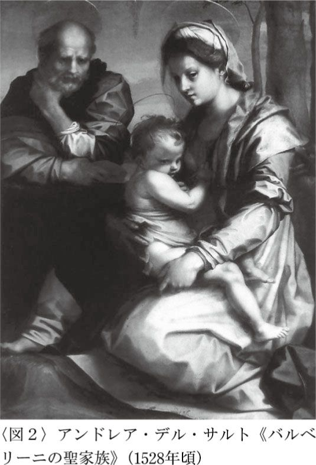
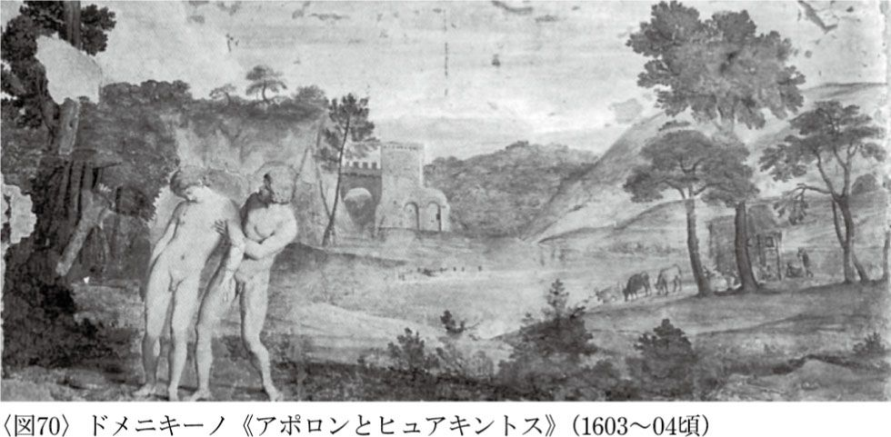

| 恋する西洋美術史 | |
| 池上 英洋 | |
| (2008) | |

私の美術とのつきあいは長い。そもそも初恋の相手が、絵に描かれた少女だった。家にあった何冊かの画集には、キスシーンや、もっと大人の世界の場面がいくつも並んでいた。ごく幼い頃には、ただのにぎやかな色の集まりにしか見えていなかったのに、次第にそれらは子供心にもなにかハッとさせるような衝撃をもって知覚されるようになっていた。
神々は激しく愛しあい、文学作品の登場人物たちが熱く抱擁しあっている。こちらでは抱かれる寸前の女性が木々に姿を変えようとしており、あちらではなぜか女性が短剣で自らの胸を貫こうとしている。そのうちにいやでも気がつく。美術作品のかなりの部分を、恋愛のテーマが占めているということに。
つまるところ、人類の二大関心事は、ずっと死と愛だったということだ。美術作品に描かれた主題に、そのふたつのテーマに関係するものが多いのも当然だ。
しかし、なぜそれらは死と愛なのか――。それは、そのいずれもが強大で、人類が常にそれらに振りまわされていたからに違いない。死は、どうにも避けようがない。死ぬことは、何にもまして決定的なことだ。そして恋愛は、常に思いどおりにいかない。だからといって、避けて平然としていられるほど私たちの心は強くない。結果的に、私たちは恋愛のために悩み、悲しみ、泣き叫ぶ。そして笑い、喜び、涙を流す。
恋愛がおおごとであるのは、私だけではなかった。読者のみなさんだけでもない。安心してほしい。人類の長い長い歴史を通じて、恋愛は常に私たちの人生にとって重要なものであり続けたのだ。
＊
美術史という学問は、面白い。絵に描かれたことは、描いた人の心情を映し出し、その時代や地域の社会背景を浮かび上がらせ、そして観る者の心の中になんらかの反応をひきおこす。
人類の歴史は、現代のように文字がコミュニケーションにおける有効な手段である時代よりも、識字率がおそろしく低い期間のほうがはるかに長い。だからその間のことを知ろうと思えば、最大のメディアだった絵画を「読む」必要があるのだ。本書で私たちが絵を観ながら恋愛の諸相を追っていくのも、こうした理由による。
まずは、画家たちの恋愛事情を見てみよう（第一章）。美術史にはいくつかの約束事があって、そのひとつに「芸術家の人となりと、出来上がった作品とは切り離して考える」というものがある。当然のことだ。しかしその一方で、画家本人に起きた出来事が、その人の考え方の形成に大きく関わることも事実である。ルノワールの作品や、カミーユ・クローデルの作品に込められた意味を知るのは、そうした私的な側面を無視していては不可能である。
次に、ゼウスやクピド、ヴィーナスといった愛の神話の主要キャラクターを見てみよう（第二章）。これは、その後の章を理解するために、そしてひいては芸術作品を理解するために不可欠な手続きとなる。というのも、作品に描かれた恋愛のテーマは、そのほとんどが彼らのエピソードに託されて表現されているからだ。
この手続きが済んだ後は、これまでの人類の恋愛の諸相を、絵を読みながら覗いてみよう（第三章以降）。現代とはずいぶんと異なる点があって興味深い。そして同時に、驚くほど変わっていないこともまた多い。
＊
最後に、ここでひとこと断っておくべきは、表記に関することである。たとえばヴィーナスは、ウェヌスというローマ神話の女神の英語読みである。ギリシャ神話でこれに対応する神はアフロディテである。このなかで日本で最も一般的に通じる呼称は、文句なくヴィーナスである。一方、ゼウスはギリシャ神の名で、ローマ神のユピテルにあたり、英語ではジュピターという。こちらはなぜか、ゼウスという名が最も知られている。クピドはもっと複雑で、アモルやエロスといったさまざまな神と同じグループに入れられている。彼の英語名キューピッドはわが国ではお馴染みだが、絵画作品のタイトルの翻訳ではクピドであることが多い。
いつもながら、こうした事情が本を書く者を悩ませる。本書では結局、日本における読者の理解の便を考慮して、ヴィーナスとゼウスとクピドという名前でおおよそ通すことにした。
同様に、作家名や地名も、日本でお馴染みの表記があればそれを優先することにし、それ以外はできるかぎり原語読みに近づけた。
たとえばピーテル・パウル・ルーベンスは、リュベンスのほうが実際の発音には近い。しかし、そう書くと誰のことだか理解してもらえないおそれがあるだろう。ラファエロをラッファエッロとは書かないのも、アントワープをアントウェルペンとは表記しないことも同じ理由による。
また、図版で作品を紹介する画家については生没年を付した。さらに、文中で引用する文献には、できるかぎり書誌情報をつけた。ここを入り口に、さらに個別のケースを深めていくために利用していただきたい。
目 次
初恋の相手
中学生の頃、クラスで前の席に座っていたのが、やはり絵が好きな友人だった。ある日彼が僕に向かって、本を開き「この子たまんないよね」と言いながら一枚の小さな絵を見せてきた。僕はドキッとした。というのも、それは一人の少女を描いたルノワールの絵で、恥ずかしながら告白すれば、その少女イレーヌこそ僕の初恋の相手だったからだ。
どうしてそういうことになったのか覚えていないが、僕たちは「この絵を模写しよう！」と意気投合した。深い緑の背景から浮かび上がる、肩まで覆う豊かな長い金色の髪。やや上方をぼうっと見上げる、物憂げな青い瞳。薄暗い放課後、イーゼルに《イレーヌ・カーン・ダンヴェール嬢》（チューリッヒ、ビュールレ・コレクション）をたてかけて、二人だけで黙々と模写をする日々が続いた。まったく、ほっぺたの紅い男子校中学生とは、どうしようもない生き物ではある。
ピュグマリオンという男の物語が、ギリシャ神話にある。
古代ローマの詩人オウィディウスの『変身譚（転身物語）』によれば、キプロス島の王であるピュグマリオンは、まわりにいる現実の女性たちに幻滅し、ずっと独り身ですごしていた。優れた彫刻家でもある王は、自ら理想の女性の姿を象牙で彫り始めた。
創り上げたその女性像に、王はいつしか恋心を抱くようになった。肌を愛撫し、語りかける。服を着せて、アクセサリーで飾る。果ては、寝床にまで持ち込んで毎晩一緒に寝るようになった......。
今なら「キモい」の一言で片付けられてしまうような話だ。でも、私は笑えない。少女イレーヌをキャンバスに描きながら、溜息をついていた自分の姿を思い出すからだ。
愛の女神に祈る
ピュグマリオンは、ヴィーナス神に向かって祈った。自分が愛する彫像のような女性が、いつか私のもとへ現れますようにと。
愛の女神は、王の荒唐無稽な、しかし真剣な祈りをききいれた。王が邸宅に戻ると、はたして女性像に変化が現れ始めているではないか。肌は血色を帯び、ためしに押してみると、柔らかくへこんで押し戻される。青く浮き出た血管からは、かすかに脈動までもが感じられた。こうして彫像は生身の女ガラテアとなり、ピュグマリオンの妻となって、二人は幸せな家庭を築いた、という話である。
ギリシャ神話のさまざまなヴァリアント（異説）をあわせて紹介してくれるので重宝しているカール・ケレーニイ本によれば、キプロス島の王として登場するピュグマリオンは、その島でもともとヴィーナスの恋人とみなされていた。またヴァリアントのひとつでは、王が彫っていた像自体、ヴィーナス神をかたどったものだという。
ヴィーナスは愛と豊穣の女神であり、古代世界で最も信仰を集めた神の一人であるため、本書でも彼女の名前はたびたび目にすることになるだろう。愛の女神だからこそ、ピュグマリオンのかなりフェティッシュな愛を寛大にも聞き届けたのである。
またヘシュキオスによれば、キプロス島の住民は、ピュグマリオンをヴィーナスの恋人であるアドニスと同一視していたという。アドニスはヴィーナスの片思いの相手としてよく知られており、とくにルネサンス期に絵のモチーフとしてよく描かれるようになった。
アドニスとその物語については後に詳しく見ていくことになるが、ここで記憶しておきたいことは、アドニスもピュグマリオンもキプロス島と密接な関係を持っている点である。ピュグマリオンが島の伝説の王であるのと同様、アドニスもキプロス由来の神だと信じられていた。
地中海の東の端にあることでわかるとおり、地中海世界にとってながらくキプロス島は「東のはて」そのものであり、それよりも遠方の中東やアジアからもたらされた逸話が、キプロス島の話としてひっくるめて伝えられてきたという側面がある。実際、後述するように、私たちはアドニスの前身を、はるかに古い中東地域で見出すことができる。
キスによる覚醒
さて、ギリシャ神話本の定番となったブルフィンチも書いているように、ピュグマリオンは彫像を覚醒させる際、その口にキスをしている。
ジャン＝レオン・ジェロームによる《ピュグマリオンとガラテア》（一八九〇年、ニューヨーク、メトロポリタン美術館、口絵１）も、この劇的な場面を描いたものである。絵でもマンガでもいい、なにかそこで描かれたキャラクターにほのかな恋心を抱いたことのある人は、以下に引用するこの美しい場面を妄想してみてほしい。
（ピュグマリオンは）その口に接吻いたしました。すると像の口が暖かいような気がしました。ピュグマリオンはもう一度唇を押しあてて、その手足をかき抱きました。（中略）この時やっとアプロディテの信者は、女神にお礼を申すことに気がつきました。そうして自分と同じく生あるものとなった処女の唇にその唇を押し当てました。処女は接吻されると顔を赤くして、おどおどした眼を明るみに見開きながら、じっと恋人なるピュグマリオンを見つめました。（トーマス・ブルフィンチ『ギリシア・ローマ神話』野上弥生子訳、岩波書店）
ジャン＝レオン・ジェローム（一八二四～一九〇四）は、アカデミアの教授を長くつとめた、骨の髄までこれアカデミズムという画家だった。彼が描くヌードがこれ以上ないほどリアリスティックなのは、それが当時のリアリズム至上主義を自ら体現しようとつとめた結果だからであるとも言える。
ガラテアの足元はまだ象牙の質感を保ち、しかしお尻から上は、いきなり生身の肌のみが持つ温かさと柔らかさをよく表現している。生命を宿すほどにリアリスティックな芸術作品。それこそ、ジェロームとそのアカデミズムが目指したものであり、芸術作品に命を与えたピュグマリオンの物語は、その理想に最もふさわしいエピソードだったということができるだろう。
この「愛によって命を得る」という物語は、ロマン主義的な趣味とも合致した。ラファエル前派のエドワード・バーン＝ジョーンズ（一八三三～九八）が、ピュグマリオンに関する連作を描いたのもそのためである（一八七五～七八年、バーミンガム美術館、図１、連作の第四場面にあたる）。
ジェロームの作品と比べると、こちらのピュグマリオンは女性的で、すこしも彫刻家らしくない。およそ現実的とは思えない空間や色使いとあいまって、幻想的なある種の甘さが色濃く出ている。ジェロームの作品と並べて見れば、リアリズムを理想にかかげた芸術と、耽美的なロマンティシズムを理想とした芸術との違いがよくおわかりだと思う。
この物語はまた、バーナード・ショーによって戯曲となり、それをもとにミュージカルや映画となったものが、『マイ・フェア・レディ』であることを、ご存じの方もおられるだろう。しかし、ピュグマリオン伝説を念頭に置きながら映画を観てみると、最初はしがない無教養なオードリー・ヘプバーンが、上流階級に通用する社交性を身につけたことをもって、男性にとって「作品が完成」し、かつ男性によって「生命を与えられた」という意味になる。言い換えれば、それまで彼女は「社会的には生きてさえいなかった」とみなされているのだ。そう思うと、そのあまりにもブルジョワ的な階層意識が途端に鼻につき始めるのは、はたして筆者だけだろうか。

聖母マリアはイエスを膝に抱え、外敵から守るかのように体をやや内側に向けている。画面に占める割合からも、作品の中心が聖母子であることはあきらかで、一人だけややうす暗いコーナーにたたずむヨセフはまるで添えもののようだ。当時のフィレンツェ派としては珍しいほど明暗の対比が強く、バロックを予告するような画面構成は、盛期ルネサンスでは革新的に見えたことだろう。
マリアは、頰の下側がぷっくらと膨らみ、やや顎が張った輪郭をしている。この特徴ある顔は、アンドレアの作品群に頻出する。アンドレアの工房には聖書主題の注文が多く、そのため聖母子をあつかった作品が多いが、それら聖母たちの顔はほとんど同じ顔をしている。妻ルクレツィアこそ、そのモデルである。
ルクレツィアは本名をルクレツィア・ディ・バッチョ・デル・フェーデといい、もとはペレッターイオという男の妻であった。ヴァザーリはこう書いている。「彼はある若い女に惚れこみ、その女が暫く後に後家となったので、その女を娶って妻とした。そのためアンドレーアはその後の人生でそれまでの人生ではしなかったような苦労と仕事を背負いこんだのであった」（ヴァザーリ『続ルネサンス画人伝』、平川祐弘ほか訳、白水社）。
ずいぶんと辛辣な書き方である。ヴァザーリはかなり自由に脚色するので、この話もその類だろうと思われるかもしれない。しかし、ヴァザーリ本人が、アンドレアのもとで実際に修業した経験があるから、これは弟子から見た師匠の伝記であり、記述にも相当な信憑性があるとみなければならない。
ヴァザーリによる師匠の妻への批判は、実はこんなものではない。というのも、先に引用した『画人伝』は一五六八年の増補版だが、一五五〇年に出た初版からはカットされた部分があった。
増補版でカットされた部分では、ルクレツィアは「高慢で気位が高く、しかもいろいろな男に言い寄られると色目を使う、すこぶるあだっぽい女であった。女は多くの男を夢中にさせたが、その中に哀れなアンドレーアもまじっていた」とまで書かれていた。
初版が出た一五五〇年、師匠はすでにこの世にいなかったが、驚くべきことにルクレツィアのほうはまだ生きていた（一五七〇年に亡くなる）。いまだ存命中の女性に対して、その夫の弟子がこれほどまでに厳しい批判をすることは珍しい。このことは、出版後おおいに話題となったに違いない。
想像するに、ヴァザーリは同門の兄弟弟子たちからかなり非難を浴び、いさめられたのだろう。そこで増補版では大幅にカットしたのではなかろうか。
面白いもので、一五一七年頃から数多く描かれるルクレツィアの顔は、年がたつにつれて見事に老けていく。掲載作の《バルベリーニの聖家族》は一五二八年頃の最晩年の制作である。その頃すでにペストに全身を蝕まれていた画家は、愛する家族に病気をうつさぬよう、一人部屋に閉じ込もっていた。一五二七年には、すでに遺言状をしたためている。遺言状は口述筆記によるもので、残される義理の娘の将来を心配して、持参金を遺贈することを書きとめさせたのだ。
アンドレア・デル・サルトは、ライヴァルと目されたミケランジェロやラファエロを超えることはついになかった。ヴァザーリはその原因を画家の妻にかぶせているが、罪なことだ。弟子である自分にとっては、理想的な工房女将ではなかったのだろう。
しかし、ルクレツィアは、はたして悪妻だったろうか――。もし、尊敬の念を持つべき相手ではないとしたら、そのような女性を、深く愛している妻だからといって、はたしていつも聖母の顔に選ぶだろうか。
愛情あふれる視線
ほかにも、愛する人を聖母のモデルにした画家は多い。そのなかでも有名な伝説のひとつが、フィリッポ・リッピ（一四〇六頃～六九）に関するものである。「伝説」と書いたのには、彼が描いた聖母マリアのモデルが、本当に妻であるかどうかの確証はどこにもないからである。しかし、そう思わせるに充分な傍証は少なくない。
フィリッポ・リッピの名前の前にはよく「フラ」をつけるが、その理由は、フラ・アンジェリコらと同様、彼も修道士だからである。すぐにピンと来られた方もおいでだと思うが、カトリック世界において、修道士には妻帯が許されていない。それでも彼が妻持ちとなったのは、彼が修道女と駆け落ちしたからである。誘拐、といったほうが正確かもしれない。
彼はカルメル会の修道士として、プラート（フィレンツェの隣町）にある、サンタ・マルゲリータ女子修道院に職を得た。礼拝堂付き司祭としてであり、また画家として宗教画を制作するためだった。しかし彼は、任命されたのと同じ一四五六年に、尼僧ルクレツィア・ブーティと激しい恋に落ちてしまう。リッピは五〇歳前後、ルクレツィアはおそらく二〇代であった。二人はそろって修道院から逃げだし、翌年には息子が生まれた。
修道士が尼僧と駆け落ちする。こうした事件はもっと昔からあり、中世期には晒し刑に処せられて町中の笑いものにされた。あげく、耳や鼻といった体の一部を削がれたり、陰茎などの性器切断や死罪に処せられることもある重罪だった。しかし、フィリッポ・リッピには絵の才能という、余人をもってかえがたい能力があったことが幸いした。罪一等を減ぜられ、還俗を許されて、ふたりは正式に夫婦となった。
フィレンツェのウフィツィ美術館に、《聖母子と二人の天使》という、世にも美しい絵がある（一四六五年頃、図３）。切り立った岩々がそびえる、幻想的で遠大な風景。窓枠が、そのまま画面の額縁の役を果たすだまし絵となって、その手前に人物たちがいる。聖母マリアは手をあわせ、わが子イエスに向かって祈る。息子に将来ふりかかるつらい運命を察知してでもいるのか、表情には、わが子の安全を祈る切ないような願いと、母としての慈しみの愛が同居している。
マリアはまだ若く、繊細でいたいけで、リッピ特有のこまかな描写と柔らかな線がよく似合っている。この落ち着いた画面にあって、右下でイエスを抱え上げる天使だけは一人楽しそうだ。愛くるしいその笑顔は、この静かな空間に明るさを与えている。
この作品はリッピ晩年の作品だが、この時、ルクレツィアとの間に生まれた息子は八歳前後になっている。彼は長じて画家となり、フィリッピーノ・リッピとして父以上の売れっ子となる。フィリッピーノとはフィリッポぐらいの意味であり、父の弟子であったボッティチェリの弟子となる。父の様式を、その弟子から間接的に引き継いだことになる。
もし、ここに描かれた天使のモデルがこのフィリッピーノだとしたら、年齢的には違和感がない。そしてそれを裏づけるように、フィリッピーノがいくつか残した自画像（と思われる作品）の顔は、いずれもこの天使の顔が、そのまま青年となったような顔をしている。ということは、ここに描かれた聖母マリアのモデルも、やはりルクレツィアに帰することが可能ではなかろうか。
ここに描かれている聖女マリアが、駆け落ちした尼僧であるというこのドラマティックなストーリーは、ただの伝説などではなく、真実なのかもしれない。リッピがやや奔放な性格だったとはいえ、神の前で生涯童貞を誓った修道士が、道を踏み外してすべてを投げ出す相手だったときけば、そうだろうなと納得させてしまうだけの美しさと、彼女を見る画家の愛情溢れる視線がここにはある。
家族愛――ルーベンス
妻と一緒に、夫婦揃っての自画像を描いた画家もいる。ピーテル・パウル・ルーベンス（一五七七～一六四〇）は、一六〇九年頃に《スイカズラの木蔭（妻イザベラのいる自画像）》を描いている（ミュンヘン、アルテ・ピナコテーク、図４）。
ルーベンスは言わずとしれたバロック時代の巨匠で、外交官としても活躍し、おそらく美術史上最も社会的に成功した画家となった。彼の兄フィリプスの妻には姪がいて、一八歳になるこのイザベラがピーテルの妻となる。彼女とは、おそらく兄の婚礼を通じて知りあったのだろう。
イザベラの父ヤン・ブラントは市の書記官の一人で（フィリプスもそうだが）、教養ある大富豪だった。ヤンは政治の世界でも大きな力を持っており、ルーベンスがその後、画家としてだけでなく外交官としても才能を発揮する機会に恵まれるのは、多分にこの義父のおかげでもある。
ルーベンスとイザベラは一六〇九年に結婚。画家は当時三二歳。彼はさっそく、ふたりの姿を絵に描いた。
後に見ていくことになるが、夫婦の肖像画として上半身像はかなり描かれたが、全身像でしかもほぼ等身大のものはそう多くない。ルーベンスはまるで「閉ざされた庭」（第七章「永遠の愛」の項参照）にいるかのように、妻と自分を草花のなかに置く。ふたりは手を取りあい、観る者のほうを見つめる。豪華な衣装と宝飾品がふたりに華やかさを与えている。シルク素材の衣服に、輝くような光沢を与えるのはルーベンスお得意の技だ。
妻はひかえめな微笑みを浮かべ、夫はキザにも思える気だるさをただよわせる。画家の印として描かれるはずのパレットや筆といった画材を一切持っておらず、職はほかにもありますといわんばかりだ。ルーベンスは自らの将来に待ち受ける成功を確信しているのか、自信に溢れている。この後ふたりは二人の息子と娘にも恵まれ、仕事も順調に増えていく。工房にはヴァン・ダイクのような優秀な弟子も入ってくる。外交官としても認められ、貴族となり、女王の命を受けて国際政治の前線をとびまわる。彼は絶頂の時を迎える。
しかし、結婚から一二年後、娘が急死。その三年後には、妻イザベラも世を去る。順風続きの彼の生涯に、一瞬の翳りが訪れる。それでもルーベンスは公私ともに、立ち止まって休むことはしない。
イザベラの死から四年後、エレーヌ・フールマンと再婚。画家はもう五三歳になっている。幼な妻はわずか一六歳だ。ルーベンス好みの、豊満を絵に描いたような女性だった。それからは、彼の絵を、エレーヌのふくよかな肉体が埋めつくすようになる。ルーベンスが描く女性、と聞いて、ああ、あれね、と誰もが頭に浮かべるあのぷよぷよとした肉の塊だ。
ルーベンスは、家族の肖像画を数多く残した。イザベラとエレーヌ、そして子どもたち。それらは、夫として、そして父としての常にデレデレとした愛情溢れる視線によって包まれている。子どもたちをまるで生ける天使として描いたそれらの作品群からは、親馬鹿でなにが悪いというルーベンスの開き直りの声がきこえてきそうだ。
穏やかな愛情――ルノワール
豊満な体型の女性を好むという点では、オーギュスト・ルノワール（一八四一～一九一九）もひけをとらない。彼は一生で数多くの女性と恋に落ちている。そしてその多くが切ない終わり方をする。恋文がみつかってある家から絶縁されたり、かつての恋人が別の人と結婚する時に彼女の肖像画を描いて贈ったりしている。また、別の恋人は彼のモデルをつとめた後、病死してしまった。
こうした背景にはほぼ確実に、彼の経済的困窮があった。実際、皆貧しかった印象派グループのなかでも彼の貧しさは群を抜いており、またその期間も長かった。彼の人生は常に貧困のうちにあった。
40フランの手持ちがなく、困っています。お借りできないでしょうか。一部でも結構です。他の人にもきいてはみますが、今日のお昼までに40フランがどうしても要るのです。でも私の手元には３フランしか無いのです――（宛先不明の手紙、おそらく一八七〇年代。引用はJacqueline Albert Simon & Lucy Rosenfeld, A Century of Artists' Letters,A Schiffer Book, Atglen 2004より、筆者訳）
現代通貨との換算は難しいが、ルノワールの手元にはおよそ千円ほどしかないと思ってよい。弟や画家仲間、そして周囲の人々がいれかわりたちかわり彼に手をさしのべるが、経済状況はなかなか好転しない。
彼は幾度かの失恋を繰り返したのち、アリーヌ・シャリゴと恋仲になる。《舟遊びの昼食》（一八八〇～八一年、ワシントン、フィリップス・コレクション、図５）は、この頃の作品だ。
出会って恋を育て始めたばかりの恋人は、セーヌ河畔のレストラン・フルネーズ（近年営業を再開した）のテーブルで、子犬とじゃれあう姿として描かれている。多人数を描いたもので、登場人物のモデルたちもほとんどわかっている作品だが、密集した画面右側に対し、左側にはそっぽを向いた男性とアリーヌがいるばかりであり、そのひときわ目立つ仕草と大きな花のついた帽子、テーブルの白との対比が際立つドレスの黒さなどで、私たちの注意は自然とアリーヌへとひきつけられる。
アリーヌの愛くるしさの一方で、この作品の制作時期はルノワールが印象派の手法に対してやや疑問を抱いていた頃である。そのことは、いったんはパレットから追放したはずの黒色がふんだんに使われていることからも明らかである。
そしてより細かくなったタッチは、光と色の効果のみを追求しようとしていた急進的な印象派に比して、より人体の描写に適した方法へと変化している。簡単なことだ。ルノワールにとっては、やはり人間の体こそ、常に中心モチーフであり続けるのだ。
一八八六年に描かれた《母と子（母性）》では、すでに母となったアリーヌが、前年に生まれた長男ピエールに乳をやっている（青山ユニマット美術館、図６）。
色彩と明暗の対比は極力抑えられ、パステル調の画面に母子の幸せそうな姿が浮かんでいる。人体は明確な輪郭線でふちどられ、印象派と点描派のどちらからも距離を置いている。彼がイメージしているのは古典主義の人体であり、なかでもラファエロが描く愛らしい聖母子だった。
幸せそうなアリーヌの表情には、息子の誕生のほかにもうひとつ理由がある。この年の春、作品が何枚かまとまって売れたおかげで、慢性的な貧困状態から一時的に脱することができていたのだ。画家は妻子を連れて夏のヴァカンスに出かけ、この作品にみられるような新しい作風へと挑戦を始める。だが彼は描きためた作品を後から全部棄ててしまったりと、迷いに迷っている。おまけに、画商デュラン・リュエルは新しい作風をまったく評価せず、辛辣な評価をする。しばらく、画家には真に明るい光は射してこない。
一八九〇年、ルノワールとアリーヌは正式に結婚する。画家はすでに五〇歳目前だ。その二年後、リュエルは一一〇点ものルノワール作品を集めた大展覧会を自分の画廊で開く。この賭けの目は大成功と出た。政府からも注文が届き、ようやく、長い長い経済的困窮の時期は終わりを告げた。かつて手元に三フランしかなくて悲嘆にくれていた画家は、晴れて大家の仲間入りをした。
一九一〇年に描かれた《ルノワール夫人》（ハートフォード、ワーズワース・アテネウム、図７）を見てみよう。五一歳になったアリーヌは、ふくよかさを一層増して、威厳さえ感じさせる。その顔つきには、ただ愛くるしいばかりだった少女の面影はない。そのかわりに、長年の苦楽の体験が育てたのだろう意志の強さと自信とがはっきりと読み取れる。そして糟糠の妻を見つめる六九歳の画家の目には、長年の苦労をともにしてきた夫婦だけが持つ、穏やかな愛情と感謝のまなざしが浮かんでいるに違いない。
ようやく辿り着いた、明るく濃い色彩を柔らかなタッチでゆっくりと重ねていく、ルノワールだけの描き方。彼の長年の苦労を知れば知るほど、彼が残した数多くの作品に、まったくと言ってよいほど重い主題や暗いモチーフが登場しないことに驚かされる。
画家の人生と、作品とは切り離して考えよう。たしかにそのとおりだろう。しかし、ルノワールがアリーヌに注いでいた、常に変わらぬあたたかな視線を見ていると、画家の愛情や想いが様式を決定することもあるのだと思わざるにはいられない。
私にとっては、絵画というのは愛らしく、喜ばしく、かわいらしいものでなければならない。そう、かわいらしくなくては！ この世にはただでさえ悲しいことがあふれているのだから、私たちまでがそれを増やす必要はないのだ――（ルノワールの言葉。引用はSabine Adler, Lovers in Art,Prestel, München 2002より、筆者訳）
破滅的結末――モディリアーニとジャンヌ
愛する人を描いた画家の話にはきりがないが、モディリアーニのケースを無視するわけにはいかないだろう。
アメデオ・クレメンテ・モディリアーニ（一八八四～一九二〇）は、イタリアのリヴォルノのユダヤ人家庭に生まれた。いくつか残っている写真には、世紀の美男俳優マストロヤンニとも張りあえるのではなかろうかと思えるほどの色男が写っている。
よく知られているように、彼は破滅的な生涯をおくった。チフスや結核といった大病にたびたび見舞われる虚弱体質ながら、モンマルトルで知りあった画家仲間たちと、毎晩酒を浴びるように飲み続けた。そして詩人や作家をしていた女性たちと交際しては、喧嘩別れに終わる。
ヨーロッパが激動期に突入し、第一次世界大戦が始まると、病弱のため兵役を免除されたモディリアーニは、世の中の動きを無視するように絵画制作に没頭し始める。しかし開かれた個展では、ヌードを描いた作品が不謹慎だと批判され、中止を余儀なくされる。
画家が最後の四年間をともにすごすジャンヌ・エビュテルヌと深い仲となるのは、この暗く重い時期にあたる。
ジャンヌとモディリアーニは、美術学校で知りあった。「ノワ・ド・ココ（椰子の実）」と呼ばれていたジャンヌも、やはり画家を志していた（近年、彼女自身の作品も発見されている）。二人は同棲を始めるが、モディリアーニには、毎晩酒を飲みに出かける習慣をやめる気はいっこうに起きないらしい。
一九一八年五月、ドイツ軍がパリへ向かって侵攻。二人はパリを離れて南仏へ一時的に避難する。
その年の末にジャンヌは女の子を出産し、翌年、パリに戻った二人は正式に婚約をかわす。しかし、モディリアーニの体はふたたび結核におかされていた。今度こそは助からないだろうことを、モディリアーニ本人はうすうす勘づいていた。彼はあたかもジャンヌを彼自身のミューズ（霊感を与える美神）であるかのように、モデルにして肖像画を何枚も描き続ける。「ジャンヌ・エビュテルヌのおかげで、おそらく彼は生きる喜びを全身で知って再生したことであろう。だが時折ふとまた飲み始めるのは死の影に立ち向うためではなかったのかと思われる」（アンドレ・サルモン『モディリアニの生涯』福田忠郎訳、美術公論社）。
《黄色いセーターのジャンヌ・エビュテルヌ》（一九一八～一九年、ニューヨーク、グッゲンハイム美術館、図８）は、モディリアーニが最終的にたどりついた様式による作品だ。よく指摘されるように、彼による形態の単純化には、黒人彫刻から感銘を受けたことや、古代ギリシャで神殿を支えるカリアティド（女性像による人像柱）から受けた影響がある。彼の描く女性たちが、どことなく円柱を思わせるゆるやかな曲線と丸み、縦長の立体性を有しているのはこうした理由による。
また同時に、彼が若い頃教育を受けたイタリア美術の影響を忘れてはならない。感情的、物理的な動きを抑えた静けさは、ピエロ・デラ・フランチェスカやウッチェロといったルネサンス画家たちとモディリアーニとのつながりをよく示している。
晩年になればなるほど、有機体は無機質に近くなる。悲劇的な人生ばかりが注目されるモディリアーニだが、宮下規久朗が正しく指摘しているとおり、この画家に関しては「造形的にも社会史的見地からも見直しが必要である」（『モディリアーニ モンパルナスの伝説』、小学館）。
一九二〇年に入ってまだひと月もたたない冬、激しい吐血を繰り返したモディリアーニはパリの慈善病院に運ばれる。結核は脳膜炎をひきおこし、意識不明のまま亡くなった。まだ三五歳の若さだった。その二日後、ジャンヌはアパートの六階から身を投げて愛する人の後を追う。二人は正式な結婚もすることはなく、自殺した時、ジャンヌのお腹のなかには二人目の子供がいた。ひとり残された娘は、モディリアーニの姉に養子としてひきとられた。恋人の死を覚悟していたのか、そしてその後を自らも追うことを決意していたのか、近年発見されたなかに、ジャンヌの《自殺》という絵がのこっている。
最も愛し愛された画家
「英雄、色を好む」という言葉があるが、美術の世界にもそのような人がけっこういる。いまだに腎虚で死んだと信じている人がいるラファエロ、モデルを数多くはべらせていたとも言われているクリムト、自信満々のゴーギャン。ロダンも碌なものじゃないし、マティスは「あんな歳になって若い女の尻を追っかけて」とピカソに陰口をたたかれている。
しかし、そう言っているパブロ・ピカソ（一八八一～一九七三）のほうこそ、美術史上最高のモテ男である。女がとぎれたことがなく、歳をとってからも孫ほどの歳の娘をナンパし、おまけに最後はたいてい、冷たく切って捨ててしまう。
ヘイスティという人が書いた、その名も『ピカソの女たち』という本がある。途中で読むのがいやになるような本である。というのも、いくら「画家の人生と、残した作品とは切り離して扱うのが原則」だと言い聞かせていても、「このままではピカソが嫌いになりそうだ」という恐怖を読む者に味わわせるに充分な内容だからである。
ピカソには、生涯を通じて、親密な友人と呼べる人間は、甚だ少なかったし、彼は、どんな人間でも、男女を問わず、実に言語道断な扱いをしたといわれている。今世紀初頭、まだ貧乏暮らしをしていた頃のピカソは、気ままに他人から金を借りていたものだが、金持になった後は、他人に金を貸すことを嫌がるようになって（中略）、貧乏人を近づけないために、晩年、彼はぼろ服を着て暮らしていたのだ。そのうえ愛人についてさえ、彼女が妊娠して、（中略）常にピカソの着古したズボンをはいているのを見ても、全く気にもかけないのだった（そればかりか、後になって、彼女のおかげでズボンの形がすっかりくずれてしまったと文句を言ったほどだ）。（ロイ・マグレゴル＝ヘイスティ『ピカソの女たち』東珠樹訳、美術公論社）
万事この調子である。同書ではピカソの女たちがそのまま章の名前になっているのだが、ちょっと列挙してみよう。マリア、フェルナンド、エヴァ、オルガ、マリー・テレーズ、ドラ・マール、フランソワーズ、ジャクリーヌ。最初に出てくるマリアとは母親のことだが、バルセロナの母のもとで暮らしている一〇代の頃、早くもパブロ・ピカソは売春婦遊びを始める。パリに出てからもしばらくは売春婦が彼の相手をしていたが（「青の時代」にあたる）、ほどなく、近所に住んでいたフェルナンド・オリヴィエと同棲を始める。
フェルナンドは夫に逃げられた人妻で、ピカソにとってはパリでの母親がわりだった。彼女とピカソの関係は、ピカソの絵が売れ始めるにつれて悪化し始める。最後は、友人の愛人だったエヴァ（マルセル・ウンベール）にピカソの気が移ったのを機に、不幸な喧嘩別れに終わった（フェルナンドは後に手記を書いている）。
都合の良い女
最初の妻となったのは、ロシア人バレリーナのオルガ・コクローヴァであり、ピカソはオルガとの間に一児をさずかる。ピカソが三七歳の時に結ばれた両者の結婚関係は、三七年後にオルガが亡くなるまで続く。しかしその長い年月の大部分は、若い女性たちと次々に関係を持つ夫を口汚く罵る妻と、うんざりしてますます冷たくあたる夫の、いがみあいの日々であった。
二人は法的にも争い続け、オルガは財産と子供の養育費を得ることに成功する。しかしピカソは、オルガの知らない口座を五つもの銀行に所有していた。オルガの直接の死因はガンであるが、晩年にはほとんど精神錯乱をきたしていた。
四八歳の時、ピカソは百貨店でマリー・テレーズ・ワルテルと出会う。金髪、大柄、豊満な体つき。このスイス娘はピカソの好みをすべて満たしていた。さすがはピカソ、躊躇することなく、いわゆる「街頭ナンパ」ですぐに彼女を口説き落としてしまった。当時マリー・テレーズは一七歳、なんとピカソより三一歳も年下だった。
ピカソはアトリエを新たに借りて、そこに愛人を住まわせた。二人は溺れるように、来る日も来る日もセックスに耽った。かぎまわる妻から隠れるように、マリー・テレーズはピカソが来るまでじっと部屋にひき込もってすごした。「おつむが足りない」という証言がいくつか残っているこの美少女は、ピカソにとってどこまでも便利な「都合の良い女」だった。
マリー・テレーズをモデルにした一連の作品が残っている。
《鏡の前の少女》（一九三二年、ニューヨーク近代美術館、図９）は、〈ヴァニタス〉や〈化粧台のヴィーナス〉といった主題で伝統的な、「鏡を見る女性」という図像を、この時期の「ややフォーヴ、ややキュビズム」という様式で描いた作品である。金髪、切れ長の目、明るい肌。そしてピカソならではの多視点的な「お尻と乳房の同時見せ」においても、彼女の健康的な豊満さがよくあらわれている。彼女はピカソの娘を産むが、オルガの死後も籍を入れてもらえなかった。いや、はやくも娘の出産直後には、ピカソは次なるターゲットとなるドラ・マール（マルコヴィッチ）に狙いを定めていたのである。
捨てられた女たちの肖像
いつも泣いてばかりいる、との証言があるドラ・マールは、なるほどピカソの《泣く女》（一九三七年、ロンドン、テート・モダン、図10）のモデルとなった（このあたりのことは、フリーマンの書に詳しい。ジュディ・フリーマン『ピカソと泣く女』福のり子訳、淡交社）。
この作品は、前掲した《鏡の前の少女》のわずか五年後の作品だが、その画面処理には大きな変化があらわれている。個々は立体的ながらも量塊としての立体感は放逐しており、重層的なモデルの描き方は、そのままピカソのまわりで泣く女性が複数いたことを重ねあわせているかのようだ。
モデルとなったドラ・マールは優れた写真家でもあり、プライドが高く、マリー・テレーズと激しくぶつかりあった。
（マリー・テレーズは）「私はピカソの娘の母親なのですよ」と言った。（中略）「私だって、これから彼の子供の母親になれますよ」（中略）そして二人の女は、たちまち、絵筆や絵具の散乱する床の上で大格闘を始めた。サバルテス（註：助手のようなことをしていた）は不安そうにこれを眺め、ピカソは大満悦だった。（ヘイスティ、前掲書）
大満悦？ それもそのはずで、ピカソには一夫多妻志向ともいうべき願望があった。事実、ピカソがやはり子供を産ませていたフランソワーズ・ジローという女性と、マリー・テレーズは一時期、お互いの子どもたちも一緒に仲良くすごしていた。
八〇歳で、ピカソは二番目の妻ジャクリーヌ・ロックを得るが、もはや彼女とのエピソードをここに書き加えるまでもない。ピカソの人生は、常に新しい女性を口説き、その肉体に没頭しては、やがて飽きることの繰り返しだった。まるで、絵画においても次から次へと新たな様式を生み出しては、惜しげもなく次の挑戦を始めたように。
複数の女性たちが手記を残したが、彼女たちの回想に登場するピカソがした酷い仕打ちのわりには、彼女たちがそれほど恨みごとを述べていないのも、ピカソの女たちの特徴である。しかも私たちは、これらがピカソと関係のあった女性たちの、ほんの一部にすぎないことを知っている。「パリ一の巨乳女」との艶話なども残っているし、もうこれ以上ないだろうと皆が思っていたら、詩人ジュヌヴィエーヴ・ラポルトが「実は私もピカソと長年つきあってました」と、ピカソの死の同年に手記を発表して、世間を驚かせたような例まである（ラポルト『ピカソとの17年』宗左近ほか訳、美術公論社）。
一九七三年、ピカソは九一年の生涯を閉じる。その前年、知人にむかってようやく「九〇歳になったから、そろそろセックスと煙草は控えるつもりだ」とうそぶくほど、常人の何倍もの活動エネルギーに溢れた人生だった。
人気芸術家との出会い
女流芸術家の人生の、それも男にふりまわされた極端な例を、私たちはカミーユ・クローデル（一八六四～一九四三）の生涯に見ることができる。特に相手がピカソにも匹敵する巨人だった場合には、ふりまわされるほうも痛手が大きいのだろう。カミーユ・クローデルの場合、その相手はロダンだった。
カミーユの才能は早くから注目されていた。一八八二年、一家はパリに出て、カミーユは美術学校でロダンと出会う。カミーユは希望と野心に燃える一八歳、ロダンはすでに四二歳になっていた。
ロダンが《カレーの市民》の注文を受け、人気芸術家となり、助手が数名必要となった一八八四年頃から、おそらくカミーユもロダンの工房で助手のひとりとなったのだろう。先に恋に狂ったのはロダンのほうだった。ロダンにはすでに一緒に暮らして久しいローズという女性がいた。しかしローズはほとんど公的な場所に姿を見せない隠れた女性であり、少なくとも最初のうちは、カミーユとロダンとの恋愛になんら支障にはならないように思われた。
君に会えなくてつらい、といったような熱烈なロダンからの手紙が残っている。最初は人目を忍んでいた恋愛も、会食などへ一緒に行くようになってなかば公的なものとなった。カミーユ・クローデルは公私に充実の時を迎えた。
この時期の結実が《シャクンタラー》である（一八八六年以降、パリ、ロダン美術館、図11）。インドの恋愛詩に題材をとったこの作品は、カミーユが生涯をかけて取り組み続ける対象となる。テラコッタやブロンズ、大理石などで同じ構図が何度も繰り返された。
ロダンの指導下にあるとはいえ、人体にはより厳密に解剖学的正確さを持ち込み、肌の表現などもよりなめらかなものとなっており、カミーユ独自の才能と工夫をいかんなく示している。すでにひとかどの大家となっていたロダンは、各方面にカミーユを売り込んだ。その甲斐あって、徐々にクローデルも彫刻家として認知されていく。
一八八八年からは、カミーユは親元を離れ、ロダンが新しく借りたアトリエで、ついで大きな屋敷で同棲生活を始める。内縁の妻の立場にあったローズは、帰らぬ夫を待ちながら、孤独な生活を強いられた。ロダンはローズよりもひとまわり以上若いカミーユとの恋愛に溺れ、パリからどこかほかの地に行く時は、行った先でかならず二人のための愛の巣をつくるのだった。
破局、そして精神の病
しかし、一八九〇年をすぎると状況は徐々に変わってくる。あまりに激しく、しかも排他的なカミーユとの恋に疲れを感じるようになったロダンは、刺激こそないが平穏で癒されるローズとの日々を思い出し始める。
カミーユとの間に子供ができたことを知らされたロダンは、おそらく彼女に中絶手術を受けさせたのだろう。傷ついたカミーユはひとり暮らしを始め、ロダンはローズのもとへ帰っていった。
カミーユはロダンからある程度距離を置き、自立しようとした。しかし、それは簡単なことではなかった。経験したことのない貧窮が彼女を待っていた。弟のポールに宛てた、送金を感謝する手紙なども残っている。ロダンも責任を感じているのか、知人に作品を買わせるなどして陰ながら援助をしている。しかし、慢性的な貧困状態と、なかなかうまくいかない制作や販売、人間関係に苦しめられ、彼女は徐々に精神に支障をきたすようになっていく。彼女はロダンとの三角関係を、誰にもわかるような形で作品にしようとした。
《分別盛り》（一九〇七年、パリ、オルセー美術館、図12）では、初老の男性が、やはり老いた女性に手をひかれて立ち去ろうとしている。その男に行かないでとすがっているかのように、若い女性がひざまずいて手をあわせている。この女性部分だけを、《哀願する女》と呼ぶ。この三人のドラマが誰のことを指しているか、彼らの周辺でわからない者はいない。この石膏像は一八九八年に完成した。
スキャンダルが公になることを嫌ったロダンが手をまわしたのか、この作品をブロンズに鋳造する約束をしていた美術学校の校長は、いきなり何も理由を告げることなく予定をキャンセルした。それからのカミーユは、なにか悪いことがあるとロダンのせいだと思い込むようになっていく。
ロダンが私の成功をあらゆる手を使って妨害している。あまつさえ、アイデアまで盗もうとしている。こうした終わりなき被害妄想を皮切りに、三〇代以降のカミーユの人生の大半を、精神の病が覆い始める。
一九一四年、カミーユ・クローデルは南フランスにあるモンドヴェルグ精神病院に移送される。第一次世界大戦の勃発から一ヶ月後のことだった。
カミーユは、まさか自分が、三〇年もの長きにわたって、死ぬまでそこから一歩も出ることなく、監禁されたままになるとは思いもよらなかっただろう。
一九二一年四月一日 あいかわらず被害妄想は残存し、ある過ちと報復の犠牲であると信じ、毒殺されるのを恐れている。
一九二三年一一月 クローデル嬢は穏やかで柔順です。（中略）暴力的な危険な反応を起こすようには思われません。
一九二四年一〇月 クローデル嬢にはほとんど面会がありません。（中略）この時期に必ずあると期待していた家族の面会がなかったことに、失望しておられます。
一九三三年一月 まったく変化なし。
一九四二年一二月七日 肉体的にかなり衰えられました。四肢には浮腫が現われ、食事をとることがかなり困難になっています。
一九四三年九月一日 患者さんの衰弱は目だってきました。（中略）面会を非常に期待しておられます。
一九四三年一〇月一九日 卒中発作によって死亡されました。
（精神病院の医師たちからの、カミーユの家族への報告書、抜粋。出典はレーヌ＝マリー・パリス『カミーユ・クローデル』なだいなだ・宮崎康子訳、みすず書房）
家族との面会を常に望んでいたが、来るのは弟くらいであり、母親はついぞ来ることはなかった。弟らの訪問も次第に少なくなり、最後は完全なる孤独のうちに七九歳で世を去った。病院での略式の葬儀にも、家族や友人は誰も来なかった。
できることなら、あなたの作品は後世高い評価を得るようになりますよと、病室にひとりたたずむ失意のクローデルに伝えてあげたい。
女流芸術家という人生
この項の冒頭で〝女流芸術家〟と記したが、いまどき〝女流〟などとつけて区別すると怒られてしまうことを承知のうえで、あえてこうするのには訳がある。というのも、芸術家という職業は長い間、いくつかの例外を除いて、常に男性によって独占されてきたからである。
彼女たちが世に出るにあたっては、助力する男性たちが必要であり、それらの男性は、有力なパトロンであったり、父や夫であったりした。彼女たちにはしかし、アルテミジア・ジェンティレスキのようなごく少数の例外をのぞいて、美術史において二次的な重要性しか与えられてはこなかった。ようやく近代も終わりになって、男性からの助力よりもむしろ、自分自身の才能と努力によって世に出る女流芸術家たちがあらわれ始めた。
ベルト・モリゾはその過渡期のケースである。彼女はマネにあこがれ、マネに多くのものを学んだ。両者を恋愛関係に置いて考える人もいる。
彼女は最終的に、三三歳でマネの弟と結婚する。この夫は妻の画業に理解があり、おかげで彼女は制作を続けることができた。ベルト・モリゾの姉は夫の許しを得ることができず、画家になることをあきらめていたので、ここにも男性が女流芸術家の人生に及ぼす影響力の強さをみることができる。
しかしベルト・モリゾは人生の後半、夫の兄の影響力から脱し、画家として徐々に頭角をあらわしつつ、印象派グループのつなぎ役をつとめ続けた。
印象派として活躍したもうひとりの女流芸術家であるメアリー・カサットの場合は、まるで男性が自分の人生を決定することを拒否するかのように、生涯を独身ですごした。ほとんど恋愛の噂さえなかった。目指す方向が似ていたため強くひかれあったドガとの関係も、おそらくは友情の範囲にとどまるものだったと思われる。
肉親の死や病のせいで制作を中断した後、メアリーの作品はやっと大々的に評価され始める。彼女は、祖国アメリカ生まれの画家たちの目標になり、また自立した女性のシンボルとなった。
恋する神々
ギリシャ・ローマ神話はユダヤ・キリスト教とともに、ヨーロッパ文化の二本の柱である。その筆頭を占めるにふさわしく、オリンポスの神々のリーダー、ゼウスは威厳があって、力も強い。お得意の武器である稲妻をふりかざし、戦闘では負けたことがない。あらゆる挑戦を退け、逆らう者には容赦ない。日本ではあまり知られていないが、ノアの洪水そっくりの厳罰を人類に下したこともある。
しかしこのゼウスという神、よく知られているように、性モラルに関してだけは、とことんダメダメなやつなのである。
一応、彼には正妻のヘラがいる。ヘラはもともとゼウスの姉だが、近親婚は太古の昔では珍しくなく、特に王族など地位の高い階層ではありふれていたので、これは別に妙なことではない。しかし正妻というからにはほかにも妻や愛人たちがいて、さらに多くの「一回きり」の関係を結んだ女たちがいる。
ゼウスが子供を産ませたなかには、ヘラと同様、自らの妹デメテルもいる。彼は多くの女神たちと子をなし、ニンフや人間たちにも数多く手を出している。最高神の恋愛なので、これらの神々はしばしば愛の主題で詩や絵画に描かれることになる。
最高神の子だくさん
オリンポスの愛の神話にはひとつ公式があって、神同士の間にできた子は、やはり神となって不死の能力を身につける。神と人間の間にできた子も、不死なり高い能力なり、なんらかの神の属性を身につける。男神のなかでは他を圧倒する多芸ぶりを誇る太陽神アポロンも、ゼウスと女神レトとの間の子であるし、ギリシャ神話における二人の代表的な英雄、ヘラクレスとペルセウスは、どちらもゼウスが人間の女性に産ませた子供たちである。
実質ゼウスの最初の妻にあたる「思慮の女神」メティスとの間には、アテナが生まれる。最も頭の良い女神と、最も力のある男神を親に持つので、アテナ（ローマ名はミネルヴァ）は知恵も力も備えた、ゼウスをもしのぐ優れた神となる。まあこのあたりは、アテナの町であるアテナイが、ギリシャ世界第一の都市国家となったことによる、後からの誇張も多分にあるだろう。
メティスが宿した子が、自らの地位を脅かしかねないほどの力を持って生まれてくるだろうことを、あらかじめ知っていたゼウスは、メティスもろともアテナを呑み込んでしまう。ただし例によってギリシャ神話にはヴァリアントが多く、生まれたばかりのところを呑む話もあれば、あるいはゼウスがメティスの力を借りずに、ほとんど自力でアテナを体内に宿すという異説もある。
夫が自力で子を宿すことができれば、妻としては存在価値がなくなる。そのため、対抗するような形で、正妻ヘラがヘファイストス（ウルカヌス、火とかまどの神）を一人で産む、というヴァリアントがあることは興味深い。生まれたヘファイストスが醜く、かつ障害を抱えていることを知って、ヘラは薄情にも投げ捨ててしまう。ここには、女性の単性生殖が失敗に終わること、そして出産には夫の介在がかならず必要であることを、暗に主張する意図が垣間見える。
さて、ゼウスの思惑むなしく、呑み込まれたアテナは頭から飛び出してくる。ヴァリアントによっては、ヘファイストスが斧でゼウスの頭をかち割って、アテナを産ませるパターンもある。
北方からイタリアへ来たので「フィアミンゴ（フランドル人）」の名で呼ばれたパオロ・フィアミンゴ（一五四〇～九六）による《アテナの誕生》（一五九〇年頃、プラハ城コレクション、図13）は、この瞬間を描いたものだ。奥行きのある風景のなかに、ヴェネツィア派ゆずりの軽快な色彩による人物を配している。
アテナは誕生直後ながら、すでに彼女の持物（アトリビュート）である兜をかぶり、槍を手にしている。ゼウスは右下隅で眠りこけ、そばに斧と金槌を手にしたヘファイストスがいる。左下にいる女性は、びっしりと胸を埋める幾多の乳房から、これが古い豊穣の女神であることを教えてくれる。
お気づきの方も多いと思うが、父が子を呑み込むことは、ゼウス自身もかつてされたことである。またその父クロノスも同様のことをされており、ギリシャ神話のなかで繰り返される構図である。子が自立するためには、どこかで父を（心理的にしろ）殺す必要があるとする、精神分析では古典の部類に入る説明はよく知られている。一方、お腹を裂いたり、かわりに石を呑ませたりする方法もまた、『赤ずきん』や『七匹の子やぎ』などの童話にひきつがれている。ベッテルハイムによる「赤ずきん」解釈のように、ここに帝王切開や出産とつながるイメージを読むことも可能だろう。
嫉妬深きジューン・ブライド
ヘラには、心やすまる暇がない。夫ゼウスは次から次へと女に手を出していく。ヘラの嫉妬はすさまじい。
ゼウスの子を宿した女神レトは、あらゆる地から追放されて放浪を余儀なくされる。双子（アポロンとアルテミス）を産む時も、ヘラのせいで出産の女神の到着が遅れ、激しい陣痛で何日も苦しめられる。レトのほかにも、嫉妬にかられたヘラによって動物に姿を変えられたり、命を落としたりした被害者たちがいる。また、ゼウスの息子ヘラクレスの幾多の冒険物語も、もとはといえばそのかなりの部分がヘラのいやがらせによるものだ。
ヘラが主神の正妻であるがために、ヘラ（ローマではユノー、英語名ジュノー）の月である六月にちなんで、「ジューン・ブライド（六月の花嫁）」という言葉がある。「六月に結婚した妻は幸せになれる」ということになってはいるが、神話を読むかぎり、なんとなく六月の結婚には、嫉妬で苦しめられる夫婦生活が待っていそうだ。
ゼウスによる女性へのアプローチは、往々にしてかなり姑息である。ゼウスには他のものに姿を変える優れた変身能力があるが、それはもっぱら女性を襲う場合に発揮される。エウロペという人間の王女が相手の場合、ゼウスは牡牛となって近づいて、そうとは知らないエウロペが背中に乗った途端に、全速力で走り出し誘拐してしまう。
似たようなケースに、白鳥となってレダと交わったエピソードがある。この逸話の成立背景には、きっと獣姦の生々しいイメージがあるはずだが、そのあからさまなエロティシズムにもかかわらず、ルネサンスのキリスト教世界では高い人気を誇るテーマとなっていく（失われたミケランジェロ作品の模写、《レダと白鳥》、一六世紀、ロンドン、ナショナル・ギャラリー、図14）。レダの主題はレオナルド・ダ・ヴィンチの工房などでも取り上げられている。この主題の流行は、そのアブノーマルなエロチックさに加えて、聖母マリアの処女懐胎において、聖母マリアの胎内に宿る「聖霊」が鳩の姿で描かれる定型があるが、そこにレダと白鳥のそれがいつしか重ねあわされていった結果だとも考えられる。
さて、この作品のレダの姿勢を見て、お気づきの方もおられるだろう。フィレンツェのサン・ロレンツォ教会にあるメディチ家礼拝堂の、ミケランジェロによる《夜》（一五二六～三三年）のポーズとよく似ている。両者とも、左足を曲げて手前に寄せ、首をまげた姿勢だ。
ミケランジェロ・ブオナローティ（一四七五～一五六四）には、一五三〇年にフェラーラ公のために〈レダ〉を描いたテンペラ作品があったのだが、この絵画はその模写だと考えられている。だから両者が似ているのも当然なのである。
模写作では、レダの無防備さをよいことに、白鳥があからさまに迫っている。片方の翼はレダの陰部を覆っており、ゼウスが着実に目的を達そうとしていることが予感される。
姑息なレイプ神
ゼウスが姿を変えるのは、なにも動物だけとはかぎらない。
ガードの堅い女性、ダナエの寝床に忍び込む際には、黄金の雨に姿を変えた。雨とは、暗示というほどでもない、精液からの直接的な発想がその底にあるに違いない。また、アルゴス王の娘イオに手を出した時は、黒い雲に身をやつして降りてきた。この場面を描いた有名な作品に、コレッジョ（本名アントニオ・アッレーグリ、一四八九頃～一五三四）による《イオ》（一五三二年頃、ウィーン、美術史美術館、図15）がある。
黒雲となったゼウスは、イオの背中に手をまわしている。イオの顔のすぐ横にはゼウスの顔がうっすらと浮かび上がっている。最高神はイオの耳に息をふきかけてでもいるのか、彼女はすでに恍惚の表情を浮かべている。
縦長の画面に、イオの裸体を背中から描く。人体の描写や黒雲の様子、植物などには徹底した精緻なリアリズムを用いつつ、構図は左右均衡といった伝統を大胆に廃している。パルマという、決して大きくはない地方都市にあって、レオナルドのスフマート（ぼかし）技法といった最先端の技術を貪欲に取りいれ、その後の時代の様式を予言するかのような作品を発表していったコレッジョならではの傑作である。
ここに描かれたイオがあまりに猥褻だというので、フランスのオルレアン公の息子にあたるルイ・ドルレアンが、この作品にナイフで切りつけたという伝説が残っている。現存作品にはそのような傷はなく、実際にはコレッジョの他の作品を傷つけたのであったが、そういった誤解ができ上がったほどに、この作品は当時の人々の目には官能的に映ったということだ。しかし、ここで描かれたような官能的な快感を、信仰によって得られる法悦と同じものと解釈する考え方も一方にはあった。
ともあれ、ゼウスは姑息な変身の技によって思いを遂げた。ついでに、ゼウスは浮気が妻ヘラにばれないよう、イオを牝牛に変えるといった、実にいじましい努力もしている。
一方、処女神アルテミス（ローマ神のディアーナ）のとりまきニンフたちは、やはり男嫌いの処女ばかりだった。その一人カリストをものにしたいゼウスはどうしたか。彼はなんと、彼女の主人であるアルテミスに姿を変えて近づき、気づくわけもないカリストを襲って思いをとげる。似たパターンでは、ヘラクレスの母となるテーバイ王女アルクメネにも欲情を抱いたのだが、ゼウスは卑怯にも、彼女の夫に姿を変えることで、まんまとこの人妻を手に入れることに成功している。
よりによって、なぜこれほどちょこまかと気の多い、そして往々にして卑怯な手段で迫る強姦魔を、主神としてまつっていたのだろうと不思議に思う。しかし、ゼウスの行為をけしからんと思うこと自体、現代の日本人が多神教的な文化背景をかなり喪失してしまったことをあらわしているのだろう。
もともと多神教というものは、世界中どこでも、多かれ少なかれかなり奔放な性的エピソードに溢れたものである。多神教のほとんどが、男女のペアの神を主人公としている。そこでは、恋のかけひきや、浮気や嫉妬といった話がおのずと展開されるものだろう。周知のとおり、日本の神道もそのひとつだった。多神教世界においては、信仰になんらネガティヴなものとはならなかったこれらの要素が、一神教的バイアスがかかるにつれて変容していくさまを、本書でも後々眺めていくことになるだろう。
性愛をつかさどる神
大勢いるギリシャ・ローマ神話の神々のなかでも、おそらく最も数多く絵画に描かれたのが、クピドだろう。そしてまた、その役割と重要性がこれほど変わってしまった神も珍しい。時代によるその変化にともなって、描かれ方もコロコロと変わってきた。
マヨネーズのおかげで、日本では「キューピッド」の呼び名で最も通っているが、これはもちろん英語名である。ローマ神話での名前はクピド、あるいは「愛」を意味するアモルである。「アマーレ」とはイタリア語で「愛する」という動詞だ。さらに、ギリシャ神話において、クピドと最も近い神はエロスである。エロスというからには性愛をつかさどる神であり、当然ながらエロティシズムという用語もこの神に由来している。現代日本に溢れかえる「エロ」の語源だと思えば、かなりいやらしい神を想像してしまうが、そうではない。
あるヴァリアントでは、宇宙ができた時、混沌から生まれたさまざまなものをカップリングし、そこから「すべての素」を次から次へと誕生させていったのがエロス神＝クピドである。太古の昔から、オスとメスが愛しあってはじめて生命が誕生することはよく理解されていた。そのため、たとえ宇宙の始まりであろうと、愛の神が介在してこそ新たなものが次々と誕生することができたと考えられたのも当然である。そのためエロスは、少なくとも喜劇作家アリストファネスらによる解釈によれば、神話の世界の始まりにおいては絶大な重要性を持っていた。（参照元へ戻る）
ところが、「万物の交合をつかさどる」抽象的なエロスにかわって、「男女の恋愛を支配する」わかりやすいアフロディテ（ヴィーナス）の重要性が増すにつれて、エロスは次第に、この愛の女神の従属的な立場に甘んじるようになる。エウリピデスやヘシオドスは、明らかにエロスをアフロディテに「つきしたがう者」として描いており、また詩人シモニデスになると、両者は母と子の関係に置かれるようになる。つまりは前六～前五世紀頃から、エロスには「女神の子、あるいはせいぜいその助手」としての役割しか与えられなくなったのだ。
それにつれて、それまで主として青年の姿で描かれていたクピド（エロス）は、次第に低年齢化し始め、最後にはほとんど幼児に姿を変えてしまう。無垢で、やんちゃで、思慮がなく、好き勝手なことをして遊んでいる幼児としてのクピド。この移りかわりは、同様に最初は青年の姿で描かれていたのが、やはり幼児になってしまうキリスト教の「天使」とよく似ている。天使には最初翼などなかったが、ほどなく背中に羽を持つ姿で定着したのには、クピドやヘルメス、ファエトンといった、翼を持つ多神教の神々のイメージの影響がある。
愛による理性の超越
パルミジャニーノによる《弓を削るアモル》（一五三三～三四年、ウィーン、美術史美術館、図16）は、こうしたイメージの変遷と混乱を露呈しているかのようだ。
背中を向けたアモル（クピド）は、いたずらっぽい微笑みを浮かべながらも聡明そうで、やや両性具有的な体つきは、幼児というよりは少年、それも小学校六年生か中学一年生あたりの成熟度を見せている。一方で、画面下部にかわいらしく顔を見せている二人のアモルの表情や体つき、そしてその仕草は、彼らのひたすら無邪気な幼児性を示している。
（アモルと本を並置することは）ルネサンスにおける古典教育の再流行を示している。（中略）また同時に、パルミジャニーノは（本に足をのせることで）愛の、知的な思考に対する優位性を示しているのだ。（Irene Korn, Eros: the God of love in legend and art,Todtri, New York 1999、筆者訳）
背を向けるアモルの足元には本があり、行儀の悪いことにアモルは本を踏みつけてさえいる。コーンも言うとおり、これは愛による理性の超越を示しており、ルネサンス当時のネオ・プラトニズム（古代ギリシャの神秘思想をキリスト教的文脈のなかに取り込もうとする思想）を反映している。
削っている弓はアモル（クピド）の持物であり、よく知られているように、この矢に射られると人間は恋に落ちる。類似のものに、〈矢を研ぐアモル〉という図像もある（フレンチェスコ・ジェッシ作、ロンドン、クリスティーズ・コレクションなど）。
最大の関心事は恋愛だ、という人は今と変わらず昔もかなりいただろうから、特別な思想的裏づけがなくとも、クピドが主要な存在として数多く描かれたことは理解しやすい。ただ、「愛による理性の超越」のような主題が付されているということは、キリスト教が生活の中心であった時代には、クピドのような異教の神を描くにも、一応の大義名分は必要不可欠だったことをあらわしている。
パルミジャニーノ（本名フランチェスコ・マッツォーラ、一五〇三～四〇）は、北イタリア・マニエリスム（ルネサンス的秩序から徐々に逸脱するようにあらわれた一六世紀の様式）の代表的な画家である。彼の描く絵は、ちょっと変だ。掲載作の《弓を削るアモル》でも、アモルの体をよく見ると、上腕部などは長すぎるし、首の付き方もかなり妙だ。腰回りも、他の部位に比べるとどっしりしすぎている。しかしこうしたことは、パルミジャニーノにとっては大きな意味を持たない。彼は解剖学的に正確であるよりは、優美さや洗練さのほうこそ重んじられるべきと考えていたのだ。
〈盲目のクピド〉という主題の背景
「なぜあんな人に惚れたのだろう」と、後から我にかえった経験をお持ちの方も多いだろう。タイプでもない、いつもなら好きになる要素さえない相手。それなのに恋に落ちてしまう不条理。これは人類の歴史に常にある、普遍的な不思議にちがいない。
ならば、西洋においては、「クピドが目をつむって好き勝手な方向に射った矢が、たまたま当たってしまっただけ」とでも理由づけすれば、理不尽な恋にも一応の納得はできたのだろう。〈盲目のクピド〉という特殊な図像は、案外そのような単純な理由によって誕生したのかもしれない。これは、クピドが目隠しで目を覆っていて、狙い定めず矢を放っている図像である（「愛の女神」の項も参照されたい）。
ただし、ネオ・プラトニズムのルネサンスにおいて頻繁に描かれた図像であるとはいえ、彼らが典拠としたはずの、古代のプラトンそのものには一切出典となる記述がないことは、これまでにも指摘されてきたとおりである。むしろプラトンなどは、愛情を最も高貴な感情であるとし、それは、最も高貴な感覚である視覚を介して人間の魂に入ると考えていた。よって、もともとのギリシャ哲学においては、エロスが盲目であることはあり得ない。
〈盲目のクピド〉という主題の成立にはむしろ、「生」が「太陽＝昼」と結びつき、「死」が「月＝夜」に結びつくという、旧約聖書由来の中世ヨーロッパにおける公式が影響していることが、パノフスキーによって指摘されている（エルヴィン・パノフスキー『イコノロジー研究』浅野徹ほか訳、美術出版社）。生命を誕生させる愛は、正統なものであれば昼の光と結びつく。しかし、二次的な愛は、夜の闇と結びつく。つまりここには、精神的な愛を正しい愛、官能的な愛を不正な愛とみなす、〈聖愛と俗愛〉と共通するルネサンス的な考えがある（第七章「永遠の愛」の項参照）。肉欲を着火させるクピドは、だからこそ盲目の闇のなかにいるのである。
一方、クピドを、ヴィーナスの子とみなす傾向は長く支配的であり、その場合、父は軍神マルス（正式な夫ではなく、間男）とされた。この二人がわが子を教育する、〈クピドの教育〉という図像伝統がある。そこでは、クピドはマルスにお尻を激しく叩かれる（バルトロメオ・マンフレディ、《アモルの懲罰》、一六〇五～一〇年、シカゴ、アート・インスティトゥート、図17）。
バルトロメオ・マンフレディ（一五八〇～一六二〇か二一）はカラヴァッジョの作品を模倣して売っていたような画家なので、この作品にもカラヴァッジョの革新性がふんだんに入っている。上方からの強い光によって作り出される、明と暗のあざやかな対比。クピドの体つきまで、少年愛的な傾向のあるカラヴァッジョによる少年の描き方そっくりだ。
画面ほぼ中央には、ヴィーナスとマルスがのばした両手によって、円環のフォルムが浮かび上がる。一方、横たわるクピドの体は、画面下部を真横に貫く。このカラヴァッジョゆずりの大胆な構図と、明暗の巧みな演出によって、マンフレディは当時かなり成功した画家となる。人のまねも、高いレヴェルでなされれば評価されるということか。
この〈クピドの教育〉の図像伝統では、叩かれているクピドはかならずと言ってよいほど目隠しをしている。理由はもうおわかりだろう。ルネサンス期以降のヨーロッパにおいて、罰せられる愛は、俗なる愛でなければならず、だからこそ目隠しをつけたアモルが叩かれているのである。
その点、ルーカス・クラナッハ（父）による《目隠しをとるクピド》（一五五三年以前、フィラデルフィア、ペンシルヴェニア美術館、図18）は、クピドが自主的に目隠しを外している点で興味深い。
ここでクピドはプラトンが書いた本の上に立っており、俗なる愛にとらわれていた盲目のクピドが、悔い改めたか悟りを開いたか、とにかく目隠しを外して、ようやく正しい愛に対して目を開くことができるようになったことを描いている。
ルーカス・クラナッハ（父、一四七二～一五五三）は、ほぼ同い年のデューラーとともに、北方ルネサンス（アルプス以北のルネサンス文化をこう総称する）を代表する。彼はとにかく多作家だ。ルターの友人でもあったせいで、厳格な宗教主題も多いが、神話主題にソースを求めた作品も数多い。ヴィーナスとクピドも彼が得意とした主題のひとつである。
彼が描くヴィーナスは、イタリアでよく見られる豊満な女性ではなく、ややナスビ体系の痩せた体で、なによりそのヌメッとした独特の官能性が特徴だ。爬虫類的だとでも言えるだろうか。彼がヴィーナスとともに数多く描いたクピドは、幼く無邪気で、人間的だ。《目隠しをとるクピド》も、幼く、かつ「人間的な」彼ならではのクピド像となっている。
公にできない恋愛
円柱の上に座るクピドが、口に指をあてて微笑んでいる彫像がある（《クピド》、エティエンヌ＝モーリス・ファルコネ、一七五七年、アムステルダム王立美術館、図19）。「シッ！ 静かに」と伝える仕草をしたクピドは、いかにもかわいらしい。ファルコネはこの像を得意とした彫刻家であり、オランダだけでなく、ルーヴル美術館やエルミタージュ美術館のものなど、掲載作とそっくりな作品をほかにも数点残している。
エティエンヌ＝モーリス・ファルコネ（一七一六～九一）は、ロシアのエカテリーナ二世に招かれるなど、長年第一線で活躍したフランスの彫刻家である。晩年、病で倒れてからは一切の制作をやめ、著作に専念した。
彼は「彫刻に関する考察Réflexions sur la sculpture」と題した論文を発表した。「今の芸術なんてたいしたことない。古典がやっぱりお手本だ」という論調の批評はごまんとあるが、彼の論が斬新だったのは、過去よりも同時代の芸術家のほうが優れていると主張した点にある。
さてクピドが「静かに」という仕草をするのは、いかなるシチュエーションにおいてであろうか――。
すぐに答えが見つかった読者もおられると思うが、このクピドが登場するのは、なによりもまず「公にできない恋愛」の場面においてである。クピドは恋愛をつかさどる神なので、すべての人のあらゆる恋愛感情をお見通しだ。なかには隠しておくべき恋心をいだいている人もあるだろう。そのため、恋のさやあてのテーマや、愛人とのあいびき、不倫関係などの場面において、この彫像がしばしば画面にそのまま描かれることになる（第五章「他人の妻は、蜜の味」の項参照）。
クピドにかぎらず、口に指をあてる図像そのものは古代から存在し、一七世紀に入るとクピドが常にその主役をつとめていたことが、ショールテンらによる研究によって明らかにされている（Frits Scholten, L'Amour Menaçant or Menacing Love,Waanders Publishers, Amsterdam 2005）。それらの図像の多くは、エンブレマータ（寓意図像集）に付けられたもので、たとえば「沈黙に勝る友情はない」や、「口は災いのもと」（『Amorum emblemata〈愛のエンブレマータ〉』アントワープ、一六〇八年、図20）といった格言の挿絵だった。そこでも意味するところは明確で、簡単に言えば「自分や友人の秘め事は、黙っていましょう」との処世訓であり、秘めたる愛の場面と結びついたのもむべなるかな、と言えよう。
私はすべて知っていますけど、黙っていてあげますね。あなたたち自身も、黙っていたほうが身のためですよ......。そう警告しているのだとわかれば、ファルコネによるクピドのかわいらしい笑顔も、途端に意地悪く、おもわせぶりな表情に見えてはこないだろうか。
芸術家を魅了するテーマ
前項でクピドのことを「最も数多く描かれた神」だと書いたが、それは画面の端役として登場する回数がほとんどであって、主役をはった回数で言えば、ヴィーナスが文句なく筆頭に来る。芸術家とは往々にして美しいものを形にしたいと本能的に思うものであり、であれば最も美しいもののひとつである女性のヌードを、なかでも最も美しい女性のそれを描きたいと思ってきたはずである。最も美しい女性裸体と言えば、ヴィーナスにほかならず、古代から登場回数が圧倒的に多いのもうなずける。
キリスト教的モラルが強かった時代には、女性裸体の制作機会は、創世記のエヴァ（イヴ）を描く場合などに限られていたが、ルネサンスで古典文化が認知されてようやく、再び芸術家は、堂々と美しい女性の裸体イメージを追求する権利を手にした。
ヴィーナスのギリシャ名アフロディテが、アプロス（泡）という語に由来するという説明はよくなされる。しかしグリグスンによれば、この名前はアプロディアゼイン（性交する）やアプロディアスティコス（好色な）、アプロディシア（娼館）といった、多くの直接的な性的用語とより密接に結びつく（ジェフリー・グリグスン『愛の女神─アプロディテの姿を追って』沓掛良彦ほか訳、白馬書房）。
クロノスによって切断された父ウラノスの陰茎が、海に落ちた時に生じた白い泡から美の女神が生まれたという、ヴィーナス誕生のヴァリアントのなかで最もよく知られたエピソードも、ひょっとすると語呂がよく似た単語からの連想で、後から創作されたものかもしれない。
アドルフ・ウィリアム・ブグロー（一八二五～一九〇五）による《ヴィーナスの誕生》（一八七九年、パリ、オルセー美術館、図21）を見てみよう。同主題を扱ったなかで最も知られた作品は、いうまでもなくサンドロ・ボッティチェリ（一四四四か四五～一五一〇）によるものだが（《ヴィーナスの誕生》、一四八四～八六年、フィレンツェ、ウフィツィ美術館、図22）、両者を比べれば、際立った違いを発見できて面白い。
たとえば、どちらの作品でもヴィーナスは貝殻の上に立っているが、ボッティチェリの女神が乳房と陰部を手で隠しているのに対し、ブグローの女神はそんなことは気にもとめず、長い髪をなまめかしくかき上げている。また、均整が完璧にとれているように見えるボッティチェリの女神は、実は重心を大きく右に傾けていて、描かれた姿勢のとおりに立つことは実際には難しい。一方、ブグローの女神は、強調されたコントラポスト（左右非対称、後述）の姿勢で立ち、大きく身をよじっているように見えるものの、この姿勢のとおりに立てば腰も膝もこのとおりの曲がり方をする。
ヴィーナス像の原型
これは、ネオ・プラトニズムにどっぷり漬かったボッティチェリが、頭のなかにある美的イメージを、なかば観念的に視覚化しているのに対し、アカデミズムの申し子であるブグローは、実際にアトリエで立たせたモデルを、極めて忠実に模写した結果ということができるだろう。実際、アカデミーでローマ賞の栄冠に輝いたブグローは、副賞としてイタリアに留学し、ラファエロなどの古典主義絵画を吸収することにつとめている。厳格なリアリズムと同居する、なまめかしさと幻想性。同じくアカデミーの理想を追ったジェロームの絵（前掲口絵１）とよく似ているなあ、と思われたあなたの直観は正しい。
ブグローの女神は、このように「コントラポスト」と呼ばれる、片足を曲げ、少し腰をＳ字にして重心をとるポーズをしている。（参照元へ戻る）この姿勢は、ヴァチカン美術館にある有名なプラクシテレス（前四世紀）の《クニドスのヴィーナス》（前四世紀中頃、図23）にそっくりである。同作品は、その後の長きヴィーナス立像の模範となった作品であり、ブグローらが理想とした古典的なヴィーナス像も、もとを辿ればそこに行きつく。よって両者が似ていても当然なのである。
ちなみに《クニドスのヴィーナス》は、かつて美のイデアを具体化した作品であるわけではなく、実在のモデルから制作されただろうことはほぼ確実と考えられている（エリック・ハヴロック『衣を脱ぐヴィーナス』左近司彩子監修、アルヒーフ）。
プラクシテレスの前でポーズをとっていたその女性は、自分を見ながら彫られていく大理石像が、まさかその後のヨーロッパで、長く美の基準作となるとは夢にも思わなかったに違いない。
ただし、《クニドスのヴィーナス》にオリジナル作品は現存しない。現在残るものは、ローマ時代にいくつか作られた模刻のひとつである。ギリシャ彫刻は多くの場合ブロンズ（青銅）で作られており、ローマ時代にはそれを大理石で模刻することが流行した。それが、文化先進圏であるギリシャからてっとりばやく文化を輸入――良く言えば文化を学ぶ、悪く言えば文化を奪う――方法だったのである。
模刻とはいえ古いものであることに変わりはないが、残念ながら、《クニドスのヴィーナス》に関しては、オリジナル作品とはおそらく似ても似つかぬ低いレヴェルのものにしかならなかったようだ。そうでなければ、フェイディアスと並ぶ古代の二大彫刻家であったプラクシテレスの代表作が、これほど生気のない顔をしているわけがない。
ボッティチェリ《春》の構造
ボッティチェリの《春》（一四八五年頃、フィレンツェ、ウフィツィ美術館、図24）は、その解釈の難解さのあまりに、これまで長い間議論が重ねられてきた。ボッティチェリを含むメディチ家周辺の文化人たちが、同家主導のネオ・プラトニズムのサークルにいたせいで、その視点からの解釈が主としてなされてきた。
ここでその複雑な構造を詳細に述べる余裕もその必要もないが、私なりにここでざっと概観しておこう。
画面左端にいるヘルメス（メルクリウス）は、持物の杖（カデュケウス）を頭上にかざし、ここが天上の理想郷であることを示している。その右にいる三美神（タレイア、アグレイア、エウフロシュネ）は、ルネサンスの頃は「愛、貞潔、美」の意味で定着していた。シエナの大聖堂にも、古代に制作された大理石像が残るが、それらの作品を規範として、ルネサンスで再びさかんに三美神像が制作されるようになる（ラファエロなど）。古代から残る三美神の図像は、こうして古典復興の典型図像のひとつとなった。
《春》では、前項でのべた「盲目のクピド」が花園の中央上部にいて、弓を引き絞っている。矢はまっすぐに三美神の中央「貞潔」を狙っている。もうおわかりだと思うが、貞潔は、盲目的な愛によってこそ破られるものだからだ。（参照元へ戻る）
ヴィーナスは、花園の主人にふさわしく、中央に威厳を持って立つ。その背景の木々の葉がつくりだす形に注目してほしい。ヴィーナスの頭部を中心に、楕円の弧の上半分が浮かび上がってくるはずだ。あたかもニッチ（壁がん）に置かれた彫像のようでもあるし、あるいはそのまま、聖母マリアの図像などでおなじみの光背とも共通する。ルネサンスとは、古代の多神教文化を再び取り上げて、キリスト教的一神教の枠組みのなかに、なんとかして重ねようとした運動を指す。つまりこの絵のヴィーナス像は、胎内にイエスを宿したマリアの像の、別の姿だとも言うこともできるだろう。だからこそ、ヴィーナスのお腹も妊娠中のように膨らんでいるのである。
その右にはプリマヴェーラ（春、もしくはフローラの変容後の姿）が、さらにその右には、西風ゼフュロスに言い寄られて、開花をうながされているフローラがいる。プリマヴェーラも、命芽吹く春にふさわしく、ヴィーナス同様、生命を胎内に宿している。
なまめかしいヴィーナス
その美しさゆえだけではなく、恋愛を支配する神であるからこそ、ヴィーナスは最も重要でかつ人気が高く、彼女にまつわるエピソードや主題も無数につくられた。ここではその代表例として、アーニョロ・ブロンツィーノによる《愛のアレゴリー》を見ておこう（一五四五年頃、ロンドン、ナショナル・ギャラリー、口絵２）。実際にご覧になられた方はご賛同いただけると思うが、深みといい、妖しい輝きといい、配置されたバランスといい、私は色彩がこれほど美しい作品を、ほかにあまり観たことがない。
アーニョロ・ブロンツィーノ（一五〇三～七二）は、もし私が「最も高いテクニックを誇った画家を数名挙げよ」ときかれたら、その名を挙げるだろう画家の一人である。ほかは、ヤン・ファン・エイクやジョヴァンニ・ベッリーニ、レオナルドやホルバイン、アングルなどになるだろうか。ブロンツィーノはそれほどに卓越した技量をほこった画家である。なかでもこの《愛のアレゴリー》が緻密さや色彩の輝きなどで群を抜いているとは思うが、ほかにも彼のテクニックは、大公時代のメディチ家周辺における肖像画家として存分に発揮された。人体のリアリズムはもちろんのこと、衣服のこまかな装飾であろうと手先をゆるめない緻密な写実表現は、その後のヨーロッパの肖像画表現に大きな影響を与えた。
《愛のアレゴリー》も、先ほどの《春》に劣らず難解で、そのため数多くの研究者が解釈を提示してきた。今なお新たな読み方が提示される作品も、しかし、一六世紀の一部の人にとっては特に説明を必要としなかったものと思われる。それほどに時代間・文化間の隔たりは大きい。
それにしてもなまめかしいヴィーナスだ。ブロンツィーノの卓越した描写力によって、肌にはなめらかな質感を感じる。ヴィーナスの頰はかすかに上気し、かたわらのクピドに身を預ける。手にした林檎は、ギリシャ神話中の愛の園である「ヘスペリデスの園」で守られる禁断の果実であり、そこからヴィーナスのシンボルともなる。また、ヘスペリデスでは蛇が果実を守ることなどから、旧約聖書で蛇にそそのかされてエヴァが手にする果実が、林檎としてイメージ形成される際のベースとなった（聖書には、エデンの園の果実が林檎であるとはどこにも書かれていない）。
ヴィーナスは右手で、クピドから矢を取り上げている。わざとクピドの背後に掲げているのは、恋愛の危険を冒さないようにしているかのようだ。ここではクピドはいたいけな幼児などではなく、性的にある程度成熟している。彼はヴィーナスの顔を抱きよせて唇を奪い、その間も右手でヴィーナスの乳房を愛撫する。
画面は、ミルテ（ギンバイカ）や枕、鳩など、愛の場面にふさわしいシンボルであふれている。しかし、愛の凱歌をかなでる右の男児の後ろに隠れる「欺瞞」は、「快楽」のシンボルである蜜蜂の巣とともに、「危険」のサインともなる動物を手にしている（あるいは肉欲に直結する「触覚」かもしれない）。右下の仮面は「ヴァニタス（はかなさ）」を思わせ、左奥では「嫉妬」である老女が苦悩で髪をかきむしる。画面上部の「時」の翁がヴェールをめくって示しているように、最初は官能的な愛の諸相は、時間が経つごとに暗い側面をさらけだしていくものなのだ。
絶世の美少年の死
愛と美の女神であるからして、ヴィーナスはいかなる恋愛においても無敵だった――ただひとつの例外を除いては。そのつれない相手が、アドニスである。
アドニスは、絶世の美少年だった。美しいものを愛でるヴィーナスは、彼にひと目惚れしてしまう。しかしアドニスは、まだ若い。色目を使って言い寄ってくる年上の女性の相手をするよりは、仲間と外を駆けずり回っているほうがよほどに楽しい。この世で最も美しい女性に迫られているというのに、その価値がわからないこの若者は、なんの関心も示さない。ああもったいない。
危険だからとヴィーナスがとめるのもきかず、アドニスは仲間たちと狩りに出かける。案の定、猪にひと突きされて、あわれアドニスは息もたえだえ。しらせを受けたヴィーナスは、愛する人のもとへと急ぐ。しかし駆け寄るヴィーナスのはやる心もむなしく、アドニスはすでに冷たくなりつつあった。悲嘆にくれる女神は祈り、恋する人のなきがらからはアネモネの花が咲いた。
〈アドニスの死〉は、ざっと以上のようなストーリーだ。片思いの悲恋物語なので人気が高く、多くの絵が描かれた。セバスティアーノ・デル・ピオンボによる《アドニスの死》（一五一二年頃、フィレンツェ、ウフィツィ美術館、図25）でも、死せる若きアドニスの前でヴィーナスが嘆いている。
セバスティアーノ・デル・ピオンボ（本名セバスティアーノ・ルチアーニ、一四八五頃～一五四七）は、かなり成功した画家ではあるが、すこしあわれなことに、当時の大画家たちに影響され続けた一生を送った。最初はベッリーニやジョルジョーネといったヴェネツィア派を学び、ローマに出てからは当時若くして画壇の中心にいたラファエロの影響をまともに受けた。そして最後はミケランジェロに感化された。
彼は決して二流の画家ではないが、結果的に、だれそれ風の絵とすぐにわかる作品がほとんどとなった。彼は社会的にも出世し、四六歳頃にローマ教皇の印璽官（イル・ピオンバトーレ）となる。「ピオンボ（鉛）」という珍しい通り名はここから来ている。おそらく彼は、画家としての自分の限界を知っていたに違いない。はたして、名誉ある公職について以後、画家としての彼にほとんど見るべきものはなくなる。
さて彼の《アドニスの死》の画面奥の背景には、容易にわかるとおり、ヴェネツィアのサン・マルコ広場の風景が挿入されている。ヴィーナスは無我夢中で裸足で走っていて、薔薇の茨を踏んでしまう。そこから滴り落ちる血が、それまで白しかなかった薔薇の花を赤く染めた、ということになっている。画面でも、ヴィーナスの足元に、半分血に染まった薔薇の花が見える。薔薇の赤色と血が結びつけられているわけだが、そっくり同じ構造は、キリスト教の文化にもある。
薔薇はイエスの血による贖罪を予告するものとして、〈薔薇園の聖母〉のような主題を生み出した。同様に、地に流れたアドニスの血から生命が誕生することは、イエスも自らを「一度死んで実る麦」にたとえたことを連想させる。エジプトやケルト神話などにも同様の構図がある。
元夫たちのなれのはて
アドニスが不死の存在ではないのは、当然ながらアドニスの両親が人間だからである。最も信じられていたパターンでは、アドニスはキプロス島の王と、その娘との間にできた子である。近親相姦を恥じたアドニスの母（姉）もまた、アドニスがアネモネの花に変異するように、樹木に転身してしまう。
前章で触れたが、アドニスがキプロス出身とされていることは、このキャラクターが東方由来であることを意味する。実際、アドニスはもともと、ユダヤ民族と敵対していたカナン人の男性主神バァルであり、セム系古民族にとっての男性主神タンムズにあたり、さらには最古の文明のひとつであるシュメール人の男性主神ドゥムジにまでさかのぼることができる。つまりはメソポタミア地域に太古の昔より伝わる、堂々たる男性主神たちの系譜の残像にほかならない。ギリシャ文化への流入以降は、猪にぶつかられた程度で死んでしまうほど弱くなってしまったが。
男性主神、とわざわざことわっているのは、彼らの正妻たる女性主神がそれぞれパートナーとしていたからである。これら女性主神たちは、ヴィーナスの原型と言ってよい。東方で興った多神教における、主神とそのパートナーたちの系譜は、そのままギリシャ神話に連なっている。女神はヴィーナスとなったが、言ってみればその元夫にあたるアドニスは、本来有していた属性をほとんど失った状態で受け入れられたのである。
バルトロメウス・スプランヘル（一五四六～一六一一）による《ヴィーナスとアドニス》（一五九七年頃、ウィーン、美術史美術館、口絵３）は、この主題を描いたもののなかでは異彩を放っている。マニエリスムの画家ならではの、解剖学的正確さって何でしたっけ？ と言わんばかりの、デフォルメされた女神の裸体のなまめかしさ。東方起源であることをはっきりと意識した、アドニスの人種的特徴・衣装の描き方。そしてなにより、この作品のなかでは、ヴィーナスの想いはアドニスに届いている。アドニスは若者ではなく、充分に性的魅力を放つ成熟した男性である。普通カップルとともに描かれる犬は「忠実な愛」の意味だが、ここではもうひとつの意味である「肉欲」ととったほうがよさそうだ。
人間の娘プシュケに恋したクピド
ギリシャ・ローマ神話には、あるキャラクターがなんらかの理由で長旅に出て、途中直面する障害を乗り越え、難題や使命を与えられてはこなしていく「クエストもの」がいくつかある。そしてヘラクレスの物語でも、『オデッセイア』でも、主人公はかならず男性である。しかし女性でただ一人、厳密には神話ではなくアプレイウスによる小説のなかだが、クエストものの主役となった者がいる。それがプシュケである。
いろいろと複雑な設定をすっとばすと、ある日クピドは、人間の娘プシュケに恋してしまう。ミイラ取りがミイラに、といったところか。正体を明かすわけにはいかないクピドは、夜ごと暗くなってからのみ、プシュケの寝床に入り込んでは愛しあうようになった。
タブーが設定され、その禁を破ってしまう話は、ギリシャ神話にも頻出する。特に、「見てはならない」といわれたものを見てしまう設定は、世界中の神話や伝説に広く見ることができる。ある晩、情事の後で眠りこけるクピドに気づかれないよう、プシュケはロウソクを取ってきて、愛する人の顔を見てしまう。プシュケは自分の相手が神であることに驚くが、気がついてもっと驚いたクピドは逃げていってしまう。そこからプシュケのクピド探しのクエストの旅が始まった。
プシュケは、いくつものクエストをこなしていく。そして、やはり「開けてはならぬ」という別のタブーを破って、ある箱を開けてしまう。そのまま深い眠りに落ちてしまったプシュケを、最後はクピドが見つける。クピドはキスでプシュケを覚醒させ、二人はめでたくふたたび結ばれる。（参照元へ戻る）
ヤコポ・ズッキ（一五四〇頃～九六）による《クピドとプシュケ》（一五八九年、ローマ、ボルゲーゼ美術館、図26）は、プシュケが禁を破って、こっそりクピドの寝姿を見てしまう瞬間を描いている。怪物だとばかり思って正体を見たら、この世のものとも思えない美少年がいたのだから、もっと驚いていてもよさそうなものだが、ここでのプシュケは余裕たっぷり。実に堂々としている。盗み見のしかたもとても「こっそり」には見えず、「そりゃクピドも目を覚ますわな」と笑えるほどに明るい光を煌々と照らしている。
つまりここで画家の関心は、ドラマの忠実な再現や、展開や仕草の自然さなどではなく、ただひたすらに二人の美しい裸体をどう描くかに向けられているのである。
世界一のストーカー？
逃げる男がいれば、追う男もいる。あらゆる神々のなかで最も高い知性を誇り、諸芸に秀でた万能の神アポロンは、最もハンサムな神として、いつもは女性たちから追われる側にいる。しかし、そういう立場にいる男が自慢話なぞしてしまうと、かならずどこかでしっぺ返しがくるものだ。
弓の名手でもある彼はある日、クピドが持っている弓矢を見て「なにそのショボいの、ぷっ」とやってしまう。よりによってクピドに。にやりとした愛の神は、さっそく金の矢でアポロンの胸を、そして「男嫌いの鉄の処女」ダフネを鉛の矢で射ってしまう。金は恋に落ちるいつもの矢だが、鉛は恋の心を消し去る矢だ。その瞬間から、アポロンは世界一しつこいストーカーに変身した。
「どうか待っておくれ。おまえを殺そうとして追っかけているのではないのだ。おお、乙女よ、とまっておくれ。（中略）おろかな乙女よ、自分がだれから逃げているのかを知らないからこそ、おまえはそんなに逃げるのだ。（中略）恋という病気は、どんな薬草によっても治らないし、すべての者に役立つわたしの仁術も、わたし自身にはなんの役にもたたないのだ」（オウィディウス『転身物語』前田敬作ほか訳、人文書院）
自分になびかない女などはじめてなので、アポロンはとまどう。アポロンは医学の創始者でもあることになっているので、「恋につける薬がない」と嘆いているわけだ。結局、逃げるのに疲れたダフネは、神々に祈って自らを月桂樹に変えてもらう。
ジャン・ロレンツォ・ベルニーニ（一五九八～一六八〇）による《アポロンとダフネ》（一六二二～二五年、ローマ、ボルゲーゼ美術館、図27）は、アポロンにとうとう捕まりそうなダフネが、まさに月桂樹に変身する瞬間をとらえたものだ。激しく身をよじって追っ手の腕から逃れようとするダフネの、片足ははやくも樹皮でおおわれ、両手の先からは月桂樹の葉がのびつつある。
この作品を下から見上げると、葉の薄い部分からは天井の照明の光が透けて見える。これが大理石とはにわかに信じられないほど、繊細で、なめらかで、ダイナミックな作品だ。ローマ・バロックを代表する建築家・彫刻家であるベルニーニの、これでもかというほどの超絶技巧を堪能できる逸品である。
恋敗れた太陽神は、せめてもの思い出にと、月桂樹を自らの聖木とする。月桂樹（ローレル）はカレーやスープによく入っているので、台所ではお馴染みの葉っぱだ。ペトラルカのような、歴史に名を残す優れた詩人たちに、月桂樹の葉で編んだ月桂冠が授けられたのも、諸芸術の神アポロンに由来する（栄誉に輝いた彼ら詩人たちのことを、桂冠詩人と呼ぶ）。
〈アポロンとダフネ〉の主題にも、やはり後づけの解釈が加えられている。それは、「肉の愛に対する、純潔の勝利」というものである。キリスト教世界では、セックスそのものに禁忌はないが、子供をつくる目的以外のセックスは悪いこととされていたので、必然的に「結婚までは処女でいろ」ということになる。しかしこの規律を守らせるのは大変だったとみえて、聖バルバラのような、純潔を守った女たちの逸話はいたるところで繰り返された。
全員童貞（この語は女性にも用いる）が原則の修道院でも、この手の主題は多く描かれた。ディアナ（アルテミス）やダフネの主題が好まれたのも、こうした土壌があるからこそだ。
太陽神アポロンの恋物語は、本書でもいくつか出てくるが、たいていいつもハッピーエンドには終わらない。ファム・ファタル（宿命の女）ならぬ、オム・ファタル（宿命の男）といったところか。諸芸に秀でた理知的な神がひきおこす、悲劇的な愛。ディオニュソス（バッカス）神の、享楽的で喜劇的な愛とは対照的だ。こうしたギリシャ神話の両者の対比を起点にして、ニーチェが「アポロン的」と「ディオニュソス的」という美学上の対概念をうちたてている。
ファム・ファタル――宿命の女
破滅をもたらすファム・ファタル（宿命の女・運命の女）というテーマも、古来、芸術家の創作意欲を刺激してきた。聖書の世界においては、誘惑に負けて人類に死をもたらすエヴァ（イヴ）が、最大かつ最初のファム・ファタルである。
好奇心に負けてタブーをおかし、結果的に人類に死と災いをもたらすという点では、神話世界においても、やはり最初の人類の女性であるパンドラが同じことをしでかしている。いずれも「女性はもとから誘惑に弱いもの」と信じたいという意識が透けて見えており、神話も宗教も男性的視点から創られていったことをよく示している。
洗礼者ヨハネの首をほしがるサロメも、ファム・ファタルとしておおいに人気を呼んだ。聖人を死にいたらしめた女性に「人気があった」というのも妙な話だが、サロメはその美しさと官能的な踊りによって男性の判断を狂わせるわけであり、エロティシズムがもたらすその甘美な危険さにこそ、男たちは憧れる。せっかく穏やかな愛につつまれているというのに、男たちは愚かにも、「狂うような愛におぼれてみたい」と（一度ぐらいは）思うものなのだ。
加えてファム・ファタルが、大きな変化をもたらすほどの力を持つという点で、自立した女性像のようにとらえられたことは、ラファエル前派などがサロメやエヴァ、パンドラなどの主題を好んで扱ったことと無縁ではない。
セイレーンやキルケなど、男に死をもたらす魔女的存在も、同様に同派から好まれた。ただ、ヒルトンなどが述べているように、ラファエル前派を当時の社会状況から切り離して、ファム・ファタルといった主題からのみ論じることもまた（日本でもいまだにそれに終始しているが）、一面的にすぎる見方なのだろう（ティモシー・ヒルトン『ラファエル前派の夢』岡田隆彦ほか訳、白水社）。
災いを呼ぶ愛
エヴァやサロメのケースは恋愛とはいいがたいが、大いなる災いを呼んだ愛といえば、なんといっても「トロイ戦争」のヘレネだろう。日本でもよく知られた話だが、もう一度おさらいしてみよう。
ヘレネはスパルタ王の妻だったが、あまりにも美しいので、多くの男たちが彼女に恋をしていた。トロイのパリスもその一人だった。ある結婚式の宴席に「世界で最も美しい女神へ」と書かれた林檎が投げ込まれたが、その受け取り手として名乗り出た三人の美しい女神のなかから、誰か一人を選ぶことになった。その審判役をパリスがおおせつかったのだが、女神が三人とも「自分を選ぶならこれをあげるわ」と賄賂話をもちかけているのが可笑しい。三人とも絶対の自信はないのだ。
さて三択だ。あなたなら三つの賄賂のなかからどれを選ぶ。「全世界の支配者（ヘラ）」か、「最大の武力と最高の知恵（アテナ）」か、「最も美しい女との結婚（ヴィーナス）」か――。
普通の男であれば、どうみても最初か二番目だと思うが（ちなみに私も二番目）、片思いでヘロヘロになっている腰砕けパリスに、世界征服とか名を残そうとか、真理をきわめたいといった気概などかけらもない。彼は迷わずヘレネとの結婚を選ぶ。なおけしからんことに、この時パリスにはすでに妻がいる。しかしそんなことで思いとどまるような自制心など、この男に求めても無駄だ。
ヴィーナスの助力を得て、パリスはヘレネの誘拐に成功する。それにしても、略奪婚の時代の記憶か、神話や伝説には女性をさらう話が多い。建国したてのローマ市民が、男性ばかりなので近隣の都市へ女性をさらいに行く〈サビーニの女たちの略奪〉という主題もある。そしてかならず、誘拐されてしばらくたつと、女性たちがおとなしく加害者側の妻となっている点も共通する。略奪婚とはそういう歴史だったのか、あるいは男性たちの願望が作り上げた筋書きなのか。
＊
ともあれパリスはトロイに逃げ帰り、ヘレネとの生活を始める。妻を奪われたスパルタ王は激昂し、トロイに向かって進軍を始める。これが長い長いトロイ戦争の始まりとなった。しかし、なんとあわれなスパルタ王。その頃、ヘレネの身だけでなく心までも、すでにパリスへと移ってしまっていた。ホメロスを読んでいると、パリスには少しも共感できないが、スパルタ王には同情を禁じ得ない。戦争中というのに、パリスがヘレネに「そろそろベッドにいって愛しあわないか」などと言うのをきけば、なおさらだ。
〈パリスの審判〉を描いた絵画は数知れぬほど多いが、普通は林檎を渡すパリスと三女神だけで、ヘレネが描かれることは少ない。というわけで本書で紹介するには、「Ｗ不倫」中のパリスとヘレネを描いた、ジャック・ルイ・ダヴィッド（一七四八～一八二五）の《パリスとヘレネ》（一七八八年、パリ、ルーヴル美術館、図28）のほうが相応しいだろう。ダヴィッドは、一八〇〇年をはさむ前後あわせて四〇年間にわたり、フランス画壇を支配する。
ダヴィッドは、革命期からナポレオン期にかけての時代を反映して、古典を取り上げる際は英雄的主題が多かったが、ここにはそういった力強さはない。しかし「色彩が大事？ 絵は線だよ！」というダヴィッドのこだわりは、特に肉体や衣服のフォルムを浮かび上がらせる線となって、ここでも存分に主張されている。
一度に全体を映すのではなく、拡大された部分だけが、ゆっくりと流れるようにすぎていく。それらは白地の背景のなかを、ゆっくりとあらわれて、そしてまたフェードアウトしていく。エリック・サティの〈ジムノペディ№１〉が、静かにバックに流れていた。金色の妖しい光。顔の見えない男は、女のあごに手をそえて自らのほうを向かせている。女は眠るがごとくに目を閉じて、ほのかに頰を紅潮させながら、唇に触れなんと近づいてくる男の気配を待っている――。なににそれほど心奪われたのか、翌日もテレビの前には、同じ時間に同じチャンネルをつけてオープニングを待っている私がいた。
グスタフ・クリムト（一八六二～一九一八）の絵画の最大の特徴は、その画面の均質性にある。変化に乏しいという意味での均質性ではない。賑やかな画面ながらも、奥行きなどによる立体感や凹凸、明暗などを均質化しているという意味である。装飾的な処理をほどこされた部分は、モチーフの均等配置や金地背景によって、奥行きという観念を放逐している。
一方で、人体の肌の部分はいまだ立体性を有し、輪郭の曲線も人体のふくらみを想像させるに充分な要素となっている（女性のお尻のあるあたりを見てほしい）。そこには、日本的モチーフを画面内に配置することから始まったモネたちとは、また違ったジャポニズムの影響がある。
キスの始まり
キスは、人類のそれに準ずるほどの長い歴史を持っているだろう。挨拶や尊敬を示す儀礼的な行為をその起源に置く説や、宗教的行為を最初とする説、あるいは所有物を嚙んで示していたのだ、といった多くの説明がなされているが、おそらくは母親が食べ物を嚙んで柔らかくして、口うつしなどで乳児に与えて消化の手助けをしたことが最初と考えることが自然ではなかろうか。太古の昔は調理法などもほとんどなく、木の実など食物も概して硬かっただろうから。さらには、キスは性欲を高める前段階での「儀礼的」な行為との説明もよくなされるが、キス単独でも、快感をある程度生じさせる機能があるように思えるのだが。
古代ローマでは、愛情を示すキスに、日常的な軽いものと、官能的な重いものとの区別があった。それらに加えて、尊敬や友情を示す挨拶としてのキスがあった。ギリシャではほとんど詠われなかった「自分の愛についての詩（主体的恋愛詩）」は、ローマでは数多く詠まれ始める。その最初の一人が、前一世紀に活躍した、ヴェローナ生まれのカトゥルルスである。
生きよう、ぼくのレスビアよ、そして愛し合おう、
（中略）
ぼくにくれ、千の口付けを、それから百、
それからまた千、また次の百、
それから続けてまた千、そして百、
それから何千も合計してから
それらを混ぜ返そう、分からなくなるように、
あるいは誰か意地悪が、にらみをきかせられぬように、――
こんなに多くの口付けがあると知るときに。
（カトゥルルス「レスビアの歌」第五歌、『ローマ恋愛詩人集』中山恒夫編訳、国文社）
かつてこれほど高らかに詠われていたキスは、しかしキリスト教的モラルが浸透する中世になってからは、もっぱら〈ユダの接吻〉のような宗教主題において見かけるものとなった。これはユダがイエスを売る際に、イエスがどの人か追っ手に認識させるためのキスなので、もちろん恋愛の一部としての機能はここにはない。旧約における〈イサクの犠牲〉でイサクがわが子にするキスも、新約でのイエスの足への接吻なども、儀礼的・宗教的意味合いこそあれ、恋愛の一表現としての機能は（少なくとも表面上は）失われていた。
聖書に描かれた愛情表現としてのキスは、もとより恋愛詩であった『雅歌』などごく一部に登場するにすぎない。かといって、民衆までもが、すべて恋愛行為としてのキスを否定していたはずはない。ただ、それらは記録に残らない歴史だったにすぎない。ボッカッチョの『デカメロン』には、男女の愛情表現としてのキスが再び登場している。そして前述したように、古代ローマで三つのタイプに分類されていたキスの定義は、揃ってルネサンスで名実ともに復活した。
「命や愛をもたらすドア」
フランチェスコ・アイエツ（一七九一～一八八二）の《接吻》（一八五九年、ミラノ、ブレラ美術館、口絵４）は、口づけをかわす若い男女を描いたもののなかでは、おそらく最も知られた絵画だろう。アイエツは一九世紀イタリアの新古典主義の画家だが、この作品のようなロマンチックな主題も多く扱った。
女性の頭部にそえられた男の手。相手に体をあずけた女性の体が描く曲線。なによりも目をひく女性のドレスの、まばゆいばかりのシルクの光沢。この作品は、そのドラマティックさと卓越した描写力ゆえに、これまでに何度も再生産されてきた。映画『風と共に去りぬ』などでも、アイエツの作品そっくりの構図をとるキス場面がある。
またこの作品は、さして根拠はないにもかかわらず、〈ロメオとジュリエット〉という題でも広く知られている。彼らの衣装が北イタリアの昔の男女を思わせるのか（かなり実際とは異なるが）、あるいは地下での人目を盗んでの逢引き場面が、ヴェローナでの悲恋物語を想像させるのか。この逢引きが人目を忍ぶものであることは、地下の薄暗い場所での行為であることのほかに、カーンが指摘するように、左奥の開口部に誰かしら第三者の影らしきものが描かれていることによっても暗示される（スティーヴン・カーン『愛の文化史』斎藤九一ほか訳、法政大学出版局）。
キスの場面を切り取ったものでは、上野の国立西洋美術館にあるロダンの《接吻》なども有名だが、彫刻作品としては、ここではアントニオ・カノーヴァ（一七五七～一八二二）の《アモルとプシュケ》（一七九三年、パリ、ルーヴル美術館、図30）を眺めておこう。
カノーヴァはドナテッロやベルニーニにも比すべき彫刻の巨人で、おそらく彼ほど、肌のなめらかさを大理石で表現することに長けた人はほかにいない。天から舞い降りたアモル（クピド）は、大きく翼をＶ字形に開いて、優しく広げた両腕でプシュケにキスをする。それまで長い眠りに落ちていたプシュケは、口づけで目を覚まし、その相手が恋する人だったことを知る（第二章「逃げる男と追う女」の項参照）。
横たわるプシュケは上半身を起こし、両腕を愛する人の首にまわして、自分のほうへと抱き寄せる。まるでその甘美な瞬間に、永遠に終わりが来ませんようにと、そしてもう二度と、愛する人が遠くへ行ってしまいませんようにと願っているかのごとくに。
第一章のピュグマリオンもそうだったが、覚醒させる手続きがキスであることは、『眠りの森の美女』から映画『マトリックス』に至るまで、数多くの童話や伝説でさんざん描かれてきたことだ。つきつめて言えば、生命の糧を得る口は、古くからやはり「命が入ってくるドア」だと考えられていたのだろう。生命のドアたる口は、命をもたらすだけでなく、愛をももたらす。そこではじめて男女は覚醒し、次なる次元に進んでいく。
「眠れる森の美女（茨姫）」や「白雪姫」のように、キスで覚醒したり、もしくは「美女と野獣」のように、キスで変身したりする昔話や伝説は数多い。立木鷹志が『接吻の博物誌』で書いているように、まさに「呪術であれ、恋愛であれ、接吻は想像力を味方につけると強い力を発揮するのである」（青弓社）。
失われるキスの魔力
しかし、キスの悲しいところは、それがいったん習慣化してしまえば、その後はその男女にとって、ただおきまりの手続きほどの役割しか与えられなくなる点にある。
一六世紀からは、「キス奪い（接吻盗み）」なるものがヨーロッパ全土で広まっていった。運動会での騎馬戦を想像してほしいが、肩車に乗った男と女が、はげしく唇を奪いあうものである。主に農村地域で流行をみたもので、結婚式の後の二次会の余興のような形でおこなわれることが多かった。結婚式の後の踊りなどは、昔から次なるカップルの成立を狙った出会いと求愛の場であり、「キス奪い」はそれをもっと露骨な形にしたものだ。同じ一六世紀には、オランダで「大接吻家」と呼ばれた詩人ヨハネス・セクンドゥスらが登場し、おおいにキスを詠って称揚した。
そうなると、キスにはもはや神通力はない。何であれ、あまりにありふれると、普通のことになって魔力を失うものだ。
ルネ・マグリット（一八九八～一九六七）の《恋人たち》（一九二八年、ニューヨーク、近代美術館、図31）は、キスの美術史の最期を飾るにふさわしい作品だ。恋人たちは顔を覆った状態でキスをかわす。その匿名性と、その盲目性。唇は直接触れることなく、ただ行為としての、ただ形式としてのキスだけが描かれている。
ラヴ・レターの歴史
恋心を抱いたら、まずは相手にそれを伝えなければならない。
気持ちを伝えるのに手紙をしたためることは、かなり昔からおこなわれていた。本書でもすでに登場したオウィディウスだが、彼のもうひとつのヒット作である『アルス・アマトリアArs Amatoria』を見てみよう。これはそのままズバリ、恋の手ほどき（恋の技法）を説いた書である。紀元前一世紀に書かれた古いものだが、かなり突っ込んだ内容も多く、二千年前の男女の恋愛事情がわかって興味深い。
塗蠟板をまずきみの意中を伝える使者に立てることだ。塗蠟板にきみの甘い言葉と、恋する者を代弁する言葉とを伝えさせるがいい。そしてきみがいかなる者であろうと、切なる懇願をも加えたまえ。（オウィディウス『アルス・アマトリア』樋口勝彦訳、『古代文学集』、筑摩書房）
まずはラヴ・レターで気持ちを伝えよ、という内容である。文中にある「塗蠟板」とは、表面に薄くロウを塗り、先の尖ったもので文を書いた板のことをいう。正式な文書を残す場合には、もちろん字を彫って刻みつける必要があるが、日常的な文章のやり取りには、もっぱらこの塗蠟板が用いられていた（藤井昇は蠟引板と訳している。『恋の手ほどき・惚れた病の治療法』藤井昇訳、わらび書房）。何枚か束ねるか、恋文のようなものは一枚だけ単独で用いたりしていた。
ちなみに表面のロウをひっかく尖筆のことをスティルス（stilus）というが、これが後のスティロ（＝ペン）という語のもとであり、ひいては「スタイル（様式、style）」の語源ともなった。
フェルメールの《恋文》
『アルス・アマトリア』には、手紙を取りついでくれる小間使いとは、仲良くしておくにこしたことはない、という助言まである。
召使や小間使いが家にいない現代日本ではそう言われてもピンと来ないが、受け取っても主人に渡さずに捨てることもできる彼女たちは、たしかに恋人たちの生殺与奪の権を握っており、この助言は非常に実践的で親切なものといえる。
恋文を描いた絵画のうち、おそらく最も有名なのが、ヨハネス・フェルメール（一六三二～七五）による《恋文》だろう（一六六九年頃、アムステルダム、国立美術館、図32）。もともと作品が小ぶりなフェルメールの作品群のなかにあっても、かなり小さな部類に入る。しかしその画面の狭さにもかかわらず、詰め込まれた情報量は膨大で、細密描法を得意としたフェルメールの面目躍如といったところか。
画面の左右を、近景にある壁とカーテンがさえぎり、さらに狭くなった中央の開口部の向こうで、主たる場面が展開されている。部屋の奥では、リュートを奏でている女主人に、うしろから召使が手紙を渡している。
驚く女主人の顔。にこやかにほほ笑んだ召使の、穏やかな顔。背後からそっと渡す届け方から考えても、恋文の相手が女主人の想い人であり、文面もどうやら幸福な内容が並んでいそうな状況を感じさせる。
フェルメールは例によって多くを語らない。しかし、これから女主人には一段先のロマンスが待っていることは明らかだ。
カーテンとドアが画面の左右を隠し、奥の部屋でドラマが展開するという構図は、ほぼ同時期に描かれた、ピーテル・デ・ホーホによる《男女とオウム》（一六六八年、ケルン、ヴァルラフ・リヒャルツ美術館）のそれと共通する。普通の家庭で繰り広げられる、日常の一場面を切り取った点でも両者は同じだ。
一般の商人が中産階級として台頭し、経済活動の実権を握ったバロック期のオランダでは、教会や王侯貴族だけが芸術のパトロンである時代に終わりをつげた。それにともなって、重重しい宗教主題や、壮大な神話主題や歴史画などではなく、こうした日常的な主題（風俗画）や肖像画、静物画や風景画などが主流を占めるようになった。誰も、わが家の居間には、痛々しい磔刑場面などよりは、花や風景といったニュートラルな作品を飾りたがるものなのだ。また、フレスコ画などに比べて、はるかに安価なキャンバス油彩画が、やはりオランダで発展したのも同じ理由による。
風俗画の時代
こうして一七世紀の北ヨーロッパは、風俗画の時代となった。手紙を描いた主題も、風俗画の隆盛とともに一種の流行をみる。
オランダの風俗画は、手紙の持つ力とその多様性をはじめて記録した。それは単に儀礼的で社会的な言葉のやりとりにとどまらず、喜びや苦しみといった、感情のあらゆる諸相を伝達する、高度に個人的なコミュニケーションの形態の表現となった。（Peter C. Sutton, Love Letter,Lincoln, London 2003、筆者訳）
一七世紀フランドル（オランダとベルギーにまたがる一帯を指す）で流行をみたジャンルのひとつが静物画であるが、往々にしてそれらは、モチーフに意味を持たせた一種の寓意画として描かれた。手紙も、そうした寓意画のモチーフとしてしばしば用いられた。
その例として、ヘンドリック・ヘーリッツ・ポット（一五八五頃～一六五七）による、《ヴァニタスのアレゴリー》を見てみよう（一六三三年、ハールレム、フランス・ハルス美術館、図33）。
ここでは、ひとりの女性が、自らに宛てられた恋文を手にして、満足したようにたたずんでいる。犬は忠実な愛のしるしであり、オウムはしばしば官能的な愛のシンボルとなる。しかし、彼女の背後にいる老婆は、フェルメールが描いたような素直な召使とは似ても似つかない。
老婆は、片手で花を女主人の眼前に差し出し、彼女のご機嫌をとる一方、もう一方の手では、女主人から見えないように、その背後で頭蓋骨を高々とかかげている。
老婆は、警告を発しているのだ。女主人よ、今はまだ恋などにうつつを抜かしてわが世の春を謳歌しているかもしれないが、そのような華の時期はすぐに過ぎ去るのだ。あっという間に年老いて、すべてはむなしく死して終わるのだと――。つまり、この作品の主題は、〈ヴァニタス（はかなさ）〉にほかならない。ピアノやリュートといった楽器も、一時的な美のはかなさを意味している。
困窮のレンブラントが選んだ主題
さて一七世紀フランドル最大の画家といえば、レンブラント・ファン・レイン（一六〇六～六九）である。彼も手紙を絵画に描いているが、一応は聖書からとった主題である（《バテシバ》、一六五四年、パリ、ルーヴル美術館、図34）。これは、旧約聖書のサムエル記下巻にある話を描いたものだ。
旧約聖書に登場する、ユダヤ民族最大の英雄の一人が、この話の主人公ダヴィデである。巨人ゴリアテを倒す精悍な姿をミケランジェロが大理石に彫った、あの《ダヴィデ像》のダヴィデのことだ。しかし、レンブラントが描いたバテシバの物語におけるダヴィデは、極悪非道きわまりない。
イスラエル軍を率いて周辺民族と交戦中だったある日、彼は屋上から、一人の女が水浴びをしているところを見てしまう。その女バテシバ（バト・シェバ）の美しさにうたれ、ダヴィデは瞬時に恋に落ちる。しかしバテシバは、自らの陣営の兵ウリヤの妻だった。ダヴィデはかまわずバテシバを自らの家に呼び、床をともにしてしまう。思いを遂げたダヴィデは、バテシバを家に帰す。そしてバテシバは妊娠する。
おりしも、ウリヤが帰還してくる。しかしウリヤは家に帰らない。なぜかとダヴィデが問うと、ウリヤは答えた。「私の君主も家臣たちも、今でも皆が戦場で野営しながら戦っているというのに、どうして私だけが家に帰って妻と床に入れましょうか」。
総大将であるにもかかわらず、その妻と寝たダヴィデは自分の身を大いに恥じたのでした――という結末かと思っていたら、とんでもない。ダヴィデはなんと、ウリヤを前線に戻し、将軍に指令書を出す。「ウリヤを激戦の地に送り、彼一人を残して退却せよ。そしてウリヤを死に至らしめよ」――ウリヤは奮闘虚しく戦死する。バテシバは夫の死を嘆くばかり。ダヴィデは計画どおり、バテシバを自らの王宮にひきとったのでした。以上！
ひどい話だ。この件でダヴィデが受けた罰といえば、バテシバが産んだわが子が、生後すぐに亡くなってしまったことだけだ。それはそれで充分悲しいだろうが、ウリヤが受けた仕打ちに比べれば、量刑が軽すぎるのではないだろうか。
レンブラントが描いているのは、水浴を終えたばかりのバテシバが、ダヴィデからの恋文を手にして思案に暮れているところだ。聖書には恋文についての言及はないが、もしこのとおりダヴィデからの恋文が届いていたとすれば、彼女の美しさをたたえる美辞麗句の行間に、上手に脅しをかけている文面に違いない。セクハラに加えてパワハラの状況だ。彼女は夫を愛しているのだが、だからこそ強大なダヴィデの理不尽な要求をはねつけられないのだろう。茫然とした悲しげな表情によって、苦悩するバテシバの迷いがよく描き出されている。
レンブラントは、この作品を描いている頃、すでに破産の危機にある。かつて社会的にも経済的にも大成功をおさめた大画家が困窮にあえぐようになったのは、パトロンを失ったこともあるが、それ以上に、自分が描きたいものだけを描くようになったせいでもある。
《バテシバ》は、そのような作品のひとつである。注文によるものではなく、レンブラント自身が描きたいから描いた絵。信仰傾向が強くなったせいだといった、さまざまな説明がなされているが、なぜ選ばれた主題のひとつが、理不尽な恋文を手にする女の話だったのか、本当のところはわからないままだ。
花に託される想い
恋心を、花に託して届ける恋人たちもいる。《ヴィーナスの誕生》（前掲図21）の画家ブグローによる、《プロポーズ》を見てみよう（一八七二年、ニューヨーク、メトロポリタン美術館、口絵５）。
窓辺か、あるいはバルコニーか、ひとりの女性が腰掛けている。そのそばでひとりの男性が愛をささやいている。女性が糸を紡いでいるのは、第四章「妻という仕事」の項で見るように、この女性が家庭的で慎ましやかな人物であることを示している。スカートのベルトから提げられたがまぐちは大きく、この女性の実家がある程度裕福であることをうかがわせる。つまり彼女はどことなく深窓の令嬢であることを感じさせ、若者の誘惑に対しても、直視することなく表情も堅い。着ているスカートはビロードようで、縁に装飾帯もある。二人には若干の階級差があるかもしれない。
しかし彼女が若者の意思に応えていることは、胸元にみえる一輪の薔薇が教えてくれる。たった今贈られたばかりの薔薇の花は、第二章「逃げる男と追う女」の項で見たように、愛の女神ヴィーナスと結びつけられる花である。二人の頭上には庭にはえた葡萄の葉がみえる。葡萄はワインの原料となるため、古来、豊穣の象徴であり、これから二人には出産にいたる未来があることを示している。もう一点注意すべきことは、葡萄は葉ばかりで実がなっていない点である。このことはおそらく、二人の愛の成就がいまだ葉の状態で、これから実がなることを象徴的に暗示していると考えることもできるだろう。庭から射し込む光はやわらかく、女性の額と胸元を明るく照らす。室内の薄暗さとの対比により、私たちの視線は自然と女性の胸元の薔薇へと誘導される。
カール・スピッツヴェク（一八〇八～八五）による《永遠なる対話》は、花束によるプロポーズのシーンを描いたものだ（一八五五～五八年、個人蔵、図35）。
スピッツヴェクはドイツのロマン主義の画家である。この作品のように、彼の描く絵画には、その画面のほとんどを建築物で占められる作品が多い。それも、豪華な宮殿やいかにもロマン主義画家たちに好まれそうな廃墟などではなく、ごく一般の家庭が暮らしているような町の一角が描かれた。そのような背景の前で、小さく描かれたかわいらしい人物たちが日常的な場面を繰り広げる。
どこかの家の女中だろうか、井戸で洗濯物をしている女性のもとへ、精一杯のおしゃれをした男性が、シルクハットを手に、もう一方の手で女性に花束を渡そうとしている。女性が喜んでいるのか、うろたえているのか、あるいは迷惑がっているのかはわからない。
しかし、この男性の場違いな行動は、その周囲にたまたまいた人たちを喜ばせたことは確かだ。井戸で働いていたもうひとりの女性は好奇心を隠そうとせず、身をのりだしてこの事件の行方を見守る。階段状の街路から、家々の窓から人々が、そして一対の鳩までが、この女性の返事を期待して固唾をのみながら待っている。
この絵を紹介したアドラーは悲観的に「突飛さによって失敗に終わるだろう」（Sabine Adler、前掲書、筆者訳）と見ている。しかし、井戸にたつ円柱の頂上に、ハートマーク状のオブジェがあることを見逃してはならない。真っ赤に燃えるそのハートの上には、あまりに小さすぎて識別できないが、おそらくクピドかヴィーナスの小さな彫像があるはずだ。家々の裏にあるような小さな広場には、あまり似つかわしくない。
つまりこの絵画は、実際の街角を忠実に写生しただけのものではない。そのような空間に、あえて愛の成就のモチーフを描き加えているということは、画家がこの男性の勇気が叶うことを祈っているととることもできるのではないだろうか。
女性の〝あるべき姿〟
二〇〇〇年前にすでにラヴ・レターがあったりと、今と変わらぬ恋の作法があったことを見てきたが、でははたして、昔はどのような男女が「モテて」いたのだろうか。
絵画には、主題にもよるが、当時理想とされていた男女の姿がかなり反映されている。文献でも、とくに、中世末期以降、女性のあるべき姿について書かれたおびただしい数の書物がある。古くはボッカッチョの『名婦列伝』あたりだろうか。これはペトラルカが書いていた『著名人伝』が男性しか扱っていなかったため、ボッカッチョが女性版を作ろうとしたものである。
そこで扱われているのは、エヴァから始まって、キルケやクレオパトラ、ポッパエア（ネロ帝の妻）など。史上有名な女性たちの伝記であり、ボッカッチョならではの軽快な筆による、女性たちへの賛辞がのべられている。しかし、オヴェットが痛烈に批判しているように、「彼が何人かの女性を讃えているとしても、それは彼女らが（中略）か弱く、臆病で、悪徳に、とりわけ最大の悪徳たる色欲に無防備な存在であるからこそ、賞賛するのである」（アンリ・オヴェット『評伝ボッカッチョ』大久保昭男訳、新評論）。
一五世紀に入ると、クリスティーヌ・ド・ピザンの『女の都』や、著名な建築家でもある「万能の人」レオン・バッティスタ・アルベルティによる『家族論』など、女性のあるべき姿についての書物が続々と出始める。そのほとんどは主に、母としての女性の役目を説くものにとどまっていた。
バルダッサーレ・カスティリオーネの『宮廷人（廷臣論）』は、一五二四年に完成（一五二七年に印刷）した書で、その後ベストセラーとなったが、こちらは男女のあるべき姿を説いたものである。当時の社交界での男女観がわかると同時に、その後の「女らしさ・男らしさ」の基準に大きな影響を与え続けた。
カスティリオーネは、恋愛に関しては、紳士淑女に高いモラルを要求する。女性は優雅でなければならず、婚外恋愛は禁止され、男女間の恋愛は精神的な愛へと昇華することを最終的な目的とする。そこにあるのは、騎士道恋愛（王妃などに忠誠を誓う騎士たちによる、中世のプラトニックな恋愛物語）の残滓と、ネオ・プラトニズムからの直接的な影響である。
「女らしさ」が扱われているのは主として『宮廷人』のなかの第三の書であるが、ガスパールとジュリアーノという二人の男性キャラクターが論争する形式をとっている。概してガスパールは女性に厳しく、ジュリアーノは擁護にまわる。両者でまったく意見が反対であるため、カスティリオーネの本音がいったいどこにあるのかわかりにくい。
ジュリアーノは冗談だと断りながらも「女性は肉体の弱い分だけ知能に秀でており、したがって男以上に思索に適した能力をもつ」と述べ、ガスパールは男性の宮廷人に求められる規範にもし女性たちも従うならば、「その劣った能力の許す範囲内ではあれ、（中略）さまざまな作法を重んじるようになるに違いありません」と主張する（カスティリオーネ『宮廷人』清水純一ほか訳、東海大学出版会）。このように、同書には一貫して女性への賛美と軽蔑の両方がある。
アレッサンドロ・ピッコローミニの『女性の良き作法について』は、カスティリオーネの『宮廷人』とほぼ同時期の一五二〇年代に書かれたもので（刊行年は一五四五年）、対話形式で書かれている点なども同じである。しかし内容はより大衆的なものとなっており、『宮廷人』が書かなかったかなり下世話なことにまで話題が及んでいる（アレッサンドロ・ピッコローミニ『女性の良き作法について』岡田温司ほか訳、ありな書房）。
そこで論じられる「アモル」（＝愛）という語は、肉体的なものも精神的なものも、なにもかも含んだうえでの男女間の愛を意味することが前提なのだが、しかし「いつどこでどんなアモルを楽しんだか」といった表記や、アモルの素晴らしさについて「齢四〇を過ぎてからようやく気づいた人たちには、多大な同情を禁じえませんわ！」といった記述部分は、（少なくともその箇所では）あきらかに肉欲のなまなましい愛をこそ指している。
同書には、女性は自身の内面をみがけという教えももちろんある。教養をつけ、諸芸をたしなみ、会話を洗練させ、しかし常にひかえめでいなさい。これらのことは、多かれ少なかれ当時の女性論に共通する「女らしさ」の条件である。しかし一方で、そうした内面に関する部分をはるかに凌駕するほどの量の記述が、女性の外見に関することにのみ割かれている。女性の徳には美が不可欠であるからという理由づけは、ルネサンス以降に、支配的なものとなる。
美女の条件
フェデリコ・ルイジーニによる『美しい女についての書（女性の美と徳について）』になると、女性の望ましい外面的な美について、各部位ごとに詳細な説明を加えたものになっている。アントニオ・デル・ポッライウォーロ（一四三一頃～一四九八）による、《女性の肖像》（一四七五年頃、フィレンツェ、ウフィツィ美術館、図36）を見ながら、いくつか記述部分を追ってみよう（フェデリコ・ルイジーニ『女性の美と徳について』岡田温司・水野千依訳、ありな書房）。この肖像画に描かれた女性が、美女としての条件をすべて満たしていることがおわかりだと思う。
ルイジーニによる記述は、微に入り細をうがっている。なにしろ、髪は長くて豊かで金髪が良いと言うためだけに、ちょっとした論文ほどの紙葉を費やしているのだ。そして、目は黒いのが良くて、額は広くて高くて光っているのが良いそうだ。額が広いため幼い頃から「オデコちゃん」と呼ばれていた私は、これを読んだ時、生まれてくる時代を間違ったと思ったものだ。
鼻は小さいのが良い。頰はスベスベで、紅と白を混ぜたような色が良い。口は小さく、唇は紅く。うなじと胸はまっ白であるべきで、乳房は小ぶりで丸く、引き締まって硬いのが理想とのこと。現代の一般的な傾向とは、ずいぶんと異なるものだ。また、ウエストは締まっていなければならないかわりに、背中や肩はふっくらとしていることが望ましい。まさに、ポッライウォーロの女性像こそ、当時の美女の典型である。
そして部位はそのまま下へ降りていって、話題は当然のように「すべてのものが生まれ出ずる場」の好ましい外見へと至る。一部読者の嫌悪感を覚悟で引用する。「それは小ぶりで、割れ目は小さく、しかし非常にみだらで、目を楽しませ、愛らしく（...）がよいでしょう」（ルイジーニ、前掲書）。まるで女性の体を切り刻んで標本にするかのような、著者の偏執狂的なこだわりが露呈している部分である。
驚くべきは、この書が一五五四年、つまり著者ルイジーニの生存中に堂々と出版されていることだ。こと女性器に関しては、中世よりはるかに、そして現代よりも、ルネサンスの頃のほうがはるかにあけすけに語られていたことを物語っている。
しかし同時に、私たちはこの手の本が、たとえ女性のあるべき姿を論じたものであっても、あくまでも男性の視点から、男性の読者へむけて語られたものであることを思い出す必要がある。実際、当時の女性の識字率は、当時の男性の低い識字率よりも、さらに輪をかけて低かった。女性の教育はほとんどないか、あってもお粗末なものだった。まさに「若い娘が家政の範囲外のことを学ぶのは、なんらかの偶然によるものだった。教養などなくても、幸せになれたのだ」（マックス・フォン・ベーン『モードの生活文化史』永野藤夫ほか訳、河出書房新社）。
ルイジーニも同様に、女性の美しさをほめるだけほめた後で、ちらりと本音をもらしている。「（女性というものは）罪を犯す場合には、むしろその単純さと無知ゆえに罪を犯してしまうものです」（ルイジーニ、前掲書）。
ポッライウォーロは、兄アントニオと弟ピエロの兄弟で、一五世紀なかばのフィレンツェにおいて、ヴェロッキオ工房とならぶ大工房をかまえていた。彫刻家や画家としても秀でていたが、特に工芸分野では他の追随を許さぬ地位を築いていた。そのことを、掲載作の《女性の肖像》においても見ることができる。
真珠の髪飾りとネックレス、女性の上腕部にあてる袖飾り、そしてなんといっても目をひく、胸につけた豪華なブローチ。ラピスラズリを背景に一面用いたこの肖像画は、伝統的なプロフィール（横顔）の形式をとっている。身分の高い女性の、結婚を記念して描かれたものかもしれないし、あるいはお見合い写真的な機能を持たされていた可能性もある。
化粧するヴィーナス
理想とされる外見が規定されたなら、女性たちは、自分たちが持っていない部分をなんとかして埋めようとする。ペルヌーによって紹介された、レンヌ司教の詩は、一二世紀の化粧事情と、その頃にはすでに、前述した女性の体型の理想形ができ上がっていたことを教えてくれる。
女性たちは自然が彼女らに拒否したものをもっているふりをする。（中略）顔は人工染料で色どられる。ある女は胸元をバンドでしめつける。（中略）はえ毛をぬいて額を広くみせ、カールした髪型で気に入られようとする。（レジーヌ・ペルヌー『中世を生きぬく女たち』福本秀子訳、白水社）
前述したように、乳房は小さいほうが良いとされていたので、ここでも胸元を締めつけて小さく見せているわけだ。そしてやはりルイジーニの書にも、驚くような女の変身ぶりについての記述がある。
本当の鼻を見せず、生まれもった鼻の代わりに偽りの鼻を巧みにつけるため、そのまわりをよくみて注意している人にさえも本物の鼻と思わせるものが、女性にも男性にもありました。（ルイジーニ、前掲書）
整形手術は、すでに一〇世紀のアラビアの医師アブル・カシムがおこなっていたとされる。その後のルネサンス期のヨーロッパで、実際にどの程度美容形成術が普及していたのか定かではないが（おそらくほとんど不可能だったろうが）、こうした記述から、男性側にある女性の外見重視の傾向や、女性の変身願望の強さ、そして実際に化粧でかなり変身できたことなどがうかがえる。
〈化粧するヴィーナス〉は、好んで描かれた主題のひとつである。ヴィーナスが鏡を見ているのがお約束であり、しばしばクピドが鏡を支えている。フォンテーヌブロー派による《化粧するヴィーナス》は、宮廷の奥にありそうな浴室を舞台に、ヴィーナスが身づくろいをしている場面である（一五五〇年頃、パリ、ルーヴル美術館、図37）。フォンテーヌブロー派は、フランス宮廷主導によるマニエリスムの中心であり、北方からおりてきた芸術風土に、イタリアから輸入されてきたルネサンスの合理性が混合してできたものである。
化粧をしているヴィーナスは、クラナッハのような爬虫類的なヌードとも、イタリアの豊満ひとすじのヌードとも異なる、独特の体つきをしている。胸はかなり小さくまん丸で、ふくよかながらもウエストはかなり細い。前述した女性の理想体型がかかげていた条件に、みごとに合致している。
美しくなりたいという願い
頭髪は金色であることが尊ばれた。イタリアの家には上の階によくテラスがあるが、ルネサンス期には多くの女性がそこで髪を染めようと奮闘していた。一五九〇年に出版されたチェーザレ・ヴェチェッリオの『世界各地の、古代と現代の衣服について』には、染髪にいそしむヴェネツィア婦人の姿が描かれている（邦訳『西洋ルネッサンスのファッションと生活』加藤なおみ訳、柏書房、図38）。
彼女たちは日がな一日テラスに出っぱなしで、つばが広い帽子をかぶっている。この帽子にはつばしかなく、真ん中にはぽっかりと穴があいている。そこから髪を出し、棒の先につけたスポンジに染み込ませた液を塗っては、椅子に座ったまま何時間でも根気よく直射日光の陽射しを浴び続けた。液は、生石灰やワインの澱、灰やオレンジなどを煮つめたものだった。そうして髪を脱色していたのだ。
腐蝕しないため、金は完全なる金属とみなされていた。金色には特別な地位が与えられ、天使の髪などもかならず金色で描かれるようになった。こうした色自体が持つイメージに加え、誰しも自分にないものに憧れを持つものなのか、南ヨーロッパでは一部を除いて黒髪や茶髪が多いが、今日でもアングロ＝サクソン系の金髪や青い瞳に人気がある。北ヨーロッパへ行くと、逆にラテン系の人気が高いのが面白い。
ともあれ、金髪は今に至るまで、南ヨーロッパでは美人の絶対条件であり続けた。美人であることが生活レヴェルに直結する娼婦の場合は特にそうだった。そのため、ことに高級娼婦たちは、かならず髪を金色に染めていた。ヴェチェッリオが掲載図版を「ヴェネツィアの光景」として紹介しているのも、ヴェネツィアに娼婦の数が多かったことと無縁ではないだろう。
当時の化粧法を挙げていけばきりがない。ミルクや油、ハチミツなどで肌にはりとうるおいを与え、レッド・オーカーやヴァーミリオンで健康的な赤色を加える。卵の白身でソバカスを落とそうと試み、有害なミョウバンを用いて漂白に成功するかわりに歯を数本失った。マンガンやアンチモン、炭などで目のまわりをふちどり、一六世紀イギリスのようにホクロをつけることが流行ったりもした。こうして、悪い霊が体内に入らないようにと、開口部（口や目など）を守るために生まれた刺青や化粧は、呪術性を失って女性性のアピールのための武器となった。
劇的な効果をもたらす材料はえてして有害であることが多く、鉛白や水銀は長い間にわたって女性に甚大な被害を与え続けた。ルネサンス期のイタリアで流行をみたベラドンナは、ナス科の植物からとられたものだが、抽出液を希釈して目にたらせば瞳がうるうると大きくなることで人気があった。ベラドンナ（美しい女）と呼ばれるのはそのためである。現在でも緑内障の治療などで用いられるが、高い毒性を持っていた。美しくなりたいという願いは、高くつく。
胸を隠さない女性たち――「恥」の変化
中世末期の少なからぬ騎士たちが、女性と浴槽に入る時、はずかしさで下着を脱がなかったようだと、デュルが書いている（ハンス・ペーター・デュル『裸体とはじらいの文化史』三谷尚子ほか訳、法政大学出版局）。一方、それから一〇〇年あまり後になると、男性が浴場で下着を脱ぐと罰金をとったという記録も、同書のなかで報告されている。禁止される必要があったということは、下着を脱ぐ男がいたからこそであり、ここでも時間の経過とともに意識が大きく変化していることが明らかとなる。
前項で紹介したフォンテーヌブロー派の絵には、胸をはだけた女性が多く登場する。全裸なのではなく、胸だけを強調するように露わにするのだ。
フォンテーヌブロー派による《ディアヌ・ド・ポワチエ》（一五九〇年頃、バーゼル美術館、図39）は、仏王アンリ二世の愛人だった女性を描いたものだ。〈化粧するヴィーナス〉の構図をとっており、鏡を支える台には、ヴィーナスとマルスとおぼしき抱擁する男女が彫られている。
前述したように、ヴィーナスには正式な夫ヘファイストスがいるため、マルスは間男にあたる。しかしヴィーナスが最も愛したのもこのマルスである。つまりはディアヌが、正妻カトリーヌ・ド・メディシスのいるアンリ二世の愛人であり、さらに彼によって真に愛された人であることを高らかに宣言しているようにも思える。
ディアヌは最も美しい乳房を持った女性で、ことあるごとにそれを隠さずひけらかしていた、と当時の年代記にも記されている（マルタン・モネスティエ『乳房全書』大塚宏子訳、原書房）。こうした逸話から、掲載作でも彼女は胸をはだけているのだろう。
ただ、本作品にかぎらず、全裸でもないのに乳房部分だけを露わにする服装がこの時期はやったことが知られている。肩を出すデコルテの一種であるが、その流行の理由は諸説あって定かではない。〈授乳の聖母〉の主題の流行と関係があると思うが、それにしても現代との体意識の違いには驚くばかりだ。
男女のおしゃれ
さて前項の最後で、女性の化粧や整形をみたが、「天から与えられたものを変える」という行為は、キリスト教的倫理観からは決してほめられたことではなかった。また、女性たちのあまりの化粧の上手さに、モラリストのみならず、前述した女性論の著者たちも化粧には苦言を呈していた。「より卑近なボッカッチョ」とも呼ぶべきサケッティにも、女性の変身ぶりに驚き、呆れ、苦笑する男たちの姿がある。
この現代画家兼修正者とはそも何ぴとでありましょうか。フィレンツェ女であります。黒の上に、あるいは黒を変えて白にする画家がかの女たちをおいてかつて存在したでしょうか。（中略）この連中以上みごとに彩色したものは有史いらいかつてありません。（フランコ・サケッティ『ルネッサンス巷談集』杉浦明平訳、岩波書店）
モラリストたちは同様に、ファッションについても手厳しい。その一人がレオナルド・ダ・ヴィンチである。曰く、昔はやたらとひらひらしたものを身につけていたと思ったら、襟もなにもかも鋭くとがった時代が来た。かと思うと、袖がぐんぐんと大きくなって、服本体よりも大きくなった。その次は、襟が巨大化して、横からは頭が見えないほどだ。そして最近は、裾が長くのびすぎて、踏んでしまわないよう手で持って歩かなければならない......。
もちろん、教会はその都度、服装規定を発し、流行をあらためさせようとした。さらに奢侈禁止令などで、一定金額以上のものを身につけないよう規定することもあった。しかしひとつのことが禁止されれば、新たな抜け道を探すのもまた、世の常だった。
ダンテは胸元を大きく開いたフィレンツェ女のことを罵っているし、サケッティでさえ、腋の下まで見える女性服の流行を嘆いている。その一方で、一五五三年のアスコリ市議会における、女性の服装規定に反論する女性たちの言が残っている。
私ども女性は自分たちの服装をおおいに正し改善してきました。昔の女たちは胸も背中も大きくあいた服を着、非常に不謹慎な格好をしていたことを思い出してください。（中略）あなたがた男性はいつも極端に短い上着や胴着を着ているので、お尻が丸出しという状態です。それだけでなく、前のほうにも堅くて長い、薄く、出っぱったブラゲッタが見えます。それこそ不謹慎とみなされるべきで（...）（ロジータ・レーヴィ・ピセツキー『モードのイタリア史』森田義之ほか訳、平凡社）
男らしいとされた格好がいかなるものであるか、ティツィアーノによる《カール五世と猟犬》が明瞭に教えてくれる（一五三三年、マドリッド、プラド美術館、図40）。ティツィアーノ・ヴェチェッリオ（一四八八か九〇頃～一五七六）はヴェネツィア派最大の巨人であり、当時最も成功した画家の一人として、各国の宮廷から注文を受けた。ヴェネツィア派ならではのあでやかな色彩のみならず、的確な形態把握と、なによりもその幅広い主題の範囲と構成力によって、一時代をつくった。ヴィーナスのヌードを定着させた画家でもある。
当時ヨーロッパ最大の覇権を築いていたカール五世は、男性的魅力を誇示するために、極端に広い肩幅で描かれる。はいているのは後世のズボンではなく厚手のタイツに近く、そのために細く見える脚は、逆三角形をなす上半身とはかなりアンバランスだ。顎には髭をたたえ、王者の威厳を示すべく、左手では大きな猟犬を手なずける。股間に突き出た滑稽な「ブラゲッタ」は、いわずもがな、男性器を誇張するためのものである。
ファッションの歴史は、「利便性・官能性・経済性」の三つのパラメーターによる三角形で説明できるというのが私の持論なのだが、カール五世の衣装も、モラリストたちに批判された女性のファッションも、さしずめ利便性と経済性はほとんど無視して、官能性だけを追求したひとつのあらわれと見ることができる。
究極の〝男らしさ〟とは
カスティリオーネの『宮廷人』は、女たちだけではなく、その後の男たちのあるべき姿の規範となった。武芸に秀で、文芸をたしなみ、芸術を解し、スポーツをこなし、洗練された会話ができなければならない。そして、なにごとにつけても「スプレッツァトゥーラ」が肝要だと説く。
これは「さりげなさ」もしくは「中庸」とでも訳されるべき概念である。かなり多義な意味を持つが、男らしさの一条件として説かれる場合、なにかに優れていても、そこに至るまでの努力の過程を決して感じさせてはならないという意味だと思ってほしい。「そんなに必死で頑張ったわけじゃないよ」と言いながら、何でもそつなくこなすのが格好良いという教えだ。今日のアメリカで最もよく使われる「ＣＯＯＬ！」という褒め言葉が指す、かなりの部分がルネサンス時代から続いていることがおわかりだと思う。モッセが言うとおり、「男性のステレオタイプは、近代社会が経験した構造的な変化にもかかわらず、そっくりそのまま残された」（ジョージ・Ｌ・モッセ『男のイメージ』細谷実ほか訳、作品社）。
前述したピッコローミニの『女性の良き作法について』でも、女性たちに語らせる形式をとりながら、男から見た、男性のあるべき姿が説かれている。
家柄も良く（中略）、外見だけでなく人柄や振る舞いも美しく優雅であること。（中略）会話にも熟練し、節度があり、上品であって、何のわざとらしさもあってはなりません。概して女性たちに恭しく、（中略）その振る舞いはどれも、落ち着いて静かであること。どんな女性に対しても、その長所に応じて、いつも敬おうと努めている男性であること。（ピッコローミニ、前掲書）
なんのことはない。このすべてを満たす男性がいれば、いつの時代でもそりゃモテるだろう。騎士道物語から延々とつづく「女性への尊敬」はここでも重要で、さらに男たちに求められているのは、外見は良くてあたりまえ、教養を身につけ、仕草も優雅でうやうやしく、コミュニケーション能力を磨きなさい、という普遍的なことばかりだ。
ブラゲッタのようなあけすけなファッション・パーツこそ失われたが、いつの時代も男性に求められるハードルは高い。たとえルネサンスの根底に男尊女卑があろうと、こと恋愛に関しては、常に選ばれる側が弱いのだ。
イタリアで見た結婚式
イタリアにいた頃、いくつか結婚式を見る機会があった。
フレスコ画が並ぶ荘厳な教会に、しずしずと新郎新婦が入ってくる。新郎新婦と司祭のやり取りの声だけが静かに響く。そして指輪を交換し、二人はたいていキスをする。賛美歌が流れる。で、はい終わり。拍子抜けするほど、あっさりと教会内での式が済む。
ライスシャワーを浴びながらカップルが出てくると、車に次々と分乗して、たいてい郊外の丘の上にあるレストランに行く。車の後ろにいろいろ引き摺って、ガラガラと音をたてているのが新郎新婦の乗る車だ。全員が分乗し終えるのに、なぜかとっても時間がかかる。その間、出席者たちは、教会前の階段のあちらこちらで立ち話をしながら記念写真を撮っている。その間を子どもたちが奇声をあげながら走り回る。
そうしていると、はやくも教会の人が、階段に撒かれたお米やお花を上の段から掃きつつ降りてくる。というのも教会側面の別の入り口では、もう次の新郎新婦の組が、参加者と一緒にスタンバイしているからだ。
丘の上のレストランでは、拷問が始まる。とにかく、かつて経験したことがないほど、長時間にわたってゆっくりと一皿ずつ、大量の食べ物を口に入れていかなければならない。
「もう入りません」「遠慮しないで」、「もう無理です」「そんなバカな」、異論は認められない。そして目の前のお皿には、ドサッと次の餌が載せられるのだ。話す人、笑う人、叫ぶ人。歌う人、踊る人、立ってうろうろ歩く人。拷問は果てしなく続く。
「結婚証明書としての絵画」
結婚したての夫婦を描いたもののうち最も有名な絵画は、ヤン・ファン・エイク（一三九〇頃～一四四一）による《アルノルフィーニ夫妻の肖像》である（一四三四年、ロンドン、ナショナル・ギャラリー、口絵６）。
ヤン・ファン・エイクは、一五世紀前半に活躍したフランドルの画家であり、一般には油彩画の技法を発明したことになっている。実際、少なくとも、油彩技法を使いこなした最初の一人が彼であることは疑いない。当時のフランドル画家たちの作品は、文化先進地域であると自負していたイタリアでも、大いなる驚きをもって迎えられた。各地の宮廷はあらそって、フランドルの画家たちの作品を購入した。
こうして北方からもたらされたのは、この新しい技法にとどまらなかった。室内を舞台とした秩序正しい構図、あるいは背景に広がる風景の透明感。そして今にもまばたきしそうな人物たちの写実性、動きをおさえたひかえめなポーズ、そして副次的な静物モチーフまでも丹念に仕上げられた緻密さ。
こうしたフランドル絵画の特徴は、イタリアをはじめ全ヨーロッパの絵画に大いなる指針を与えた。ヤン・ファン・エイクは、その中心にいた巨人として、先に挙げたような特徴をすべて高いレヴェルで備えている。
この作品に対しては、これを「結婚証明書としての絵画」とする見方が支持されている。描かれている男女の人物特定には諸説あるが、ふつうはこの男性を、イタリアのルッカ出身で、フランドルで商売をしていたジョヴァンニ・アルノルフィーニとする。妻となった隣の女性は、やはり同郷の商人の娘ジョヴァンナ・チェナーミである。
新郎は新婦の手を取り、片手をあげて結婚の誓いをあげている。右手同士をつながないこの仕草が、異なる身分間での結婚を意味しているという説もある。そうなるとモデル特定も振り出しに戻ることになるが、この「左手の結婚」がいわゆる貴賤結婚をかならずしも意味しないこともまた指摘されている（元木幸一『ヤン・ファン・エイク（西洋絵画の巨匠12）』、小学館）。
犬は忠実な愛のシンボルである。床に投げ出されたサンダルは、この瞬間が結婚の秘跡であることを強調し、新婦の背後のベッドへと直結する。一応述べておくが、結婚とそれに続く子作りは、当時のキリスト教的倫理観において、神聖でありこそすれ、特に小声で語られるべきものではない。
そして観る者の視線は、画面中央にある凸面鏡へと集まる。周囲にキリストの受難伝の場面を配した、それ自体で充分に美しい凸面鏡には、左側に窓が、そして中央には人物の姿が映っている。凸面鏡なので歪めて描かれている人物の数は、全部で四人。うち二人はあきらかにアルノルフィーニ夫妻の後ろ姿だが、その奥（つまり画面手前）に立っているもう一組の男女は、この結婚式に立ち会う証人であり、そしてこの証明書を描いている画家本人とその妻に違いない。証人であることを明記するかのように、鏡の上には「ヤン・ファン・エイクここにあり 一四三四年」との銘記がある。同時にそれは、作品の出来の良さを誇示する、画家の自信のあらわれでもある。
つまりこの絵は、結婚の証明書であり、式を記念するスナップ写真でもあり、さらに画家自身にとっての記念碑でもあるのだ。
指輪の交換はいつから？
「この女を汝の妻としますか」「はい」といった、結婚式でおきまりのやり取りは、一三世紀にフェデリーコ二世が作らせた法律などによって明文化されていった。しかしその形態自体はかなり昔から存在し、中世においては、教会の手によらない、町の名士などを証人にたてるだけの結婚式が多かった。その後、司祭の前で誓われない限り有効な結婚とはみなさないという規定ができたのは、意外に遅く一五六三年になってからのことである。
指輪の交換がいつ頃からなされていたのかについても、よくわかっていない。指輪は人類が最初に身につけた装飾品のひとつだが、最初は身分の違いをあらわすためや、宗教的儀式で用いられるものとしての機能が大だったと考えられている。歴史をかなりさかのぼることができる装飾指輪や印章指輪は、これらの範疇に入る。もしくは、指輪はもともと、男性が女性の所有を示すための記号であったかもしれない。
婚約時に指輪を渡す習慣は、すでに古代ローマ時代の記録にみることができる。ここには、かつて存在した、夫が妻をお金で買う「売買婚」との関連性が指摘されている（浜本隆志『指輪の文化史』、白水社）。
つまり結婚指輪とは、契約成立の符号としての機能をはじめから持っていたのである。このことは、契約成立時に用いる印章指輪が、そのまま婚約指輪として通用していたことからもうかがえる。もともとは石に穴をあけただけのものだったと思われるが、プリニウスの『博物誌』には鉄製の婚約指輪に関する記述があり、ほどなくそれらは金の指輪に統一されていく。そして、お互いの名前を指輪に刻むことも、すでに古代ローマ時代にみることができる。第二章で触れたように、ヘラにちなんで六月に結婚式が集中することも、すでに古代ローマ時代から習慣となっていた。
結婚を扱った絵画の多さからすると、指輪の交換場面がはっきりとわかる絵画はさほど多くない。そのひとつが、ロレンツォ・ロット（一四八〇頃～一五五六）による《メッセール・マルシリオ夫妻の肖像》である（一五二三年、マドリッド、プラド美術館、図41）。新郎の手には指輪が握られており、それはまさに花嫁の指へとはめられようとしている。画面奥の天使が新郎の首へと押しあてているのは、畑を耕す時、犂をひかせるため牛馬の首にかけた「くびき」である。言わんとしていることは明らかである。つかまってしまった新郎の肩には、これで重大な責任が生じ、一生新婦のコントロール下で労働に励まなければならないということだ。（参照元へ戻る）
ロットは大胆な構図と、かわいらしい人物像を特徴とする画家である。肖像画も彼の得意分野のひとつだったが、彼の人物表現は、巧みな写実の技量を示しながらも、どこかユーモラスである。この作品でも、新郎のなにか言いたげな表情に、おもわず「あなたはこの結婚に満足なのか」と相談に乗ってあげたくなる。彼にしか描き得ない独特な作風をうちたてたロットは、何を思ったか最後は修道院に入ってしまった。
結婚での指輪の交換という点では、第七章で取り上げる、一四世紀の《聖カタリナの神秘なる結婚》での例も参照していただきたい（図84）。もちろんこの作品は現実の結婚を描いたものではなく、あくまでも信仰上における精神的な結婚を描いたものだが、言うまでもなく、実際の結婚式に指輪の交換という習慣があることを前提として描かれている。
結婚が契約であるからには、契約書をかわすべきだということになるのも当然の流れであり、すでに古代ローマ時代に、結婚時に文書で記録を残す習慣ができたことが知られている（浜本、前掲書）。この場面もいくつか絵画に描かれている。ヤン・ステーン（一六二六～七九）の《結婚》もそのひとつである（一六六〇年代か、ブラウンシュヴァイク、アントン・ウルリッヒ美術館、図42）。結婚できる幸せに、主役の若者ふたりは心ここにあらずといった感じだ。新婦は夫となる人を見つめ、新郎は胸の高鳴りをおさえきれない。画面左ではお役人か公証人が文書を書いている。その文面を目で追いながら確認しているのは、証人を兼ねた新郎新婦の親族である。画面右とその奥では、固めの杯ならぬ、お祝いの〆の一杯を用意する人たちがいる。
ヤン・ステーンは一七世紀フランドルの風俗画（ジャンル・ペインティング）を代表する画家の一人で、オランダのレイデンで育ち、そこを中心に活躍した。おもに室内でくりひろげられる庶民の生活のさまざまな場面を描いており、写実性を持ち込みながらもブリューゲル（次項）以来の諷刺をきかせる伝統を守っている。ちなみにステーンは、自らが修業した工房の親方ホイエンの娘と結婚している。最も出来の良い弟子を娘婿として工房を継がせることは、日本の江戸期にもよくみられた継承法である。
ちなみに現代イタリアでは、教会での式を挙げない若者も多い。市役所にはたいていそれ用の美しい部屋があって、そこで宣誓してサインし、指輪を交換する。あまり大勢は無理だが、ちゃんと親戚や友人たちも出席した本格的なものである。式の後はレストランを借りきって披露宴をするところも同じだ。
教会結婚式との最大の違いは、より簡素であることなどのほかには、やはり教会結婚式では離婚は認められないという建前がある点だ。実際には教会結婚式でも離婚は可能なのだが、心構えや印象は大きく異なるとイタリア人は言う。北イタリアでは、教会での式のほうが雰囲気が素敵だから、といった程度の感覚で両者を比較して選択する若者が多いが、今でも南イタリアでは、教会で結婚しないというと親が泣くから、といった話をよく耳にする。
ブリューゲルの遺産
都市の中心層である商人の結婚式を覗いたところで、今度は農村地域の結婚の様子を見てみよう。
本来、記録に残りにくい農村地域の結婚の様子がよくわかるのは、風俗画というジャンルを創始したとまで言える大画家ピーテル・ブリューゲル（父）のおかげである。彼は画面に群衆を配し、日常のさまざまな場面やエピソードをちりばめる手法を得意とした。一枚の絵に詰め込まれた情報量の圧倒的な多さは、たとえば、さまざまなことわざを集めて一枚の画面内に配した《ネーデルラントの諺》（一五五九年、ベルリン［ダーレム］、国立美術館）という作品ひとつを解説するために、大部の書が必要であることなどをみてもよくわかる（森洋子『ブリューゲルの諺の世界』、白凰社）。彼は農民の暮らしそのものを作品の主題として成立させた最初の画家であり、そのため晩年は「農民ブリューゲル」と称された。
ピーテル・ブリューゲル（父）の「時代の証人」としての特質は、そのまま長男であるピーテル・ブリューゲル（子、あるいは二世と表記）に引き継がれた。彼ら親子の作品群のなかには、農村地域で結婚が人生に占めていたウエイトの大きさを物語るがごとく、結婚にまつわるエピソードが頻出する。
ちなみに二男のヤン・ブリューゲルは兄を凌ぐ成功をおさめ、得意とした静物画の主題から「花のブリューゲル」と呼ばれるようになる。ヤンにもまた同姓同名の息子がおり、彼ら親子もピーテル親子と同様に、普通はヤン・ブリューゲル（父）とヤン・ブリューゲル（子）とそれぞれ表記して区別する。ややこしいことだ。
ピーテル・ブリューゲル（子、一五六四～一六三八）による、《農民の婚礼の踊り》（一七世紀前半、ベルギー、個人蔵、口絵７）を見てみよう。どこに式の主役の新郎新婦がいるかと探すと、画面中央部の中景に描かれている。彼らは、テーブルに置かれた、おそらくお祝いとして贈られた品物をひとつひとつ吟味している。しかし画面内に占める比率が示すとおり、画家の関心はすでにこの二人を描くことには置かれていない。絵の主役たちは、結婚式にかこつけて踊りまわる農民たちである。
人物たちの描写が写実的であるかどうかなど、この画家が目指すものではない。丸みを帯びた人物たちは激しく動き、画面に躍動感を与えている。表情豊かな人物たちの顔はユーモラスで、さまざまな個人のドラマを感じさせる。踊り狂う人々のやや後方には、ひとり後ろ手を組んでたたずむ、まるでルターを思わせる容貌の男の冷静さ。そしてその傍でただひとり酒をあおる男の、どことなく悲しげでやけくそな表情。
二次会は「出会いの場」
芸大という浮世離れした世界を出たので、結婚式の二次会というものの機能を私はよく知らなかった。しかし高校の同窓生たちはまっとうな大学を出たので、彼らの結婚式に出るようになってはじめて、世にいう「二次会」にかける若者たちのエネルギーをまともに目にするようになった。花嫁に負けじと着飾った新婦側友人たちと、まだ着なれぬスーツで武装した新郎側友人たち。たいてい運行上手な司会がいて、数々のゲームが次々とおこなわれる。そうこうしているうちにうちとけてきた男女たちは、いいと思われる異性と、探るような会話をそこかしこで始めるのだ。
ピーテル・ブリューゲル親子が描いた農村地域の祝祭場面について、ひとつひとつ丹念に当時の習慣と照らしあわせて解説した良書がある（蔵持不三也『祝祭の構図─ブリューゲル・カルナヴァル・民衆文化』、ありな書房）。そこでは、四旬節第一日曜日（大祝日、グラン・フー）の祭りで繰り広げられた、農村地域での若い男女のカップリング習俗が紹介されている。キャンプ・ファイヤーを思い出していただきたいが、燃え盛る炎のまわりで、若い男女が踊りまわる。頃合いを見て、男たちは、娘たちへ歌いかける。簡単に言えば、「結婚しないか」という内容の歌だ。
男女間である程度コンセンサスがとれれば、二人は模擬的な結婚関係に入る。各ペアに与えられる期間はひと月しかない。約一ヶ月後の夜、若者たちは相手の親元を訪れ、婚約はその場で解消される。解消されずにそのまま正式に結婚したとみなされるのは、ただ一つのケースに限られる。すなわち、女性側が妊娠した場合である。
個別のペアリングの具体例に関する記録はほとんどないので定かではないが、おそらく翌年には違う相手とカップリングするに違いない。一定期間内に妊娠しなかったカップルは、お互いに相手をかえて妊娠確率を上げることが、生物学的には理に適っている。
また、祭り当日以前に、どの程度ペアリングの下地ができ上がっていたのかについても、そのことに関する記録がないのでよくわからない。日常の農耕作業で、ある程度男女は顔をあわせるわけであるし、祭りの前にある程度「あたり」をつけておいたと考えてもいいだろう。それとも、祭りのその場の勢いで、まったく見知らぬ相手同士でもカップリングはなされていたのだろうか。文化人類学者の見解をききたいところだ。
掲載したブリューゲル（子）の《農民の婚礼の踊り》をもう一度見てみよう。酒を飲んで踊り続ける若者たちは、そろそろハイになってきた頃だ。画面手前に描かれたペアでわかるとおり、男女はお互い性器部分を突き出してセックス・アピールをする。画面左側では、すでに何組かの男女が抱擁し、キスをしている。キスはこのような場ではありふれたものであり、カップリング成立の促進剤として機能していた（第三章の「キス」の項で触れた、農村地域での荒っぽい「キス奪い」を思い出していただきたい）。そして画面右奥には、手に手をとって、いそいそと森のなかへ入っていく数組の男女がいる。そう、セックスは祭りや二次会当日の夜にさっそくおこなわれる。時間をかけて段階を踏むような、もどかしくも甘い恋愛の手順や駆け引きはここにはない。最初は断って様子を見るような、奥ゆかしさもここでは女性の美徳ではない。即日成就が原則だ。そうでなければ、たった一ヶ月後に妊娠したかどうかをみて、婚約を解消するかどうかの判断材料とすることなど不可能である。
ピーテル・ブリューゲル親子が描いた同様の主題作品のなかには、実は掲載作よりももっと出来の良い作品がある。それでもなおこの作品を紹介したのは、この作品にはひとつ興味深いエピソードがあるという理由による。
この作品は一九四三年に修復されたのだが、その際、ブリューゲルよりも後に加えられた補筆部分が取り除かれた。掲載したのは修復後、ブリューゲルが描いたそのままの画面である。補筆部分とは、画面左に入る数組の抱擁するカップルや、画面手前の踊る男たちの股間の部分だった。つまり、ペニスの存在を誇張するブラゲッタなども含めて、ブリューゲルは民衆のありのままの姿を描いたのだが、後世、それらをインモラルなものとして隠ぺいさせるほど、倫理観の変化があったことを意味する。ミケランジェロによる《最後の審判》のヌード群の陰部が、やはり布を描き足されて覆われていたことと同じである。
白いめんどりと、奪われた処女
こうして、ある男女がめでたく結婚したとする。村の仲間たちとしては、祝福するほかないのだが、その祝い方には、露骨で荒っぽいものもある。これらは「シャリヴァリ」と総称される、集団による夫婦いびりの形態のひとつである。各地でさまざまなタイプがあるが、一般的だったもののひとつが「めんどりよこせ」と言われるものである。
村の若ものにとっては潜在的には妻である娘が結婚によって奪われたのであるから、今や仲間の手の届かぬ存在になった娘をめんどりにことよせ、めんどりに恨みをはらしたりするのである。（中略）そのめんどりは純潔の象徴として、白いめんどりでなくてはならない。（マルチーヌ・セガレーヌ『儀礼としての愛と結婚』片岡幸彦・陽子訳、新評論）
まかり間違えば自分の妻となったかもしれない女性が、ひとり減る。その潜在的な異性の損失のかわりをはらすために、若者たちは乱暴にも、娘の実家からめんどりを奪う（にわとりは、農村地域ではほぼすべての家庭が飼っていた）。あわれ白めんどりは、若者たちからなぶりものにされる運命となる。
めんどりが白くなければならないのは、聖母マリアの処女性を示すアトリビュート（持物）が白百合であることと同じである。もちろん、その新婦がすでに処女ではないことを、村の皆が知っているような場合は、めんどりが白である必要はなかった。
処女性は、それにまつわるキリスト教の逸話を持ち出すまでもなく、昔から重んじられた。子孫を残すことが動物としての本能である以上、できた子が自分の子であるかどうかは一大事であった。そのことについて絶対の確信を持てる唯一のケースとして、処女であるはずの新妻との初夜は特別な意味を持っていた。こうした処女性の過剰な尊重は、処女性に対する一種の信仰を作り出す。かのエリザベス一世に関しても、本当に彼女が処女であったかどうかは別にして、処女としての彼女に仕えているのだと信じ込んでいた軍隊などに、無視できない高揚感を与えたこともまた事実である（アンケ・ベルナウ『処女の文化史』夏目幸子訳、新潮社）。
現代はさておき、結婚が家と家との契約である以上、血の継承という観点からだけでなく、将来的な遺産相続という面からしても、生まれてくる子の父親が本当に花婿であることに確信を得る必要がある。そのため、花嫁が処女であるかどうかが、結婚の契約において少なからぬ重要性を持つ。それならば、ごまかしがないよう皆で見張ってやれ、というのが初夜の「床入れ式」なるものが存在した理由である。フックスは、この習慣が、貴族階級のみならずあらゆる階級でおこなわれていたと述べている（エデュアルド・フックス『風俗の歴史』２、安田徳太郎訳、角川書店）。
ジョヴァンニ・ダ・サン・ジョヴァンニ（本名ジョヴァンニ・マンノッツィ、一五九二～一六三六）による《初夜》は、床入れ式の場面を描いた珍しい絵画である（一六二〇年、フィレンツェ、ピッティ宮殿、図43）。
一七世紀のイタリアで活動した画家の宿命として、画面にはカラヴァッジョの強い影響がみてとれる。うすぐらい室内空間には、スポットライトのような光の効果による、強い明暗の対比がある。花婿は、裸でベッドに入り、さあおいでと手をひろげて花嫁を迎えている。花嫁は、あでやかな衣装を脱ぎつつ、うれしそうな、かつ恥ずかしそうな表情を浮かべている。
しかし二人きりのプライヴェートな空間であるはずの初夜の寝室には、彼ら以外にも幾人か同席者がいる。花嫁の姉だろうか、親戚の女がひとり、花嫁の耳になにかをささやく。おそらくは人生の先輩として、これからすべきことを教えているに違いない。左端には、男性の姿がある。彼らは行為中も部屋を出ない。おそらく新郎の父親だろうが、契約履行の確認に来ただけとはいえ、現代の私たちにはギョッとする光景だ。その異様な雰囲気は、二〇〇六年の映画『マリー・アントワネット』などから想像してみてほしい。
南イタリア出身の友人が、小さい頃に見た、故郷での結婚式の光景について話してくれた。ある日、新しいカップルの結婚式が終わって初夜を迎えた。新郎側の実家の二階で、いざ二人はベッドに入る。その昔は、司祭が呼ばれて寝台を聖水で清めていた。愛しあう二人。その間、なぜか新郎の友人や近所の人たちが、窓の下で騒いでいる。戦後の話だが、「シャリヴァリ」の伝統はそこでもまだ生きていた。
そして、ことが終わる。部屋の窓から顔がのぞく。新郎新婦ではない。その母親である。そして彼女は手にしたシーツをばさっと広げ、窓の下につるした。そこで待っていた村人たちは、とたんにいっそう大きな声ではしゃぎたてる。母親は得意げな顔で応えた。広げたシーツを染める、小さな赤い血のしるしを誇るかのように――。戦後しばらくたっても、南イタリアの一部農村地域にはこの習慣があったという。さすがに今はないが、処女性に対する過剰なまでの崇拝が根強く残っていたことを、このエピソードはよく示してくれている。
初夜に関することで、もうひとつ触れておくべきことは、初夜権に関するものである。土地を所有する領主は、自らの領地でおこなわれる結婚に関して、新婦の処女を奪う権利があったというものだ。このことは、そのおぞましい内容から、多くの歴史家たちから攻撃されてきた。しかし、その最初期はともかくとして、中世においては、一応その習慣が残ってはいたものの形骸化しており、実際には金品で支払うことが前提だったとみる説が主流となりつつある（エーディト・エンネン『西洋中世の女たち』阿部謹也・泉眞樹子訳、人文書院）。
罰としての労働
神は女に向かって言われた。
「お前のはらみの苦しみを大きなものにする。
お前は、苦しんで子を産む。
お前は男を求め
彼はお前を支配する」（『旧約聖書』創世記３、新共同訳、日本聖書協会）
誘惑に負けて禁断の実を口にしたかどで、エヴァは神から罰を受ける。宗教や神話は説明機能を持ち、めでたいはずの出産なのに激しい苦痛がともなう不条理について、説明がなされている。アダムも同じ過ちをおかしているが、エヴァがそそのかしたということになっているので、労働の義務あたりで勘弁してもらっている。
この後アダムとエヴァは、世界最初の家庭を作る。カインとアベルという息子たちにめぐまれ、夫は日々の仕事に出かけ、妻は家で家事一切を切り盛りする。このことを象徴するために、アダムは農作業のシンボルとしての鍬を持ち、エヴァは家事のシンボルである糸巻き棒（紡錘棒）を持った姿で描かれることが多い。
ヤコポ・デラ・クエルチャ（本名ヤコポ・ディ・ピエトロ・ダンジェロ、一三七四頃～一四三八）による大理石浮彫《労働するアダムとエヴァ》（一四二五～三八年頃、ボローニャ、サン・ペトロニオ大聖堂、図44）は、その代表的な例のひとつである。エヴァの足もとには息子たちがじゃれついている。将来、息子たちの間で殺人が起こる暗い運命を示すようなものはここにはなく、楽園から追放された身ながら、エヴァは家庭を持った穏やかな幸せを楽しんでいるかのようだ。
クエルチャが彫る人体は力強く、迫真性に富んでいる。彼がボローニャに残したレリーフの連作は、この地を訪れた若き日のミケランジェロに多大な影響を与える。ミケランジェロがボローニャのサン・ドメニコ教会で彫った小さな彫像のなかには、クエルチャの聖人像のミニチュアのようなものがある。ミケランジェロはその後ほどなく、ローマで華々しいデビューを飾ることになる。
女たちの労働事情
引用した、男女の役割を規定した聖書の文言によって、キリスト教世界では妻の分担範囲が厳密に守られていた。実際、「水を汲み、火をおこし、男たちと家畜のために食事を用意し、布を織り、衣類を管理し、家を掃除するというような仕事は男に禁じられており、本質的に女の仕事なのである」（ジャン＝ポール・アロン編『路地裏の女性史』片岡幸彦監訳、新評論）。これはすでに古代ギリシャの時代からみられたもので、女性の生活は「ギュナイコニテス」と呼ばれる女性専用の家事室のなかに限られていた（ニコス・パパニコラウ『ヘタイラは語る かつてギリシャでは...』谷口伊兵衛ほか訳、而立書房）。
しかし、農村地域では女性たちも家庭外労働の一部を担っていた。集団作業が必要となる農耕においてはあたりまえのことである。もちろん、だからといってかわりに家庭内労働が軽減されるわけではなかった。
農村地域での生活は基本的に苦しい状態が続いていた。貧富の差が広がり始め、一部の土地所有層と大多数の小作労働者という構造になってからは、その差は一層顕著になっていった。この状況は近代ヨーロッパの時代に入っても変わらない。一七世紀フランスの思想家ラ・ブリュイエールは、黒パンと水と草木の根を糧とせざるを得ない農民の惨状について報告している。当時、江戸に次ぐ大都市になっていたパリには、困窮した周辺地域の農民がなだれ込み、一七五三年の冬の一ヶ月間には、一地区だけで八〇〇人以上が飢えと寒さで亡くなる有様だった（青木英夫『西洋くらしの文化史』、雄山閣）。
専門職につく女性は、産婦人科や薬剤調合などの一部職種に限られた。産婦人科が女性の職となっていたのは、女性器への接触が当時の性モラル上の一種のタブーとなって、中世の大学で無視された結果である（大学には基本的に男子しか入学できず、内科医はすべて大学を卒業した者が就いていた）。女性の専門職が、その専門性がゆえに、そして避妊や堕胎を助長しているとのいいがかりなどのせいで、時として激しく迫害される側にいたことはよく知られている。魔女狩りはその端的な例である。
しかし、都市の中心層をなしていた商人と職人の世界では、記録にはほとんど残っていないが、女性も家事以外の労働をかなり分担していたはずである。というのも、ある推定によると、職人の親方の三分の一ないし半分が、他の職人を雇うことなく工房を維持していたと考えられている（ジョルジュ・デュビィ、ミシェル・ペロー監修『女の歴史』II、中世２、杉村和子・志賀亮一監訳、藤原書店）。夫一人ですべて動いている個人商店や工房もあっただろうが、こうした親方一人のみの小規模工房や商店の場合、ほとんどの妻や子どもたちがその仕事や経営に駆り出されていたと考えるべきである。
クエンティン・マセイス（一四六五か六六～一五三〇）による《両替商とその妻》（一五一四年、パリ、ルーヴル美術館、図45）は、フランドルの両替商夫婦を描いたものだ。一見、ふたりは仲睦まじい。夫は仕事に精を出し、妻はその傍らで見守りながら、祈禱書をめくる。しかし、妻の視線は夫が数える金貨へと向かい、気もそぞろで、ただ指先がページを自動的にめくっているにすぎない。
ここには、金銭に対する人の弱さへの批判がある。もともとこの作品には、レビ記の「汝、正しい秤を用いよ」という一節が彫られた額縁がついていた。つまり、金銭をはかる秤ではなく、善悪をはかる秤をこそ身につけよ、という意味がある。
妻の背後では、狭く開けられた窓から、戸外でなにやら議論している二人の人物の姿をみることができる。意味するところは定かではないが、高利貸しという、聖書で本来禁じられている職業について、その生業自体が問題であることを示しているのではなかろうか。一方、テーブルの手前には凸面鏡がある。ヤン・ファン・エイクの《アルノルフィーニ夫妻の肖像》（前掲口絵６）で見たように、凸面鏡には窓からの光が映り込んでいる。そして、鏡のなかにはやはり第三の人物が描かれている。普通に考えれば店に来ているお客になるが、そのような単純な解釈を、この時期のフランドル絵画が許さないことはもう読者にはおわかりだと思う。ほぼ確実に、この第三者は、画面のこちら側にいる私たちに、描かれたモラル主題を見せている画家自身、あるいはそれら二つの世界を繫ぐ者である。彼は私たちに批判対象の場面を見せて、教訓を与えようとしている。そのため、ここに描かれた夫婦の、モデルをつとめた実在の両替商など、おそらく存在しなかったはずである。
マセイスは宗教画や肖像画、あるいはこうした風俗画で活躍した画家であり、フランドルにイタリアの最先端の様式を持ち込んだ画家でもある。彼の人物描写や主題選択（グロテスクな人物像など）には、明らかなレオナルド・ダ・ヴィンチの影響をみてとることができる。
壁のなかの妻
女性蔑視は、エヴァの物語が根幹にあるので、その根拠には困らなかった。一二世紀には、「女性がいなければ、われわれはもっと神の近くにいるだろう」という、男のひとりよがりな嘆きが教会から洩れていた（フェルディナント・ザイプト『図説 中世の光と影』永野藤夫ほか訳、原書房）。しかし、女性修道院の発展など、教会における女性の地位が大きく向上していくのもまた、同じ一二世紀のことである。
女性の社会的地位に関して、ペルヌーも同様のことを言っている。「女性の地位の頂点は封建時代（一〇世紀から一三世紀末まで）にあったように思われる」（レジーヌ・ペルヌー、前掲書）。興味深いことに、いや当然ながらと言うべきか、よく言われる「恋愛は一二世紀の発明である」という言葉があるが、女性の地位向上と自由恋愛の表面化の時期とは見事に重なっている。「表面化」と書いたのは、もちろん自由恋愛自体はもっと昔からあったと私は考えているからで、自由恋愛が一二世紀に始まったように見えるのは、ただ単にそれらが文学や事件などの形で表に出てきたからにすぎない（第七章「永遠の愛」の項も参照されたい）。
さて、エヴァの物語が当時の人の耳にふき込んでいたのは、「女性は誘惑に弱い」というものである。これは、『魔女への鉄鎚』などで、なぜ魔女は女性なのかという問いに対し、それは悪魔の誘惑に負けて取り憑かれやすいからだと、著者である異端審問官たちが解説する際の根拠ともなった。そしてより卑近な例では、女性の貞潔（貞節・貞操）は脆いものだ、という先入観をうえつける結果となった。
〈貞潔〉の主題の絵画がもてはやされたのは、貞潔は奪われやすいという意識が背景にあればこそだ。つまり、貞潔の主題を絵にして見せて、関連するストーリーを語ってきかせて、そうやって常に女性たちにその重要性を口を酸っぱくして言い聞かせていないと、彼女たちはすぐに貞潔を失ってしまうと思い込んでいたのだ。若桑みどりも言っているように、エヴァにかぎらず、〈アテナとアラクネ〉のような、紡錘棒を手にした女性たちを描いた主題は、貞節の美徳を主張したいがためである。つまり「女は慎ましく家にいろ」という意識のあらわれである。
それと同時に、貞潔を強姦によって奪われたために自殺する人妻〈ルクレティア〉の主題も、貞潔の重要性の喧伝のために使われた。ルクレティアは、ほかの妻たちが遊んでいる間、ひとり糸を紡いでいたとされる点も、家事と貞潔こそ家庭婦人がはたすべき義務とするうえで好都合だった（若桑みどり『象徴としての女性像』、筑摩書房）。
ハンス・メムリンク（一四三五～九四）による《貞潔》を見てみよう（一四八〇年頃か、パリ、ジャックマール・アンドレ美術館、図46）。メムリンクは大工房を率いて、かつてはファン・エイクにも匹敵する地位を築いた画家だが、その後は低い評価しか与えられてこなかった。たしかに様式の革新性や主題の独創性にはやや乏しいかもしれないが、しかし彼とその工房が残した膨大な作品群には、寓意の天国だった当時のフランドル絵画の妙味が詰まっている。
画面には、鋭くとがった岩々に囲まれた、一人の女性（マリア）がいる。岩山のわきには大きな二頭のライオンがいて、あたりににらみをきかせている。もちろん、女性の貞潔を護るためだ。画面左奥には、遠くに隊商がいる。国際的規模で毛織物業や金融業などを営み、そのため妻を残して長い出張に行かなければならなかった当時のフランドルの夫たちの存在を暗示しているというのは、私のうがちすぎた見方だろうか。さらには、画面のほとんどを占める岩山はアメジスト（紫水晶）でできている。高貴な色の石で、女性の高い徳や貞潔をあらわすと同時に、しかしとても脆い石でもある。つまり、「夫の出張中、残された妻たちは、高い壁を周囲に築いて貞潔を守らんと努力せよ。なぜならそれは、汝ら意志の弱い者たちにとって失いやすいものだからである」という意味にはとれないだろうか。
サンタクロースの原型
生まれは貴族だが、貧乏な隣人がいた。その人は、娘が三人あって、困窮のあげくに、三人に春をひさがせ、娘たちの恥辱で得た金で暮らそうと考えた。聖ニコラウスは、これを聞いて、その罪深さにおどろいた。彼は、金塊を布につつむと、夜ひそかに貧しい隣人の家に窓から投げこんで、そっとまた帰ってきた。隣人は、朝になって金に気づき、神に感謝し、その金で長女の結婚式をあげた。（ヤコブス・デ・ウォラギネ『黄金伝説』前田敬作・今村孝訳、平凡社）
隣人よ娘ではなく自分が働け、と言いたくなるような話だが、これは三世紀頃にトルコで司教をしていたとされる聖ニコラウスの物語である。聖ニコラウスは人気の高い聖人で、人々を救った奇跡の逸話で溢れており、施しのエピソードから今のサンタクロースの原型となった。死んでからもまた現れては、人々を助けたという逸話も伝えられている。
聖ニコラウスはほかにもいるので、イタリアではこちらを「ニコラ・ディ・バーリ」、一三世紀の聖人のほうを「ニコラ・ダ・トレンティーノ」と呼んで区別する。ほかにニコラ・ダ・バーリという有名な芸術家もいるのでややこしい。
フラ・アンジェリコ（グイード・ディ・ピエトロ・ダ・ムジェッロ、ベアト・アンジェリコとも、一三八七頃～一四五五）による、《聖ニコラウスの物語》（一四三七年頃、ヴァチカン美術館、図47）は、聖人が金塊を投げ入れる瞬間を描いたものだ。隣人はそれに気づかず、ウトウトしている。奥にある幅広のベッドで、三人姉妹が枕を並べて寝ている様子から、当時の家族の就寝の仕方がうかがえる。聖ニコラウスの同じ場面を、初期ルネサンスの大家マザッチョも描いている（一四二六年、ベルリン・ダーレム美術館）。
聖人は三人の娘のために、次々と三個の金塊を投げ入れる。そのため、単独で描かれる時も、手に三つの金色の球をアトリビュートとして持っていることがある（アントネッロ・ダ・メッシーナ、一四七五年頃、ウィーン美術史美術館など）。今では忘れ去られたエピソードなので、何ですかこれは、とよく質問される図像のひとつである。
フラ・アンジェリコは、聖ドメニコ修道会の修道士（フラ、はここから）として、フィレンツェのサン・マルコ修道院に残した膨大なフレスコ連作で、日本でも人気が高い。同修道院の《受胎告知》のイメージが強すぎるからか、優美で甘いばかりの画家と思われがちだが、実際には当時の最先端の様式にも関心を持ち、専門的な職人たちを率いて大規模なプロジェクトをこなした職業画家である。
この作品でも、家の左外側に向かって収束する極端な遠近法にそのことがあらわれている。また、隣人がうつむいてうたた寝しているところを俯瞰視点から描いているが、これは当時、決して容易なことではない。フラ・アンジェリコの、ルネサンス画家としての自負と挑戦心が垣間見える。
持参金のオモテとウラ
それにしても、金塊ひとつでやっと娘一人分ですか。もちろん厳密な計算に基づいた逸話ではないが、何世紀にもわたって、このエピソードをきいても、それが荒唐無稽な額だと疑問に思う人はあまり多くはなかったのかもしれない。それほどに、持参金は大きな負担となって庶民を苦しめていた。
ヨーロッパで、あらゆる時代に存在したシステムではない。しかし、その昔の「売買婚」の習慣は、持参金として形を変えながらヨーロッパに長く残った。前項で見たように、たとえ一二世紀頃から自由恋愛なるものが文学などにあらわれるようになったからといっても、結婚はしかし、人類の長い歴史を通じて、家同士・親同士が決めるものである場合がほとんどだった。すでに古代ローマでは、プロの結婚仲介人が活躍しており、嫁資の交渉などもしていた（マリリン・ヤーロム『〈妻〉の歴史』林ゆう子訳、慶應義塾大学出版会）。
持参金がどれほどの額だったかといえば、現代通貨との換算は難しいが、たとえばルネサンス期のイタリアにおいて、ざっと三〇〇万円程度だと思ってほしい。もちろん、王侯貴族の場合は桁が異なる。しかし問題は、ごく普通の庶民層でも、一〇〇万円台は必要だったという点だ。もし娘が三人いたらどうだろう。軽自動車を三台も買える額を、誰もがおいそれと出せるだろうか。
おのずと、低所得階級の家では結婚をあきらめるか、中流階級でもせいぜい長女の分しかまかなえない。それ以外の娘たちは、ずっと実家で一生を送るか、それもできなければ奉公に出るか、あるいは修道女や娼婦のような別の道を模索しなければならなかった。奉公先では、数年奉公する間、給与の一部を積み立てて持参金とする方法もよくとられた。
こう書いていると、持参金とは女性にとって苛酷なばかりの悪弊に思えるかもしれない。しかし、実際はその逆である。
というのも、持参金を手にした夫は、すべてそれを自分のために使っていいわけではなかった。なんらかの理由で離婚となったあかつきには、全額そっくり返却しなければならない性質のものだった。もっとも、カトリック圏では基本的に離婚は認められなかったため、これはあくまで一部の例外的な場合にすぎない（第七章「離婚、死別」の項で後述）。
なぜ女性側が用意する必要があったか。その理由は明快である。当時の初婚年齢は、男性が三〇歳前後であるのに対し、女性は二〇歳未満にすぎなかった。二〇歳を超えれば、行き遅れと言われてしまう。ギルドでの親方許認可制度による人数制限などのせいで、男性はひとりだちするまでに年数がかかった。価格調整などのためのカルテル的集団であるギルドが持つ、負の側面である。一方、女性には一人でも多く子供を産むことが求められた。そうなれば、初潮さえ来れば、女性ははやくも嫁入り準備が整ったことになる。生物学的には、ただでさえ女性のほうが寿命は長い。そうなると、普通に歳を重ねていけば、女性たちには長い長い未亡人（それにしても酷い言葉だ）生活が待っていた。持参金は、収入を得る手段のない女性たちの老後を支える、貴重な年金として機能していた。
年齢差カップルの誕生
しかし、こうした計算を狂わせる大きな要因があった。それは、出産時の死亡率が異常に高かったことである。先に、産婦人科だけは当時の大学での医学から無視されていたと書いた。そのため産婆の経験的知識に頼るほかないが、なにぶん満足な消毒液や止血剤などもない時代だ。おまけに会陰切開術のような処置はまだ知られていなかった。
現代でも、出産の様子を隣で見ていれば、ああ男でよかったとちょっとでも思ったことのある男性は私だけではないだろう。いわんや、当時の母体が出産時にさらされていた危険の大きさはいかばかりか。
そうなると、出産時に若くして世を去る妻たちはあとをたたなかった。実に、産褥死亡率は長い間、ペストに次いで、女性の死因の第二位を占めていた。持参金は実家へ返却されるか、まれに夫のものになった。妻を亡くした夫には、感傷にひたっている暇はない。たいてい、夫のもとには同じ年内に新しい妻が来た。薄情なように思えるかもしれないが、それもこれも子を多くなすという最大の目的のためだ。
出産のサイクルは、上流階級であればあるほど早い。一人でも多く子をなすためには、授乳期間を早く切り上げればよい。生まれたばかりの子供に、母親は母乳を与えない。そうすれば、女性の体は「産んだ子は亡くなった。すぐ次の子を産まなければ」というサインでも発するのか、またすぐ生理が戻ってくるのだ（母親となった読者の方々には釈迦に説法かもしれないが、世の男性たちや若い人々には、女性であってもこうしたことを知らない人がけっこういる）。もちろんその間、上流階級の家庭では、乳母を雇ってかわりに授乳する光景が見られたはずだ。
レオナルド・ダ・ヴィンチには、実の母親のほかに四人の母がいる。父はもちろん回教徒ではない。離婚して新しい女性と結婚するために、一国すべてをカトリック教会から離脱させたヘンリー八世でもない。レオナルドの父は公証人をしていたので、村の名士には違いないが、べつに王侯貴族ではない。しかしこれは当時の社会では、特に例外的なケースでもなかった。結果的に、レオナルドの最後の母は、レオナルドよりも一〇歳以上年下だった。レオナルドの父とこの妻との年齢差は、実に四〇歳近い。
不釣り合いなカップル
還暦を迎えた夫と、まだ二〇歳の妻とが、町のなかを手をとって歩いている。女性にもけっして幸せな状況とは言い難いが、街には嫁ぎたくても持参金を用意できない女性たちと、さらに多くの独身男性たちが溢れていたことを忘れてはならない。男性の四人に一人は、一生結婚することはない。娼婦が当時多かった要因のひとつもここにある。それなのに、一握りの男性たちが、一生に何人もの妻を持つ。やっかむなと言われても、苦々しく思っていた人々は当時多かったに違いない。
〈不釣り合いなカップル〉という主題は、こうした社会状況を背景に生まれた。ハンス・バルドゥンク＝グリーンによる有名な版画は以前紹介したことがあるので（拙著『血みどろの西洋史』、河出書房新社）、ここではもっと後世の作例をご紹介したい。ワシリー・ウラディミロヴィッチ・プキレフ（一八三二～九〇）の代表作である《不釣り合いな結婚》（一八七三年、モスクワ、トレチャコフ美術館、図48）は、一九世紀になってもこうした社会状況が残っていたことを教えてくれる。
すでに禿頭の初老の男性は、いかにもな資産家の雰囲気を漂わせ、得意満面で新しい妻を迎える。若く美しい花嫁の表情はしかし、深く沈痛な悲しみを湛えている。近代化から取り残されたロシア社会を変えるべく発布された農奴解放令は、遅々として進まず、落胆した庶民は各地で立て続けに蜂起し始める。旧体制にしがみつく貴族階級と、疲弊しきった低所得者層。プキレフにはほかにも結婚をあつかった絵画があり、いずれも当時の格差社会へ鋭い視線を投げかけている。
もちろん、男女が逆の〈不釣り合いなカップル〉もある。いつの時代にも、資産家の未亡人と若い燕の組み合わせはいるものだ。すでに登場したルーカス・クラナッハ（父）は、生涯で一〇点以上もの〈不釣り合いなカップル〉を描いた画家だが、そのなかに一点だけ、女性側が老人の作品がある（《不釣り合いなカップル》、一五二〇～二二年頃、ブダペスト、国立絵画館、図49）。
そこではいかにもな美青年が、老女と肩を寄せている。老女は歯が欠けた口を開けてニタニタと笑う。うっとりとした甘い視線で老女を見つめる若者が、かといって彼女の人間性に惚れたわけでもないことは、老女が袋から取り出した金貨を彼の手に握らせていることからもわかる。老女はしかし、なんとか肉体的魅力を維持しようと努めてでもいるのか、体型はそれほど崩れてはいない。彼女はまだ、すっかり枯れたわけでもなく、旺盛な性欲を隠そうとはしていない。
街にはこの組み合わせもしばしばいたのだろう。しかし、老女には社会に参画できる場などほとんどなかったし、正式な結婚に至るカップルも少なかった。世には男性の老人と若い娘の組み合わせのほうが圧倒的に多かったことは、クラナッハ工房の作品数の差によってもうかがうことができる。
「ミッショナリー・ポジション」（いわゆる正常位）以外の体位による性交は、キリスト教倫理観においては動物的行為として禁じられるべきものとなる。といっても寝室ではかならずしもこの規則に従っていなかっただろうことは、この後見ていくことになる。しかし、表向きにはあくまで厳格きわまりなかったので、こうした規制が一切なく、さながら体位の見本市のごとき様相をみせる古代とは、良い対照をみせている。
さて本書で恋愛を扱う以上、セックスを無視するわけにはいかない。以下しばらくはやや直接的な描写が出てくるので、苦手な方は飛ばして読んでいただきたい。しかしこうした但し書きをつけざるを得ないのは、それだけ現代日本でも性がまだまだタブーとなっているということだ。
しかし同時に、古代のあまりにあっけらかんとした性のイメージを見ていると、その後の性の隠蔽は、性的欲求をかえって増すための発明でもあったような気がしてくる。
世界のあらゆる民族のうち、厳密な一夫一妻制をとっているのは、二〇％にすぎない（ウィリアム・スティーブンス『家族と結婚』山根常男ほか訳、誠信書房）。しかし、キリスト教的倫理観が広がるはるか以前から、ヨーロッパでは一夫一妻制が選択されていた。夫婦の寝室には、彼らの気持ちを盛り上げるための性的イメージが数多く描かれた。主題は掲載作のように特に限定されないものもあったが、マルスとヴィーナスの睦みごとや、それこそゼウスの数々の性の場面が選ばれた。
夫婦生活の「教科書」
キリスト教中世になると、前述したように表向きこうした絵画は姿を消す。しかし、そのようななかにあっても、夫婦間の性交を連想させた絵画が、メンモ・ディ・フィリップッチョ（一二八八～一三二四）とその工房による作例のように、市庁舎のような公的な場に描かれていたことは注目に値する（《結婚の諸場面》、一三〇三～一〇年、サン・ジミニャーノ、旧市庁舎［ポデスタの間］、図51）。
画面左側の場面では、夫婦が一緒に入浴している。一度に二人が入れるほど大きな樽型の浴槽が描かれることは珍しい。そもそも中世ヨーロッパでは入浴の習慣がなかったからで、一生に数えるほどの入浴の真っ最中ということは、とりもなおさずこの二人が初夜を迎える特別な状況にあることを意味している。
その右側の場面では、一足先にベッドで裸で待つ妻の隣へ、夫がすべり込もうとしている。もちろん、公的な場に描かれていることでわかるように、この作品に性的な興奮を呼ぼうとする意図は一切ない。これは、これから夫婦となる市民たちに、夫婦生活のなんたるかを大真面目に教えるための教科書なのである。
すでに述べたとおり、子作りのための性交は、むしろ大いに賞賛されるべき行為だった。そのためにイタリアでは、夫婦間に性欲が燃え上がることを医者たちは推奨していた（パスカル・ディビ『寝室の文化史』松浪未知世訳、青土社）。夫婦はベッドに入る前に、ともに短い祈りを捧げる。そしておごそかな儀式が始まる。お互いのしらみをとることが愛撫の一部ともなっていたとあり、面白い。
ちなみにベッドは、大量の木材や布を用いる点で、夫婦の新居における資産のなかでもかなりの割合を占めていた。それ以外には一対のカッソーネ（衣装入れ）と食卓以外何もない部屋も多く、来客時もベッドに腰掛けることが庶民の間では一般的だった。
それでは不便だと、ベッドの簡易版ともいえるソファ（カウチ）が普及するのは、ようやく一六世紀になってからのことである。しかしこれほど高価な家具が、相続目録にほとんど記されることがなかったことは興味深い。というのも、主人の死後、寝台は召使たちの手に自動的にわたる習慣があったためである（ローレンス・ライト『ベッドの文化史』別宮貞徳ほか訳、八坂書房）。
それにしても、ポンペイとサン・ジミニャーノの作例にみられる、人体表現の違いは顕著である。
前者は、陰影をきちんとつけられているため人体は立体性を有し、丸みさえ帯びている。しかし後者のそれは、プリミティヴでかわいらしいが、解剖学的な正確さからは対極にある。両者の違いはベッドの描写などでも明らかである。ポンペイのほうが一二〇〇年近く前に描かれていることにあらためて驚かされる。
ヌードの効能
カッソーネ（衣装入れ）は木でできた横長の長櫃で、庶民一人がほぼ一生で用いる衣装を中におさめることができた。逆の言い方をすれば、それだけ衣服は高価だったということだ。結婚に際して夫婦がひと箱ずつ持ち寄り、寝室に置いた。富裕層になると所有する衣服も多く、カッソーネも一対以上作る。所有資産を誇示する意味でも、それらは居間に置かれるのが普通だった。
寝室に置かれたカッソーネには、夜寝る前に脱いだ服を入れる。つまり、これから床に入るという直前に、蓋をえいやと開けることになる。なにしろ一メートル前後の長さがあり、蓋を開け閉めするだけでも難儀である。
さて、ポンペイでは夫婦の寝室の壁に性交場面を描いていた。キリスト教の世界になってはそういうわけにはいかないが、これから夫婦で愛しあう前に、ちらりと性的イメージの手助けがあれば子作りもはかどろうというものだ。こうして、カッソーネの内蓋は、中世以後のヨーロッパにおいて、女性のヌード像が描かれる最初の場のひとつとなる。
ロ・スケッジャ（一四〇六～一四八六）による一対のカッソーネ（一四六〇年頃、コペンハーゲン美術館、図52）は、その典型例である。装飾がふんだんに施された豪華なカッソーネには、前面にローマ建国の英雄である〈ロムルスの物語〉などの諸場面が、横長の画面に連続して描かれている。しかしいったん内蓋を開くと、片方には女性のヌードが（掲載作）、もう一方には男性のヌードがあらわれる。
ロ・スケッジャはルネサンス絵画の創始者マザッチョの弟だが、空間構成や感情表現にルネサンスならではの先進性はさほど感じられない。しかし人体の立体表現などには兄の革新性を追おうとした跡がある。むしろ彼の優れた点はそのストーリー性や装飾性にあり、夭逝した兄と違って、八〇年におよぶ長い生涯にわたって、カッソーネなどの工芸分野で第一人者であり続けた。
ティツィアーノによる名高い《ウルビーノのヴィーナス》（一五三八年以前、フィレンツェ、ウフィツィ美術館、図53）は、ウルビーノ公グイドバルド・デッラ・ローヴェレによって注文された。
彼は一五三四年にジュリア・ヴァラーノと結婚しているが、結婚当時ジュリアはまだ一〇歳の少女であり、ここからこの作品を、夫から幼い妻へのエロティックな教材として贈られたものとする説がある。カッソーネの内蓋などを除けば、たしかにこれほどエロティックな雰囲気を漂わせたヌード像は当時ほとんど存在していなかった。であれば、この作品が一種の性教育の教材として意図されたと推測することも充分可能であるように思われる。
夫婦の間に性欲の火をつける。つまりポンペイ壁画は、この作品やカッソーネの内蓋によって、一五〇〇年近い空白の後にようやく復活したと言うことができるだろう。
ちなみに、ティツィアーノには、ジョルジョーネが急死したために最後の段階を仕上げた《眠れるヴィーナス》（一五一〇年頃か、ドレスデン、国立美術館）という「横たわる女性裸体」の先行例があるが、そちらは私的なコレクションにあったため、掲載作のほうがその後の「横たわる女性裸体」図像の母体となった。
性的ルール
中世ヨーロッパには、「これこれの禁をおかすと懺悔しなければならない」基準を示すための規定書があった。「贖罪規定書」と呼ばれるこうした文書は、生活をおくるうえで罪になりそうな部分に関して、ことこまかに基準が書かれていた。ぶっそうなところでは殺人や強盗、詐欺といった項目があるが、家庭生活での性的な項目に関しても、微に入り細をうがったルールが挙げられている。
いくつか現存するが、代表的なもののひとつ「ブルヒャルトの贖罪規定書」を阿部謹也が紹介しているので、ここで少し見ておこう（『西洋中世の男と女』、筑摩書房）。おおよそ、夫婦間の性生活が、キリスト教中世においてどう定められていたかがよくわかる。
まず、性交の時期に関する禁止事項を列挙してみる。
――妻が生理中にしてはならない。／妊娠中や、授乳中にもしてはならない。／四旬節や降誕節、復活祭などの間もしてはならない。／祭日や日曜日にはしてはならない。
ここらあたりまでは、中世なら教会はそう言うだろうなという気がする。しかし、行為を禁じられた時間は実はもっと長い。
――水曜日、金曜日、土曜日もしてはならない。／昼間もしてはならない。
ずいぶんと時間的制約を設けるものだ。そのほかにも、基本的なことがらが並ぶ。
――あなたは結婚していなければならない。／相手は妻でなければならない。／子供を欲しいと思っていなければならない。／教会の中でしてはならない。／すっぱだかでしてはならない。
なにか一部分は体を覆っていなければならないという規定は、何のためか理解しにくい。それが慎み深さというものなのだろうか。
さて、以下は性交の具体的な内容についての禁止事項である。キリスト教中世の教会は性に厳しかったということは誰でも知っている常識だろうが、実際にはその厳しさは私たちの想像をはるかに超える。
――愛撫してはならない。／深いキスはしてはならない。／オーラルセックスはしてはならない（男女ともに）。／正常位以外の体位でしてはならない。／ひと晩に、二回以上してはならない。
そして極めつきがこれだ。
――楽しんではならない。
なにもそこまで......。すべて守っていたら、肝心の子作りにまで支障が出そうに思われるのだが。ともあれ、これらを破れば罪になり、懺悔しなければならないと規定されていた。しかし、もちろんすべての人々がこれらの規定に従っていたとは思えない。むしろ、これほど細かに書いてあるということは、とりもなおさず人々がそれをおこなっていたからこそ、贖罪規定書でわざわざ禁止する必要があったということだ。事実、次項で概観するように、性を描いた絵画は、こうした規定に対する人々の挑戦状であり続けた。
スキャンダル
古代にはありふれていた性交場面が、再び芸術家の挑戦心をくすぐるようになったのは、ルネサンス真っ只中のイタリアにおいてであった。
一五二四年、版画家マルカントニオ・ライモンディは、画家ジュリオ・ロマーノの下絵に基づき、一六の異なる体位による性交場面を出版した。無名な芸術家たちが、田舎でこっそりやったのではない。場所は教皇のおひざもとであるローマ。しかもふたりとも、当時を代表する芸術家のなかに数えられていた。
マルカントニオ・ライモンディ（一四八〇頃～一五三四）は、クロスハッチング（尖筆をもちいた描線の重ねによる陰影）などの技術を駆使し、下絵に基づいて複製を制作する銅版画技法の発展に貢献した。彼が制作したラファエロ原画による複製版画はヨーロッパに広く普及し、結果的にラファエロが古典主義の規範とみなされるにいたる過程に大いに貢献した。
一方のジュリオ・ロマーノ（本名ジュリオ・ピッピ、一四九二～一五四六）も、やはりラファエロが亡くなる前の数年間、ローマで彼の筆頭助手をつとめていた。そのためはじめは「ラファエロのところのジュリオ」と呼ばれていた。しかしラファエロが若くして世を去ると、その多くの仕事を引き継ぎ、徐々に認知され始める。そしてその作風は、ほどなくミケランジェロの影響を色濃くあらわし始める。
彼は北イタリアのマントヴァを治めるゴンザーガ家から注文を受けて、新たな宮殿の建築と、そこに描くための壁画の下絵に取りかかった。パラッツォ・デル・テと呼ばれることになるその宮殿には、「クピド（アモル）とプシュケ」のような、性愛をテーマにした部屋が計画されていた。ジュリオ・ロマーノが体位図を手掛けた動機はおそらくこのためだったと考えられているが、ともあれマルカントニオはこれを版画にして流通させ始めた。
活躍中のコンビによる『イ・モーディ（体位集）』は、大いなるスキャンダルとなった。マルカントニオは捕らえられて投獄された。教皇はクレメンス七世だったが、いくら文化への深い理解で知られるメディチ家出身の教皇とはいえ、厳しい措置をとらざるを得ない。出まわっていた版画は、そのほとんどが回収されて廃棄された。
弾圧を乗り越えた書物
しかし文筆家ピエトロ・アレティーノは、この状況に敢然と立ち向かった。ピエトロ・アレティーノ（アレッツォ出身という意）は筆一本で各地を渡り歩く、当時としては珍しい「文筆業で生計をたてる」人だった。もちろん後ろ盾がいて、ラファエロのパトロンでもあった大銀行家キージ家が、アレティーノを長年支援していた。アレティーノはティツィアーノら多くの画家たちと親交があり、彼が書く文章の多くに、その内容に対応する絵画を挙げることができるほどだ。
アレティーノは教皇に抗議し、マルカントニオを釈放させた。そのほうが、諷刺のきいた毒舌の文章で高い人気を博していたアレティーノの怒りを買って、詩のなかに悪く書かれるより、よっぽどましだと、教皇は考えたのだ。
アレティーノはまた、残っていた版画に自分で書いたソネットをつけて、一五二七年に『ソネット付きイ・モーディ』を出版した。体位ごとに、ひとつのソネット。ここで第二のソネット（第二の体位にあたる）を見てみよう（一五五〇年版、ジュネーヴ、図54）。前半は女、後半は男のかけあいとなっている。
老いたるひとよ、私のお尻を手でつかんで。それからあなたのペニスを、少しずつ押し込むの。
（中略）
おまえの膣でしたあとは、おまえのお尻にある別のところでしようじゃないか。
おまえの膣で、肛門で、わしのペニスはわしに喜びをもたらすのじゃ。そしておまえにも喜びを、いや至福をもたらすのじゃ。
（Pietro Aretino, I sonetti lussuriosi di Pietro Aretino,1527、筆者訳）
まるで挑発するかのように、ソネットには膣（potta）やペニス（cazzo）、肛門（culo）といった、直接的な単語がそのまま並んでいる。オブラートとしての比喩表現の出番は、ここにはない。
肛門性交のことまであけすけに語られているが、教会は厳然とそれを禁じていたことを忘れてはならない。子作り目的以外の性交は認めないという建前上、その役には立たない肛門性交など許されるわけがなかった。アレティーノのこの書には、当時の表向きの性モラルの強さからは考えられないほど、こうしたのけぞるような艶詩が並んでいる。そのため彼はローマを離れることになるが、よく投獄されなかったものだ。
この『ソネット付きイ・モーディ』は、そのあまりに露骨な内容のせいで、表立った成功には結びつかなかった。しかし同書は度重なる迫害にもかかわらず、一部の人々からは高い関心をよせられ続けた。
こうして『イ・モーディ』は隠れた奇書となった。ただ大部分は廃棄されてしまったので、オリジナル版はいくつかの紙葉が残っているにすぎない。一五五〇年の木版（ジュネーヴ、個人蔵、掲載作）は、全ての体位のページが残っている。後世には、一応マルカントニオの図を土台にしてはいるものの、かなり異なる図を新たに載せられて出版されることもあった。作図を担当したなかには、ボローニャ派バロックの著名な画家アゴスティーノ・カラッチのような人もいた。
掲載作の図版も、ソネット付きで出された一五五〇年本の挿絵だが、マルカントニオの版画から、おそらくほかの画家が別の版を起こしたものだ。ほかの体位図との対照から考えて、マルカントニオのオリジナル版画は、この図と左右反転の構図をしている。もともとはもっと横長で、左右を切り落として、挿図用にほぼ正方形のかたちにしてある。オリジナル版は、もっと繊細な線で作画されていたはずだが、オリジナル版での体の線や動的な描写などはよく再現されている。
性交場面のポリティクス
『イ・モーディ』を中心テーマに取り上げ、センセーショナルな評判を呼んだ『Taking Positions』の著者タルヴァッキアは、こうした性交場面を扱う目的を次のように述べている。
セクシャルな表現は、ルネサンスが生み出した文化の一部である。私（タルヴァッキア）の目的は、これに、当時の他のあらゆる歴史的な記録と同じだけの重要性を与えることである。（Bette Talvacchia, Taking Positions,Princeton University Press, Princeton 1999、筆者訳）
アレティーノ、マルカントニオ、ジュリオ・ロマーノによる事件は、まさに人文主義による性モラルへの抵抗と言えた。アレティーノはいくつかの都市を転々としたのち、ヴェネツィアに落ち着いた。彼はそこでティツィアーノと親しくつきあい、この大画家の絵画にインスピレーションを与え続けた。ティツィアーノがヴィーナス絵画の大家となり、古典復興の典型となり、ヌードや愛の場面の第一人者となったのには、アレティーノが傍にいたことも小さくなかった。
性交場面は対抗宗教改革期以降、表面的には姿を消す。しかしこれはあくまでも外から眺めた現象であり、アレティーノの『イ・モーディ』や『好色談義（ラジョナメンティ）』（一五三四年）に触発され、ライモンディとジュリオ・ロマーノによる性交図は、多くの無名画家たちによって再生産されていった。アレティーノの名は、ポルノグラフィーを指す総称となった。まさに「〝アレティーノの体位〟は、一六世紀の原画に由来すると思われるさまざまな模倣や変種に共通に与えられた名となった」（リン・ハント『ポルノグラフィの発明』正岡和恵ほか訳、ありな書房）。
その一方で、複製を繰り返されていった体位図は、解剖学的な視点や室内空間の描写といった、オリジナル図版が持っていた長所を失っていき、最後はほとんど別のものになってしまう。性的な興味は美的な関心に勝り、ただの露骨な性描写だけが稚拙な線であらわされるようになる。
大画家たちによる性交場面
その後も、少なからぬ大画家たちが性交場面を描いた。激しい体位のラフスケッチを残したアングル。荒々しい線でからみあう男女をとらえたジェリコー。庶民の家庭での性を素早い線でうつし取ったのはおそらくドーミエか。後背位で愛しあう男女の姿を、友人に頼まれてミレーが残す。ルーベンスやドレ、そしてゴーギャン。
しかし、クリムトやピカソのような例外を除けば、それらのほとんどは、画家の好奇心のあらわれとして、あるいは男女の肉体がからみあうさまをとらえたいという、画家としての本能としてごく私的に制作されるにとどまった。
《フランスの寝台》と名づけられたレンブラントのエッチング画は、男女の睦みごとをこっそりと描いたものだが、この画家が偉大であるゆえんとなった特質をかなり備えている（一六四六年、ニューヨーク、ピヤポン・モーガン図書館、図55）。
実にこまかな線刻。黒一色とは思えない濃淡。主対象とそのまわりの空間を画面にバランスよく配置した構図。そしてなにより、神話や聖書の主題だけではなく、庶民のごく普通の生活や、そこでのなにげないショットをも等価な主題としてみる独特の視点。Ａ５判大にもみたない小品ながらも、この版画は、一切の美化を排し、現実的な庶民のセックスそのものを純粋に描写したはじめての作品となった。
ロンドンでおもに活躍したためヘンリー・フュースリともよく表記されるスイス人画家ヨハン・ハインリヒ・フュースリ（一七四一～一八二五）は、〈夢魔（ナイトメア）〉などの官能的で幻想的な主題を多く扱った画家である。
彼の描く怪物は、女性をただ怖がらせるというよりは、むしろ甘美で危険な高まりをひきおこす存在かのように描かれる。その彼が、男女の性愛の場面を美的関心の対象としてとらえるのは当然である。
彼の《男と三人の女たち》（一八一〇年頃、ロンドン、ヴィクトリア・アンド・アルバート美術館、図56）は、三角形におさまる美しい構図による落ち着きのせいで、それが示す場面の過激さには最初ほとんど気がつかない。
しかし、女の一人は男性の顔にまたがって、口による愛撫を受けている。真ん中にいる女は自らの手でペニスを迎え入れようとしており、第三の女性はそれを手助けしながら、男性器を愛撫する。ここでは男性は自主性を持たず、女たちのなすがままである。彼は奉仕を強いられ、その報酬として快感が与えられる。つまりこのスケッチに描かれているのは、生身の体を持つ美しい〈夢魔〉たちが、ひとりの男に取り憑いている場面なのである。
フュースリは数多くの性交場面を描いたはずだが、そのほとんどは妻に焼かれてしまったと考えられている。羞恥の意識か、性モラルか、あるいはモデルたちに対する嫉妬心か。良かれと思って「悪しきもの」をこの世から消し去ることに邁進した画家の妻は、残されたわずかな作品が美術史上に占める特異性など、思いもよらぬことだろう。
レオナルド・ダ・ヴィンチ（一四五二～一五一九）による《性交図》（一四九三年頃、ウィンザー王立図書館、図57）もまた、この稀代の人物の特徴をよくあらわしている。
あからさまという点ではこれ以上の例はないだろうが、男女の結合場面をこれほどまざまざと見せておきながら、これほど官能性から遠い性交場面もほかにないだろう。
彼は理想主義的な画家であるとともに冷徹な解剖学者でもあり、しかも彼のなかでは両者は区別されるべきものではない。彼の関心は、両者の結合部分に集中するとともに（上半身の手抜き具合との差は面白い）、神秘的な役割を与えられていた性器を、ただの単なる一器官のレヴェルにまで引きずり下ろす。
「肉欲におされたセックスで生まれた子供は、真の愛の子である」と書くレオナルドはしかし、本当は性的興奮などにさして重きを置いてはいない。肉欲によらぬセックスとはすなわち、契約に基づく結婚のことである。つまりレオナルドは、実の両親が正式な結婚をしていないことによって、常に抱えていた負い目を払拭しようと自ら言い聞かせているだけだ。
レオナルドの性交図でもうひとつ特筆すべきは、男女間での思い入れの差である。これは彼の同性愛的傾向を反映するにとどまらない。すでに別の場で書いたので（拙論「アンドロギュヌスの憂鬱」、『ユリイカ』二〇〇七年三月号、青土社）、ここでは繰り返さないが、そこには彼が軽蔑していた錬金術と、当時のネオ・プラトニズムを介して知りえたグノーシス主義的思想とが透けて見える（グノーシスとは「知識」の意味で、肉体を悪、精神を善とみなす二元論的思想であり、西洋世界の底流に常に在って、キリスト教にも少なからぬ影響を与えた）。
『デカメロン』の赤裸々な世界
スピネッロッチョは、すぐにあがりこむと、（ゼッパの）細君が客間にいるのが目につきましたので（中略）、彼女を抱いて、これに接吻をしはじめました。彼女も彼に接吻を返しました。これを見たゼッパはなにも言わないで身をかくし（中略）、じっと見守っておりました。まもなく、彼が見ていると、自分の妻とスピネッロッチョはそうして抱き合ったまま、寝室に行って、中にはいると鍵をかけてしまいました。（ボッカッチョ『デカメロン』８日目第８話、柏熊達生訳、筑摩書房）
ふた組の友人夫婦の間で、一方の夫がもう片方の妻とねんごろになる。この後、ゼッパは仕返しにとばかりスピネッロッチョの自宅に上がり込み、間男の妻を口説きにかかる。こうしてＷ不倫が成立する。しかし最後には、この四人は和解して全員で一緒に暮らすことにする。めでたしめでたし......。
ボッカッチョの『デカメロン』は、散文小説の金字塔であるとともに、不倫文学の金字塔でもある。一三四八年にフィレンツェを襲ったペストから身を守るため、田舎に疎開中という設定の、一〇人の男女による、一〇日間での合計一〇〇話。
そこでは、他人の妻に手を出す話がこれでもかと続く。市原悦子が柱の陰から覗いていそうな話ばかりだ。Ｗ不倫も多い。
よく知られているように『デカメロン』は、各地に伝わるさまざまな伝承や小話を集めて、優れた短編小説集にしたものである。ということは、それだけ不倫をあつかった艶話が巷には溢れていたことを意味する。一三五三年に完成した『デカメロン』は、多くの版を重ねるベストセラーとなる。そこには多くの挿絵がつけられた。
修道士たちが人妻にちょっかいを出してくるケースも多い（一四四〇年頃、パリ、国立図書館、図58）。掲載作は、人妻を寝とるために、その夫の懺悔の時間を長くする修道士の話である。
ルネサンスなんて始まってましたっけ、と錯覚しそうな中世の雰囲気漂う挿絵ではあるが、部分的にはルネサンスの新しい風が吹いている。たとえばベッドの上の棚には、線遠近法的な処理がなされている。しかしそれも限定的なものにとどまっており、その棚がついているべき壁の遠近法とは明らかな矛盾を示している。同様のことは床のタイルと壁の関係などにも言えるが、しかし女性の頭部などには、斜めからの決して簡単ではない立体描写がさりげなく披露されている。
喜ぶ人妻たち
さて『デカメロン』では、たいてい男が人妻をいきなり抱き寄せてキスしたりするのだが、それをいやがる妻たちはほとんどいない。たとえ誘拐されて、強姦されても途中でかならず喜びに変わる。
（海賊パガニーノは、美しい人妻をさらってきた。パガニーノは）泣きじゃくる彼女をやさしく慰めはじめました。さて夜になって（中略）、今度は行為をもって彼女を慰めはじめました。なかなか上手に彼女を慰めましたので（中略）、彼女はパガニーノとこの上もなく楽しく暮らしていました。（同、２日目第10話）
すでに述べたように、ボッカッチョによるおもしろおかしい艶話の底には、女性に対する深い不信や軽蔑がある。女たちはほとんど自分たちではイニシアティヴをとることなく、ただ身に降りかかる予期せぬ快感に身を委ねるだけの、思考せざる存在にすぎない。
こうした徹底的な男視線は、現代以前のヨーロッパ文化には常にある。女性は男性を待っているはずだという幻想は、人妻に手を出す男たちのことを、同性である男性が肯定的に見ることにつながる。誰も、「妻たち」には自分の妻も含まれるということに、わずかな想像力も及ばない。モーリス・ヴァレンシーは著書『恋愛礼讃』のなかで、明瞭に不倫を推奨している次のような例を報告している。
愛しいひとによって男を上げ、妻によって男を下げるもの。愛しいひとの愛を求める男は称賛を受け、おのが妻の愛を求める男はあざけりを受けるものなれば。（ギー・デュセルとエリアスの「対話詩」。モーリス・ヴァレンシー『恋愛礼讃』沓掛良彦・川端康雄訳、法政大学出版局）
こうした詩はほかにもあるが、特筆すべきは、引用例のようにこれらの詩には一二〇〇年前後のものが少なからずある点だ。一般には『デカメロン』が不倫を最初に大々的にあつかった文学作品だと思われているが、実際にはそれよりも前から不倫を詠った詩があった。しかも、人妻に手を出すことがまるで甲斐性でもあるかのようだ。
言いかえれば、来るべきルネサンスにつながる革新性の一歩だからこそ、『デカメロン』は不倫をおもしろおかしく語ることができたという見方は、全面的に正しいとは言えない。それより一世紀以上前に、すでに似た傾向のものがあったという事実は、ルネサンス云々によらず、普遍的に不倫を語る土壌があったことを意味している。
厳しい性モラルを強いられていたはずの中世の、ひと筋縄ではいかない重層性の一端が、不倫という事象を見るだけでも浮かび上がってくる。
愛人シモネッタの肖像
歴史の本を読むと、ことあるごとに、何々王の愛人であるなんとか夫人、という記述が出てくることを不思議に思われる方もおられるだろう。私も不思議だ。
誰それの夫人と呼ばれているからには、ちゃんと夫がいたはずである。夫がいない場合にも夫人と呼ばれることはあったが、ここでは除外しておこう。歴史の本に書いてあるぐらいだから、もちろん当時も王の愛人であることは皆に知られていたはずだと考えると、その正式な夫たちはいったいどうしていたのだろうと思わずにいられない。
残念ながら、愛人の夫たちの声はほとんど聞こえてこない。なので推測するしかないが、特に上流階級においては結婚とは契約にほかならないことはすでに見た。その場合はさほど精神的な打撃はなかったのかもしれないが、恥をかかされたと感じる夫もいただろう。なかには、ちゃんと妻を愛していて、悲しみにくれる夫だってきっといたに違いない。
フィレンツェにおけるルネサンス文化の最盛期を演出したロレンツォ・デ・メディチ・〝イル・マニフィコ（豪華なる人）〟には、ルクレツィア・ドナーティという愛人がいた。この女性には、当然のように正式な夫がいる。また、ロレンツォの弟で当時フィレンツェいちのいい男とされていたジュリアーノ・デ・メディチと、シモネッタ・カッターネオという女性とは公然の間柄だった。そして、やはりシモネッタにも、マルコ・ヴェスプッチという夫がいた。この夫に関する記録はほとんどないが、彼の又従兄弟である航海士アメリゴ・ヴェスプッチの名は、今でも「アメリカ」として残っている。
当時、なにかめでたいことがあれば、それを記念して馬上槍試合が開かれることがよくあった。これは町の名士の息子たちが参加するトーナメント式の大会で、馬に乗ってすれ違いざまに練習用の槍で相手を突く派手なものだった。とはいえ八百長があたりまえなので、たいてい為政者かその息子が勝つことが多かった。ロレンツォが勝った時も、ジュリアーノが勝った時も、それぞれの愛人――つまりルクレツィアとシモネッタ――が、勝者に栄誉の冠をさずける役だった。
ピエロ・ディ・コジモ（一四六二～一五二一）による、《シモネッタ・ヴェスプッチの肖像》は、このシモネッタを描いたものだ（一四八〇年頃、シャンティイ、コンデ美術館、図59）。シモネッタは一四七六年に二三歳の若さで結核によって亡くなっているが、まだ人々の記憶が確かな時期のものなので、ある程度信憑性のある肖像と考えてよいだろう。
彼女は「美しきシモネッタ」と呼ばれた当時の美人の代名詞だったので、つまりはこの顔がいわゆるルネサンス美人の基準を示している。一五世紀の日本美女を描いた絵画を思い浮かべれば、ヨーロッパにおける美の基準の変化は日本ほどではないと言っても、さほど問題はなさそうだ。
ピエロ・ディ・コジモは、変わった主題による変わった作風の絵画を残した画家である。ヴァザーリによると、相当な変人だったらしい。食べ物は卵だけ、といった程度ではあるが。彼の幻想的な作品群は、後世の象徴主義絵画などを予告しているかのようだ。
〈美しきシモネッタ〉と呼ばれる絵画は、掲載作だけではなく、丸紅コレクションにあるものをはじめ、ほかにも幾つか存在する。ボッティチェリ工房などが手掛けており、モデルがシモネッタ本人であるかどうかはさておいて、ルネサンスにおける美女の基準が描かれている点ではどれも同じだ。
謎めいたヌード
さて何々王の愛人、の話の続きだが、誰か一人を選んで取り上げようにも、あまりに数が多すぎて簡単ではない。そのなかで、美術史上特異な姿で絵画に描かれた愛人といえば、やはりガブリエル・デストレになるだろう。
《ガブリエル・デストレとその姉妹》は、フォンテーヌブロー派の逸名画家の手による作品である（一五九四年頃、パリ、ルーヴル美術館、図60）。
ギョッとするような変わった仕草をしている、浴槽から上半身をのぞかせたヌードの女性が二人いる。右側が、フランス王アンリ四世の愛人だったガブリエル・デストレ。ガブリエルの乳首をつまんでいる左の女性は、ガブリエルの姉妹の一人、おそらく妹のヴィヤール公爵夫人とされている。両者とも特徴ある体つきをしているが、これがフォンテーヌブロー派に特有のものであることは、本書の読者にはすでにお馴染みだろう。カーテンによるだまし絵効果も楽しい作品である。
ガブリエルにも一応法律上の夫がいて、アンリ四世にも正式な妻がいた。しかしアンリ四世は、二〇歳近く年下のガブリエルに見事なまでに首ったけとなる。
王は、宮廷の庭を歩きながら、時おり立ち止まっては、ガブリエルの名前をあらわすサインを壁に書きつけた。さらには、アンリ（Henri）とガブリエル（Gabrielle）の頭文字ＧＨを組みあわせたシンボルを、ルーヴル宮に装飾として残している。カップルたちがなぜか書きたがる、相合傘の落書きのようなものだ。名君といわれた王の、なんとも子供っぽい一面である。
ガブリエルは忠実な愛人というわけではない。王の留守中にガブリエルが愛人を部屋にひきいれていたところ、いきなり王が戻ってきたため愛人は窓から飛び降りたといった、まことしやかな噂が当時から流れていた。
しかし、つれない相手であればあるほど、えてして恋の炎の勢いも増すものだ。王はガブリエルをほとんど監視下に置き、夢中になって寵愛した。やがて彼女は妊娠した。
謎めいた掲載作は、その長男誕生（あるいは懐妊）を記念して描いたものだと考えられている。ガブリエルが乳首をつままれているのは、初乳の出をうながす時の仕草を模したものだ。画面の奥には女官らしきひとがいて、やがて生まれてくる子供のために縫物をしている。
隣の暖炉には炎が見える。これは王とガブリエルとの間の愛情と情欲の炎を意味していると思われる。それを裏づけるのが、暖炉の上に架けられた絵画である。一部しか見えないが、それがエロティックな主題であることをわからせるには充分である。
正妻との間には子宝に恵まれなかったアンリ四世はガブリエルの懐妊に歓喜し、ガブリエルとその正式な夫との結婚を無効と宣言し、白紙にもどす。もちろん簡単に離婚できる時代ではないので、教会が納得する理由、すなわち夫の性的不能を理由としたのだ（第七章「離婚、死別」の項を参照されたい）。ガブリエルとその夫ニコラとの間には子供がいなかったので、これは充分に離婚事由の条件を満たしていた。あわれニコラは、種なしと街で笑われることになる。そして王は、ガブリエルに指輪を贈る。これが絵のなかでガブリエルが手にしている指輪である。
王はガブリエルに対して仮婚約をしたような気でいる。なにしろ彼は、自分自身も離婚する気でいるのだ。正妻との間に子供がいない以上、これは可能であるように思われた。ガブリエルもことあるごとに、王に離婚しろとうるさく迫ってきている。子供もいつの間にか三人に増えた。もし王が離婚して自分と一緒になってくれれば、今は私生児あつかいの長男も、やがて国王となる日が来るはずだ――。
しかし、ついにガブリエルが王妃の冠を戴く日は来なかった。ガブリエル本人の死のほうが早く来てしまった。四人目の子供がお腹にいる時の、子癇が原因だった。わずか二六歳での急すぎる死は、さまざまな憶測を呼んだ。もし毒殺であったなら、それは正妻の周辺からの差し金か、アンリ四世の政敵か。あるいはカトリックに改宗した王を狙う、新教の急進派だろうか。それとも、すでにメディチ家との縁戚関係を画策していた宮廷や政府の誰かだっただろうか。
ガブリエルの死の直後、アンリ四世も正妻マルグリットとの離婚が成立、晴れて独身の身となる。後妻として王宮に乗り込んできたのが、マリー・ド・メディシス（マリア・デ・メディチ）である。後にルイ一三世となる長男をはじめ、二人は六人の子供に恵まれた。彼女は夫の死後も、幼い息子の摂政として、宗教対立が続くフランスを治めた。その激動の生涯は、ルーベンスが描いた《マリー・ド・メディシスの生涯》の連作（一六二二～二五年、パリ、ルーヴル美術館）となって残っている。
寝とられ男
不倫のカップルとして、最も多く絵に描かれた二人組がヴィーナスとマルスである。第二章「愛の女神」の項で触れたとおり、ヴィーナスにはヘファイストス（ウルカヌス）という夫がいる。ギリシャ神話を読んでいると、この夫は神々のなかでも、プロメテウスに次いで善人である。しかし、彼は醜かった。
ヘラの単性生殖にその理由を求めているヴァリアントがあることもすでに述べた。一方のヴィーナスは美しく、恋愛に積極的で、しかもかなりの面食いである。アドニスの話もそうだが、美少年や美青年がお気に入りだ。
マルス（ギリシャ名アレス）は、ゼウスとヘラの間に生まれた、いわば血統書つきのオリンポスの御曹司だ。火星にも名をつけられたほど、熱く情熱的だ。しかしこの長所は同時に、カッとなりやすく凶暴という短所ともなっている。武術に長けた軍神で、たくましい美青年として描かれる。ヴィーナスと惹かれあわないはずがない。
イタリアでは、コルヌート（寝とられ男）というスラングが、男性を侮辱する時によく使われる。人差し指（または親指）と小指を立てる仕草を、当該男性の頭の後ろで、本人だけに見えないように皆にサインを送る。そのことを知らなかった私は「今度電話するね」のサインのつもりで、受話器のように人差し指を耳に、小指を口にあてて、現地の友人を慌てさせたことがある。
ウルカヌスの名前は、イタリアでコルヌートの小話や冗談のなかでよく登場する。その時の妻ヴィーナスの不倫相手は、かならずと言ってよいほどマルスがつとめるのだが、たいてい、マッチョな色男だがやや頭が足りない間男として描写される。疑心暗鬼となったウルカヌスはヴィーナスのために貞操帯を発明したことになっているので、貞操帯は俗に「ヴィーナスのパンツ」とも呼ばれていた。
というわけで、ヴィーナスとマルスが浮気をしている絵画は多い。ウルカヌスがその現場を発見したような主題もある。ここでは、グエルチーノの《マルス、ヴィーナスとクピド》を見てみよう（一六三三年、モデナ、エステンセ城、図61）。グエルチーノ（本名フランチェスコ・バルビエーリ、一五九一～一六六六）はボローニャ派のひとりである。彼はカラッチ一族に学び、カラヴァッジョの明暗法を取りいれ、両者の様式を折衷したような作風を特徴としている。構図は大胆で色使いも巧み、人物の動作も迫真性に富んでいる。
この作品については、マルヴァジアが「ヴィーナスが、アモル（クピド）に矢の射方を教えている絵」として画家の死後すぐに言及している（Carlo Cesare Malvasia, Felsina Pittrice,Bologna 1678、筆者訳）。
弓の名手クピドが、アポロンと競うならまだしも、ヴィーナスに教わっているという例は珍しい。しかも、クピドがこちらに真っ直ぐ矢を向けているので、観る者に「次の標的はあなただ」と脅かしているようで面白い。（参照元へ戻る）
ヴィーナスが裸であるのにマルスは全身武装を解いていない。その甲冑も、ギリシャ神話を描く時の典型的な兜ではなく、この絵が描かれた一七世紀か、その少し前にイタリアで実際に使われていたタイプのものである。つまりこの作品には時代考証的な発想は一切なく、画家は神話を借りた男女の不倫関係と、なにより女性の裸体を描きだすことにのみ執心している。
人目を忍ぶ愛――フラゴナールの愛のかたち
ロココ美術における愛の代表選手にもご登場いただこう。ジャン・オノレ・フラゴナール（一七三二～一八〇六）というフランスの画家がその人である。
《閂》は、フラゴナールの長い画家人生でも円熟期の作品である（一七七八年頃、パリ、ルーヴル美術館、口絵８）。ストーリーは説明の必要もないほど明白である。
若い男と女が抱きあっている。しかしこれは人目を忍ぶべき関係であることを、男が腕を目いっぱいにのばして、ドアに閂をかけていることで示している。女性のほうは、その背徳感がかえって高揚させるのか、ほとんど目を閉じて、愛する人とやっと会えた感動に身を委ねている。男はやや乱暴に女性を抱き寄せ、そのため女性の体はくの字を描き、画面に動感を与えている。
主人公たちをあえて画面の中心から外し、差し込んだスポットライトによって強く照らされる箇所も、さらに画面の端へと置く。画面左側には、薄暗いなかにただ赤いカーテンだけが大きめに配されている。普通の画家であれば、構図や明暗の画面内でのバランスが大きく狂いかねないこのような処置をすることには勇気がいる。しかし、にもかかわらず、この作品では見事にバランスがとれている。
この「よく見るとセオリーから外れている」ことは、フラゴナールという画家が持つ特質のひとつである。彼はブーシェに学び、そのおかげで歴史画や神話画に深い理解を得た。ローマ賞をとって留学したイタリアで、ラファエロやミケランジェロのすごさに圧倒されて自信を失くしたエピソードなどが残っていて、どことなくシンパシーが湧く。
彼は師匠譲りの明るく輝くような作風とポチャポチャしたかわいらしい女性の描写で、フランス・ロココ絵画の中心的存在となった。しかし明暗の対比や画面配置の独特さ、そしてなによりも大胆な官能性に、フラゴナールの真の重要性がある。
一見しただけでは、ただのほほんとした光景に思えて、しかしよく見るといろいろと興味深い点がある。こうした特徴により、《ブランコ》は、フラゴナールの作品群を代表するにふさわしい（一七六八年頃、ロンドン、ウォラス・コレクション、図62）。
画面では、木の枝につるされたブランコで、女性が遊んでいる。明るくそこだけ照らされた女性と、画面の多くを占める周辺の木々の深い緑との対比が鮮やかである。最初この作品はドワイヤンという別の画家へ注文されたものだったが、彼はフラゴナールを紹介して降りてしまった。
伝えられているエピソードによれば、注文主である男爵は、愛人である女性を描くように言い、「司教が揺らすブランコに乗っているところを描いてもらいたい。そして彼女のかわいい足が見えるようなところへ私の姿も描き入れて欲しい」と指示したという（ルース・ウェストハイマー『愛の芸術』訳者記載なし、サニー出版）。
もしそのとおりであれば、足元からまるでスカートを覗いているような位置にいる男性が男爵であり、女性はその愛人ということになる。司教はただの老人へと変更された。愛人はサンダルを高く放り上げ、左端にいるクピドの像に当たりそうだ。このクピド像、皆さんは本書のクピドの項ですでに一度ご覧になっている。ファルコネが造った大理石のクピド彫像（前掲図19）である。
彼の仕草は、口に手をあてて静粛を求めるものだった。つまりここでは、描かれた男女の関係が、やはり口止めされなければならないような関係であることを暗示している。モデルが男爵とその愛人であることをたとえ知らなくとも、そしてこの絵を一見しただけではただならぬ雰囲気など微塵も伝わってこなくても、この愛の神の仕草ひとつで、この絵はすべてを明かしてくれるのだ。
シンポジウムと売春業の深い関係
研究職なるものをしていると、よくシンポジウムに行く。たいてい数名が発表した後、全員が壇上に並んで会場もまじえながら討論する。このシンポジウムという単語の語源は、ギリシャ語の「シュンポシオン」である。プラトンの『饗宴（シュンポシオン）』も、やはり対話形式で書かれたものだ。そこでの複雑な愛の定義については、また第七章「永遠の愛」の項で概観することになるだろう。
「シュンポシオン」とはつまりギリシャ特有の「おしゃべりの場」のことなのだが、これが売春業と深い関係があると言うと皆さんは驚かれるだろうか。ギリシャの住居は、第四章「妻という仕事」の項で触れた女部屋のほかに、食堂と寝室、客間と中庭、そして男性専用の部屋である「アンドロン」から成っていた。ここで時おり開かれるのがシュンポシオンと呼ばれる宴会だった。そこでは、男たちがお酒を飲みながら長時間話すのだが、特徴的なことは、その住居の家族であっても一般女性が同席することは基本的に禁じられていた点である。シュンポシオンで男たちと一緒にいるのは、そういった酒席の相手をする専門的な女性たち「ヘタイラ」であった。彼女たちのことを「古代ギリシャの娼婦」と言い換えるのがそう簡単ではないのは、ヘタイラたちにはむしろ宴席での場の盛り上げ役といった役目が求められていた点にある。そのため彼女たちの多くは踊りや楽曲の演奏などに長け、なかには広範な知識に裏打ちされた会話術で楽しませるヘタイラもいた。つまり彼女たちは、売春婦というよりもむしろ日本の芸者に近く、ルネサンス期のコルティジャーナと同様の高級娼婦たちだった。
皿や壺など、食器がギリシャ絵画の主たる画面として機能していたことはよく知られている。ギリシャ食器にはかなり多くの種類があり、それぞれの用途によってある程度画題が異なる点もギリシャ美術の興味深い点のひとつである。
シュンポシオンでは、ワインを飲むためのキュリクスという食器が主に用いられた。キュリクスは短めの高台と二本の取っ手を持つ、円形幅広の浅い杯である。現代ではもはや使われておらず、むしろフルーツを盛る台にこれと似たものがある。シュンポシオンではこれを手に、長時間酒食の席が続けられた。杯の底に残った水滴や澱などを、的を狙って飛ばすような余興もあった。
キュリクスが、ギリシャ美術における性愛描写の主たる画面になったのは、こうした用途による。ワインを注ぐためのデカンタであるオイノコエにも、しばしば性交場面が描かれた（紀元前四三〇年頃、ベルリン、国立美術館、図63）。ヘタイラたちの居住区は陶器の工房街に隣接しており、陶芸画家たちもモデルには不自由しなかっただろう。しかし膨大な数のキュリクスに描かれた性愛場面は、残念ながらほとんどが稚拙なものであり、こうした画題は工房でも助手たちの仕事とされていたことがうかがえる（エヴァ・Ｃ・クールズの『ファロスの王国』で多数紹介されている。中務哲郎ほか訳、岩波書店）。
そのなかにあって、掲載作の出来の良さは群を抜いている。対面座位に入る直前の男女は、目を見あわせて意思を通わせる。男性の肩にかけた女性の二本の腕は、その間に頭部が入るだけの空間があることを正しく描写している。線はシンプルで動感に富み、肉体の柔らかさまで表現することに成功している。男性の陰茎の形状からは、ギリシャでは包茎が尊ばれたことも確認できる。全体的にユーモラスさがただようこの絵画は、優れた画家が片手間に早描きで描いたことを想像させる。
娼館での疑似恋愛
優雅な姿で描かれるヘタイラたちはしかし、日常生活では不便を強いられており、法的な権利もほとんど認められていなかった。後世のコルティジャーナなども、あたかも自立した女性像のはしりでもあるかのように一時期さかんに高い評価を与えられていたが、実際は住む地区も日常行動にもかなりの制限が加えられていた。
古代ローマでも売春業は盛んだった。当時の風俗をよく伝える貴重な資料のひとつが、建物の壁に刻まれた落書きである。ポンペイでも、ほぼ一万人の規模の都市に、一万点あまりの落書きが確認されている。選挙に関する内容が多いが、社会諷刺ものもあれば、恋愛ものも当然ある。そのなかには、売春業の隆盛をかえってあらわしているような落書きもある。
ここに書いている少女、私のメッセージを受ける少女は、私のもの。私に値段を言う少女は私のものではない。彼女は皆のもの――（バジリカに残された落書き。アントニオ・ヴァローネ『ポンペイ・エロチカ』本村凌二監修、ＰＡＲＣＯ出版）
不特定多数を相手にするという点で、娼婦は愛人とは異なる範疇に入る。もちろん、娼婦のひとりが特定個人の愛人となることもまたよくある話だ。貞操帯は自分以外の相手との性交渉を禁止するという点で、男性側からの女性の貞操への不信感を極端な形であらわしたものだ。貞操帯についても別の場ですでに書いたのでここでは繰り返さないが、娼婦あがりの女性を愛人に持つ男性の苦悩をあらわすような絵画もある（前掲『血みどろの西洋史』）。
表向き厳しい性モラルが支配していた中世においても、売春業は主要産業のひとつであり続けた。神聖ローマ皇帝フリードリッヒ一世（いわゆる〝バルバロッサ〟、赤髭王）は、一一五八年に売春統制令を発布。それまでのものと異なる重要なポイントは、売春婦だけでなく買った客も同時に罰する点にあった。暗黙の了解としてなかば公的にその存在を許されていた娼館を規制するためではなく、主として軍隊に同行する娼婦たちを規制するためのものだった。捕らえられた売春婦は残酷にも鼻を削ぎ落とす厳罰が加えられた。
その約半世紀後に出されたカスティリア王アルフォンソ一世による売春統制法では、対象をさらに細かくして実効性を上げた。つまり売春した側とみなされるのは売春婦本人だけにとどまらず、売春婦を雇う者と、その両者を取りもつ斡旋業（女衒）、そして売春用の部屋を貸す者も処罰対象となった（ここらあたりのことはブーローの本に詳しい。バーン＆ボニー・ブーロー『売春の社会史』香川檀ほか訳、筑摩書房）。さらに、同法律には売春婦の夫も処罰するとの規定があり、裏から見れば売春婦はかならずしも独身者だけではなかったことがわかる。
娼館での疑似恋愛の様子がよくわかる、一枚の版画が残っている（エアハルト・シェーン、《曖昧な宿》、一五四〇年頃、ゴータ、市立美術館、図64）。エアハルト・シェーン（一四九一頃～一五四二）はデューラーの後継者の一人であり、ニュルンベルクで盛んに刷られた木版画のかなりの下絵が彼の手になるものだった。いかにも羽振りが良さそうな恰幅の良い男性が、若い娼婦とじゃれあっている。娼婦の右手は男性の顎を持って、顔を自分に向かせている。そうして愛の言葉でもささやいている間、左手はスルスルと伸びて男のがまぐちをあさっている。ズッシリと重そうながまぐちには金貨がつまっている。元娼婦で今はやり手婆としてこの娼館を取り仕切る初老の女性は、場を盛り上げようと自分で杯をあおっている。しかしその右手はこっそりと、ドアの背後にいる者にかすめとったお金を手渡している。窓ではすべてを見ていた道化師が、私たちのほうを見て、人々の愚かさを伝えようとしている。食卓に並ぶ食器や食材、椅子がわりの長櫃や丸いガラスを繫いだ窓など、当時の風俗を知るうえでの貴重な一枚となっている。
夫婦間と愛人間
望まぬ妊娠は売春業を営むうえで甚大なマイナスとなるが、まともな避妊知識や専門用具があるわけではなく、性交中断による膣外射精、いわゆる「オナンの罪」（オナニーの語源）が長い間にわたってほとんど唯一の避妊法だった。この方法の成功率がいかに低いものであるかは、現代ではもはや常識であるが、当時はほかになすすべがなかった。一六世紀のフランスなどでは、「浮気相手と最後までするのは、その相手が妊娠している時だけ」という皮肉っぽい戯言も残っている（サビーヌ・メルシオール＝ボネ、オード・ド・トックヴィル『図説 不倫の歴史』橋口久子訳、原書房）。
ましてや中絶方法の危険性ははかりしれなかった。あえてその危険をおかす者もいたが、多くは避妊や堕胎に効果のあると信じられたアロエやニンニクなどを用いて虚しい結果に終わった。ただパセリには実際に若干の効果があり、今日のイタリアなどでも妊婦はパセリを食べないよう指導がある。
多くの望まれない子どもたちが生まれ、やむにやまれず子殺しをする女性は、〈狂気の母〉という図像伝統ができる要因のひとつとなった（前掲『血みどろの西洋史』）。人道的立場から修道院の一部は「捨児養育院」という孤児院を始めた。このことに関しては高橋友子の『捨児たちのルネッサンス』を参照されたい（名古屋大学出版会）。また出産の歴史については良書が多いが、ここでは鈴木七美の『出産の歴史人類学』を挙げておきたい（新曜社）。
教会はもちろんこの状況を苦々しく思っている。オナンの罪は当然ながら禁止されていたし、トマス・アクィナスも、精液中には人間がすでに存在しているため、潜在的な殺人であるとの見解を述べていた。一五八四年には、神学者ベネディクティもこの見解を繰り返している。しかしその主張には、夫婦間と愛人間での性交を別に考えていることがわかる部分がある。
度外れた愛にわれを忘れ、（中略）激しく妻と交わって官能を満足させようとする夫は、罪を犯している。（中略）夫には妻の肉体を自由に扱う権利がある。（中略）しかしだからといって、好き放題に妻を楽しんではいけない。夫は妻を売春婦のように用いてはならない。（ベネディクティ。引用は、ジャン・ルイ・フランドラン『性の歴史』宮原信訳、藤原書店より）
夫婦間のセックスでは、子作りこそが重要であって快感を得ることが目的ではないという、すでに何度か見たような主張がここでも繰り返されている。しかし売春婦に対する扱いと、妻に対するそれを区別せよという記述からは、娼婦との行為とその存在を暗に認めていることが帰納的に得られるだろう。
男性が家庭の外に女性を持つことは、悪いこととみなされていたが、存在していたということだ。相手は娼婦であることもあれば、自分だけが独占する愛人であることもあった。そのうちの何人かは内縁の妻としてある程度社会的に認知されていた。独身男性にも、正式な結婚にいたる前に女性と内縁関係を築くことが少なくなかった。一四世紀のアウグスブルクでは、結婚訴訟の半数を、内縁関係が正式な婚姻関係にいたらないことで起こされた裁判が占めていた（エーリカ・ウイツ『中世都市の女性たち』高津春久訳、講談社）。そのなかには、女性たちが正式な妻になることなく子供を産んだケースも多かった。
一九世紀の恋愛事情
こうした内縁の妻たちの悲劇は、近代になっても減ることはなかった。もっとも、彼女たちを愛していても、経済的困窮によって結婚に踏み切ることができない男性もまた常にいた。経済的格差が大きくなっていくにつれ、かつてみられた同一階級内での内縁関係よりも、異なる階級間における内縁関係の数が増えていく。こうした社会状況を背景に、バルザックをはじめ、一九世紀の多くの作家たちが内縁関係を題材に取り上げた（ここらあたりのことは、アラン・コルバン「姦通の魅惑」、『愛と結婚とセクシュアリテの歴史』、福井憲彦・松本雅弘訳、新曜社、に詳しい）。
一九世紀のこうした恋愛事情を想像させる、アンリ・ジェルヴェックス（ジェルヴェ、一八五二～一九二九）の美しい作品があるのでご紹介したい（《ロラ》、一八七八年、ボルドー美術館、図65）。ロラ（ローラ）というと女性のことだと思ってしまうが、ここでは男主人公の名である。女性は娼婦マリー（マリオン）で、まだ幼い顔をしている。
ロラは憂鬱な目をして、大きなベッドに横たわる美しいマリオン（マリー）を見ている。（中略）
ロラはマリオンとの夜を払うために、最後のコインを使いはたしたのだ。
（画家自身がパンフレットに書いた解説文から。引用はHollis Clayson, Painted Love,Yale University Press, New Haven & London 1991より、筆者訳）
このストーリーは、さんざん遊んで首がまわらなくなった男性が自殺を選ぶ物語であり、アルフレッド・ド・ミュッセの詩に基づいている。主人公のロラは、最後の晩を娼婦マリーの部屋ですごす。窓から下はかなり高さがありそうだが、これはマリーの部屋が、家賃の安い屋根裏部屋であることを示している。乱暴に脱ぎ捨てられた衣服と荒れたベッドは、昨夜の愛の交歓の激しさと、一夜明けてのけだるさを感じさせる。悲劇的な場面ながらも、絵の中心となっているのは、愛しあった後の女性の裸体が放つ官能性にある。
つまりはゴヤによる二体のマハ像のうち、《裸のマハ》（一八〇〇年前後、マドリッド、プラド美術館）で描かれた官能性と同じものである。そこでも、着衣と裸体で、まったく同じ構図をとる同一女性モデルの存在により、それらを観るすべての者に、行為の前と後を連想させる淫靡さがあった。《ロラ》においても同様に、たとえ観る者が詩のストーリーを知らなくとも、散乱した衣服やマリーの裸体、ロラのはだけた首元などが記号となって、観る者に、なまなましい官能性を連想させるのだ。
同様の仕掛けは、マネの《オランピア》（一八六三年、パリ、オルセー美術館）などでも繰り返された。ゴヤもマネも、そしてジェルヴェックスも、すでに触れたカッソーネの内蓋（前掲図52）や、ティツィアーノの《ウルビーノのヴィーナス》（前掲図53）などを起点とする、横たわる女性ヌード像の長い長い系譜の上にある。
マネのスキャンダル
かように、描かれた娼婦は数多い。インペリア（女帝）という源氏名の、コインに横顔まで彫られたコルティジャーナもいる。彼女は大銀行家の愛人となり、その美しさだけでなく諸芸の才も称賛の対象となっていた。また、ヌード像が登場した最初期の頃は、一般の女性がヌード・モデルをつとめるケースは少なく、そのほとんどが娼婦の手を借りたものと思われる。ただ、娼婦を娼婦とわかる形で描いてしまうと、やはり問題視されてしまう。そのため、ヌードでもおかしくない女性像、なかでもヴィーナスの形をとって描かれたことは、本書でも何度か見てきたとおりである。
マネの《オランピア》がスキャンダルを巻き起こしたのは、その平坦な立体表現による革新性などではなく、描かれたモデルがいかにも娼婦とわかるような描き方をされているからにほかならない。ティツィアーノの《ウルビーノのヴィーナス》（前掲）とよく似た構図で、黒人の女性が横たわるヌードの女性の世話をする。当時、黒人の女性がもし一般家庭にいるなら、子供の世話をする係としてであるが、絵画に描かれた場合は、娼婦の館を連想させる記号ともなっている。
同じエデュアール・マネ（一八三二～八三）の《草上の昼食》（一八六二～六三年、パリ、オルセー美術館、図66）も、やはり同様の理由でスキャンダルとなった。そこでは林のなかでピクニックをしている男女が描かれているが、男性が二名とも着衣であるのに対し、女性二名は裸体と〝ほぼ〟裸体で描かれる。いわんとしているところも明らかだが、これを見て娼婦を連れてのピクニックだとわかるということは、当時の男性の間ではこうした遊びが珍しいことではなかったこともまた類推されうるだろう。
あまり陰影を用いることなく、しかし女性の肉体にしっかりとした量感を与える、マネならではの手法が用いられている。全体的にやや暗い空間の中に、二人の女性の肌だけが際立って明るく浮かび上がる。この絵は、モネやセザンヌ、ブーダンやモリゾなど、マネ以降の多くの画家たちにインスピレーションを与えた。この絵の美的な新しさに感化されただけではなく、スキャンダルによって革新性の記念碑ともなったからである。
しかしこの絵がスキャンダルになるのであれば、その着想源のひとつであるティツィアーノの《田園の楽奏（田園の合奏）》もまた、論争の種になりえたはずである（一五一一～一二年、パリ、ルーヴル美術館、図67）。なぜなら、昼食と演奏という違いはあれど、着衣の男性陣と裸体の女性陣という対比はまったく同じだからである。しかし、ルネサンス期のヴェネツィアは近代末期のフランスよりも、この点にかけてはよほどに自由度が高い。
ドレスデンの《眠れるヴィーナス》（既出）と同様、この作品にもジョルジョーネとティツィアーノの関与の度合いがたびたび議論されてきた。ドレスデン作品と同様、《田園の楽奏》も最初はジョルジョーネが手掛け、急死してからティツィアーノがかなり自由に変更しながら仕上げたのかもしれない。着衣の男性と裸体の女性の組み合わせの奇妙さは、ジョルジョーネの名高い《テンペスタ（嵐）》（一五〇五年頃、ヴェネツィア、アカデミア美術館）にすでに見ることができる。ということは、一九世紀半ばに起きたマネのスキャンダルの種は、すでに三世紀半も前に、ジョルジョーネという謎めいた天才画家によって播かれていたと言うことができるだろう。
悔い改める娼婦
パオロ・ヴェロネーゼ（一五二八～八八）による《不実》を見てみよう（一五七六年頃、ロンドン、ナショナル・ギャラリー、図68）。ヴェロネーゼはヴェネツィア派の大家のひとりで、大画面構成を得意とした。レオナルドの《ラ・ジョコンダ（モナリザ）》と同じ部屋の反対側にある、ルーヴル美術館最大の絵画《カナの婚礼》（一五六二～六三年、パリ、ルーヴル美術館）の作者と言ったほうが、おそらく馴染みがあるだろう。
《不実》では、一人の女性の両脇に二名の男性がいる。ここでも女性は上半身をヌードで描かれ、男性陣は着衣のままだ。一応、これがヴィーナスを描いたものとも言えるための保険のように、足元には翼はないもののクピド的幼児がまとわりつく。
金髪、真珠の髪飾り。これらは娼婦を示す記号である。女性は二人の男性の両手をとって、どちらにも気を持たせている。手にした紙切れには自分を所有する人などいないという内容の文が読めるとも言われるが、定かではない。この作品が、娼婦をヴィーナスにたとえて、その美しさや官能性を愛でるために描かれたものでないことは明らかである。娼婦大国ヴェネツィアにはありふれていただろう光景は、肉体を餌にした愛の駆け引きの不誠実さと虚しさをこそ問題にしている。
こうした絵画は、モラル教育のために用いられた側面がある。もっと露骨なものだと、無数に描かれた〈最後の審判〉には、地獄で元娼婦たちが苦しんでいる場面もよく描き込まれた。売春業をやっていると、地獄に行きますよ、という単純な脅しである。ダンテの『神曲』でも、三世界を旅する主人公が、地獄で出会う人々のなかに、元娼婦たちがいる。
しかし教会やモラリストらが売春を統制しようとする努力は、いつでも結局は徒労に終わった。バロック期には、娼婦の一生を描いた版画も大量に配布された。これは一画面もしくは三コマ程度、あるいはそれ以上の場面からなる版画で、たいてい娼婦は厳罰を受けたり孤独で悲惨な死を迎えたりする。梅毒で苦しんでいる様子も多い。娼婦にならないようにという抑止効果と、娼婦に生業をやめさせようという目的のためになされた、一種のキャンペーンである（ポール・ラリヴァイユ『ルネサンスの高級娼婦』森田義之ほか訳、平凡社）。
「娼婦」マグダラのマリアは、聖母マリアを除けば、あらゆる女性の聖人のなかで最も多く描かれた人気者である。新約聖書そのものには彼女が元娼婦であるとはどこにも書かれていないが、数名登場するマリアという女性キャラクターの何人かが混同されて、そこから脚色されていったものと思われる。マリアとは結婚した女性すべてに付けられる名前なので、混同もしょうがない。むしろ、古代のユダヤ地域では、結婚するまで女性には正式な名前が与えられていなかったことのほうが驚きである。
ともあれ、彼女はもともと罪深い娼婦で、イエスに会ってから改悛した女性だと、中世のベストセラー『黄金伝説』にはっきりと書かれてからは、そのイメージでのみ定着した。絵画にも、改悛場面は多く描かれている。そのなかで、グイド・カニャッチ（一六〇一～六三）による《叱責するマルタ（改悛するマグダラのマリア）》は特異な位置を占めている（一六六〇年以降、パサデナ、ノートン・サイモン美術館、図69）。ここにも複数のマリアの混同があるが、それらは問題ではない。この作品が変わっているのは、マグダラのマリアが身を投げ出して改心している点、姉のマルタがそれをさとしている点、そして天使が悪魔を追い払っている点である。
カニャッチはグイド・レーニの弟子だが、ここではカラヴァッジョの影響が強くあらわれている。ヴェネツィアに旅行してからは色彩が派手になり、この作品もその例であるが、やや散漫にも思える構図のなかに、色彩と明暗のはっきりとした対比を持ち込んだ。マグダラのマリアのそばには、豪華な衣服や宝飾品が散乱している。当然ながら、マグダラのマリアは改心し、今までの売春という生業を後悔し、それによって得た富をキッパリと放棄しているのだ。
こうした〈マグダラのマリアの改心〉という主題が、掲載作のように対抗宗教改革期に数多く描かれたことは興味深い。聖人という存在そのものを否定する新教（プロテスタント）への対抗上、旧教（カトリック）側は諸聖人をむしろ称揚する方向へと舵を切る。そしてマグダラのマリアは、「いつ改心しても遅すぎることはない」という教えを体現した聖人として、改宗した新教徒たちへの回復運動に使われた側面もあっただろうし、もっとわかりやすく娼婦たちを対象に描かれたのだろう。マグダラのマリアはこうして、娼婦たちにその生業をやめ、信仰の日々へと戻らせるためのキャンペーン・ガールとなったのだ。
男色と女色
同性愛は長い間異端視されてきたが、古代ではこれを特別視すること自体、おかしなことだった。
なぜなら「ギリシアの文化は私達の文化と違って、同じ人間が、時に応じて、男色と女色のどちらを選ぼうと、それを快く許し、そのような両種の性愛の交替または共存によって、当人や社会にとって別段の問題が生じることはないと暗黙のうちに認め（中略）、文学と美術において同性愛のテーマが何の憚りもなく取り扱われることを好んだのである」（ケネス・ドーヴァー『古代ギリシアの同性愛』中務哲郎・下田立行訳、リブロポート）。
そのため、古代ギリシャの食器キュリクスなどには、同性同士のあからさまな性交場面などが数多く描かれた。当然のように彼らの神話にも同性愛に関するエピソードが多い。そのひとつがアポロンとヒュアキントスの物語である。
これはちょっと間抜けな話だ。太陽神アポロンとスパルタの美青年ヒュアキントスは、ある日仲良く戸外で遊んでいた。アポロンは、恋人の前でいいところを見せようとでも思ったのだろう。はりきって投げた円盤が、なんとヒュアキントスの頭にあたってしまった。恋人の頭部からはドクドクと血が流れ落ち、こときれてしまった。アポロンの嘆きは、死せる恋人の血から花（ヒヤシンス）を生じさせた。
ドメニキーノ（本名ドメニコ・ザンピエーリ、一五八一～一六四一）による、《アポロンとヒュアキントス》を見てみよう（一六〇三～〇四年頃、ローマ、ファルネーゼ宮殿、図70）。横長の画面のほとんどは風景で占められており、画家の関心が神話のエピソードよりもむしろ風景描写にあることは一目瞭然である。画面左端にいるヒュアキントスはすでにぐったりとしており、胸元には頭からしたたり落ちた血しぶきが見える。彼を支えるアポロンは、心配そうに恋人の顔を覗き込む。死の危機にある若者の足もとには、彼を傷つけた大きな円盤が転がっている。その上には弓矢があり、おそらくアポロンは円盤投げの前に、得意の弓の腕を自慢げに披露していたに違いない。傷みが激しいのではっきりとは識別できないが、画面の中央下に繁っている草花のなかには、きっとヒヤシンスがあるはずだ。

ミケランジェロの同性愛傾向
アポロンが愛した美少年は、ヒュアキントスだけではない。キュパリッソスという少年も、アポロンに愛され、最後は糸杉となった。これらはギリシャ神話によくある転身物語の例である。すでに述べたように、アポロンの恋はたいてい悲劇的な結末を迎える。
恋多き神であるゼウスにももちろん男色の気があった。ホメロスによれば、トロイにガニュメデスというそれはそれは大層可愛らしい男の子がいた。ゼウスはなぜか、その子に毎晩お酌をしてもらいたい、と強く思うようになる。変身の術が得意な最高神は、今回は大鷲に姿を変えて、ガニュメデスをさらって飛んで行ってしまった。
ミケランジェロ・ブオナローティによる、《ガニュメデスの誘拐》を描いたスケッチが残っている（一五三〇年代、ケンブリッジ［マサチューセッツ］、フォッグ美術館、図71）。
ミケランジェロならではの肉体美をほこるガニュメデスは、彼よりもはるかに大きな鷲にさらわれている。鷲はその鋭い鉤爪で、ガニュメデスの両脚をがっちりと握る。その強い力で両脚を開かされた美少年は、恍惚とした表情を浮かべ、なまめかしく身をよじらせて鷲に視線を投げかける。クロスラインを用いず面的な陰影処理のみによって形態をあらわす表現法は、この瞬間にいっそうの幻想性を与えている。
性的興奮につながるイメージを隠そうとしないこのデッサンは、この巨匠の同性愛傾向をはっきりと示している。彼は生涯独身で、男性の恋愛対象が何人かいる。フェボ・ディ・ポッジョのように名前がわかっている者もいる。親しい女性もいたが、ヴィットリア・コロンナとの手紙のやり取りが示しているように、それらは精神的な友愛の範囲にとどまっていたものと思われる。
とくに、トンマーゾ・カヴァリエーリという貴族の男性に対する恋愛感情はよく知られている。自らも貴族の出身だったミケランジェロは、トンマーゾの若さや美しい顔と肉体だけでなく、その高貴なふるまいや高い教養に美の理想形を見出したのだろう。巨匠と青年は一五三三年頃に出会った。青年は二三歳、ミケランジェロはすでに五八歳になっていた。決して美男とはいいがたい自らの容姿と、迫りくる老いによる衰えを感じたせいで、巨匠は身体的なコンプレックスを感じていた。彼がトンマーゾの美を称揚したのは、そうした自らの持つ複雑な感情の裏返しでもある。
あなたの美しい顔を見れば、おお神よ、
私はふさわしい言葉を探すのに苦労する。
私の魂は神のもとへとひきあげられる。
この身は死者を包む白布のようであるのに。
たとえおろかな、いやしい連中の好奇の目が
あざけろうが、気にすることはない。
私はこの愛の熱情に感謝している。
忠誠と、名誉をともなうこの愛に。（ミケランジェロ、トンマーゾにあてたソネット、一五三四年、引用はEugenio Montale, Michelangelo Poeta,Il Mulino, Bologna 1976より、筆者訳）
なんと率直な愛情表現だろう。〝神のごとき〟と称された大芸術家と、彼から直情的な愛を訴えられた青年貴族とは、こうした愛の詩や手紙をやり取りする。一五三七年、トンマーゾ結婚。しかしふたりのやり取りはミケランジェロが死ぬまで続く。
ルネサンスの芸術作品のなかには、同性愛的傾向を露呈したものが少なくない。ドナテッロやヴェロッキオによる《ダヴィデ》像はミケランジェロの青年ダヴィデよりも、もっと中性的な美少年として彫られている。両者には同性愛にまつわるエピソードも伝えられている。またヴェロッキオの弟子であるレオナルド・ダ・ヴィンチにも、よく知られているように男色行為のかどで訴えられた事件がある。
ギリシャ・ローマ文化を再評価することがルネサンス文化の本質のひとつであるとすれば、先述したような同性愛に対しておおらかな側面も、ルネサンス社会にそのまま受け容れられたかのようにとらえられることが多い。教会による反同性愛教育はあったものの、ルネサンスにいたって、ようやく同性愛は社会的にある程度認知されたのだろう――そう考える人が多くても仕方がないほど、たしかに同性愛を隠そうとしない文学作品や美術作品は多い。
しかし、ブレイが激しく批判しているように、「同性愛を弁護した初期の人々が描いたルネサンス像は、大きな影響力をもったけれども、それは、ほとんど全面的に作り事と言っていいものである。根拠は薄弱で、（中略）多くの人々が同性愛に深い嫌悪感を抱いていたという少なからぬ証拠があるにもかかわらず、どういうわけか、それらはいっさい無視されている」（アラン・ブレイ『同性愛の社会史』田口孝夫・山本雅男訳、彩流社）。
事実、ミケランジェロ自身、彼が書いた恋愛詩や手紙が他人の目に晒されることを恐れていた。それらは彼の死後、一六二三年になってようやく甥の手によって出版された。しかし、宛てられた男性たちの名はすべて女性名に改められて出版された。それらがようやく本来の同性愛的内容を取りもどすには、巨匠の死後三〇〇年が経過した一八六三年まで待たなければならなかった。
女性同士の愛という壁
古代ギリシャの同性愛は、なにも男色だけではない。キュリクスにも女性同士が愛撫している姿は描かれている。しかし、男性同士の恋愛にくらべれば、文学や美術に登場する女性同士の同性愛の数は圧倒的に少ない。もちろん、私たちはレスボス島（レズビアンの語源）で活躍した前六世紀の女流詩人サッフォーという例を知っている。彼女もまたシュンポシオンの席で詩を朗読する人だったが、詩の内容から考えて、それらは珍しく女性たちが主催した宴席だったとも考えられている。
ああ、あの娘の愛らしい歩き振りや
あの顔のはれやかな輝きをこの眼で見たいもの、
リューディア人らの戦車や、さては
美々しく身を鎧うた戦士らなどよりも（サッフォーの詩より。引用は沓掛良彦『サッフォー 詩と生涯』、平凡社より）
ここにははっきりと、争いをひきおこす男性たちと、平和をもたらす女性たちという対比が詠われている。しかしサッフォーのような女性愛賛美はあくまで例外的なものにすぎない。アテナにおける喜劇詩人たちは、女性同士の恋愛について一切口を閉ざしている。
一方スパルタでは、上流階級の女性たちには稚女にあたる少女がいたことが、プルタルコスの記述などからわかっている。サッフォーの詩などもそうした土壌の上にあると思われるが、しかしサッフォーの詩と伝えられるものには帰属に関して確証を得られないものが多く、彼女と具体的な同性愛行為とが結びつけられたのには、後世のヘレニズム時代の脚色によるところが大きいと考えられている。
三九〇年には、男女の別を問わず、同性愛者を火刑にするとの法律が出される。一二世紀には一時的に寛容な法律も出るが、それでも下される罰は教会からの破門であり、社会的な死に等しい。一三世紀に出された法律も同性愛者は火刑に処するとの内容であり、カール五世による一五三二年の法律でもこの罰則は継続されていた（ウタ・ランケ＝ハイネマン『カトリック教会と性の歴史』高木昌史ほか訳、三交社）。女子修道院では、若い尼僧同士のベッドを隣りあわせないよう指導が出されていた。間に年配の修道女をはさめという意味だ。つまり教会は、倫理教育がなされた修道女に対してさえ、女性同士の性関係に不信感を持っていたことがわかる。
ギュスターヴ・クールベ（一八一九～七七）による《眠り》（一八六六年、パリ、プティ・パレ美術館、図72）は、女性同士の性愛を描いた点で、美術史上の大きな挑戦となった。若い女性がふたり、ベッドでまどろんでいる。女性たちはお互いに手足をからめ、肉体関係にあることを明らかにしている。そしてまわりにはアクセサリーが散乱し、前の晩には激しい愛の交歓がなされていたことがわかる。
「レアリスム宣言」でも知られる闘士クールベには、女性の陰部を中心に据えた、下半身だけを写実的に描いた《世界の起源》（一八六六年頃、個人蔵）というスキャンダラスな作品もある。彼の描く作品はどれも挑発的で、当時の倫理コードにひっかかるようなものばかりだ。しかしその激情も、冷徹な観察眼と写実主義に対する強固な信念から発せられていることを忘れてはならない。この作品でも、女性の肉体を美化することなく、ありのままに描く。それらにかけるエネルギーの比重は、画面の右端を飾る花瓶と花々の克明で正確無比な描き方となんら差はない。女性の肉体の美しさとその官能性、さらには女性同士の肉欲がかもしだす反社会的な妖しさは、美化によらずとも画家を充分感動させていることは明らかである。
しかし当然ながら、この作品も当時の社会から大々的に受け容れられていたわけではない。悲劇的な死を遂げる画家自身と同じように、当時の社会からは疎まれるべき存在だった。このことは、この作品と《世界の起源》の注文主であるトルコ人カハリ（カリル）＝ベイが、ふだんは家の奥にしまっておき、ときたま客人に見せる時だけそっとカーテンをめくっていただけだったことからもわかるだろう。同性愛を扱った美術作品は、そしてなかでも女性同士の同性愛は、長い間タブーであり続けた。いや、私たちが気づかなければならないことは、現代に至ってもなお、こうした主題がタブー視されていることではなかろうか。
いつかは終わる
愛も、いつかは終わる。それはかならずやって来る。愛しあう二人のうちどちらかが亡くなれば、物理的に愛は終了せざるを得ない。しかし死まで待たなくとも、どちらかの愛が冷め始め、両者の想いのバランスが狂った時、愛は破局へ向かって高度を下げ始める。
たいてい、思いが強いほうが嫉妬に苦しむことになる。不公平なことだ。ブロンツィーノの《愛のアレゴリー》（前掲口絵２）に描かれていた嫉妬の寓意像のように、人々は悩み、頭をかきむしり、苦しさのあまり泣き叫ぶ。
神話にも、嫉妬のおそろしさを物語るエピソードがある。ほとんどの恋愛が悲劇的結末を迎える神といえばアポロンだが、ここでも彼が愛した女性コロニスがあわれな最期を迎える。コロニスは胎内に、太陽神の種を宿した。しかし、コロニスはイスキュスという男性と、ひと晩だけ関係を持ってしまう。万能の神アポロンがこのことに気づかないわけがない。彼は嫉妬で我を忘れ、そして面子をつぶされたことに怒り、コロニスを彼女が住む町ラケレイアもろとも焼き払ってしまった。
神話で語られるこうした話の裏には、たいていその町を疫病か災害が襲ったという史実がある。これも神話の説明機能のひとつの例である。ともあれ、アポロンは自分の血をうけついだお腹の子の命だけは救うことにする。その子が長じて、最初の医師アスクレピオス（治療の神）となる。
嫉妬による殺人――パオロとフランチェスカ
絵画に描かれる有名な嫉妬の物語といえば、「パオロとフランチェスカ」だろう。パオロ・マラテスタもフランチェスカ・ダ・ポレンタも実在の人物である。
パオロ・マラテスタは一三世紀中頃、リミニを治めるマラテスタ家の三男として生まれた。当時のヨーロッパはローマ教皇と神聖ローマ皇帝のそれぞれを支持する勢力の間での、果てしない内戦状態にあった。マラテスタ家はイタリア北東部におけるゲルフ（教皇派）の一大勢力として、ギベリン（皇帝派）とつばぜりあいを続けていた。
パオロの兄ジョヴァンニ（通称ジャンチョット）は、ゲルフ同士の関係を緊密にするため、ラヴェンナの領主ダ・ポレンタ家の娘フランチェスカを嫁に迎え入れた。パオロはその間もたびたびリミニを離れ、各地を転戦してまわっていた。その活躍ぶりはめざましく、一二八二年には教皇マルティヌス四世から、教皇軍の指揮官に任命されている。この時パオロはフィレンツェにおり、おそらくそこで当地の教皇派の指導者の一人だったダンテ・アリギエーリと知りあったのだろう。
遠征続きの忙しい合間をどうぬって、パオロが義理の姉であるフランチェスカと恋に落ちたのかはわからない。ともあれ、軍人としてのキャリアの頂点に達した翌年の末、パオロは突然、リミニに帰ったところを襲われて殺害されてしまう。妻と弟の仲に気づき、嫉妬でカッとなった兄が、フランチェスカもろとも殺してしまったのだ。
後世までこの事件が語り継がれたのは、この物語を『神曲』地獄篇で詠ったダンテのおかげである（第五歌）。ほとんどは彼の創作だと考える人もいる。
ダンテは詩人のヴェルギリウスとともに地獄を見てまわるのだが、その旅の途中で泣き暮らしているフランチェスカに出くわす。嫉妬によって人を殺めた夫もそうだが、不貞のかどで恋人たちもまた地獄にいるのだ。これを読んだダンテと同時代の人々は、ああ、あの事件ね、とすぐにわかったはずだ。
ジャン＝オーギュスト＝ドミニク・アングル（一七八〇～一八六七）による《パオロとフランチェスカ》は、このエピソードを描いたなかでは最も迫真性に富んだ作品である（一八五九年、アンジェ美術館、口絵９）。
パオロは思いきり体をのばして、フランチェスカのうなじに手をまわし、頰に熱いキスをしている。フランチェスカは、その唐突な愛の示し方に、読んでいた小さな祈禱書をおもわず落とす。本は今まさに地面に達しようとしている。しかし彼女の表情はまるでこの瞬間を待ち望んでいたかのように恍惚としており、うっすらと微笑みさえ浮かべている。
しかし彼らの背後からは、タペストリーの裏に身を隠していたジャンチョットが、ふたりに気づかれないようにすべり出て、剣をふりかざそうとしている。愛する妻と、信じていた弟との間になにかあるという疑いが、まさに確信に変わったことで、彼の顔は激しい怒りに歪んでいる。
アングルは新古典主義の第一人者として、大成功をおさめた画家である。社会的な地位も獲得し、上院議員にまでなった。一八五五年にパリで開かれた万国博覧会では、存命中にもかかわらず彼の大回顧展が開催された。彼はころころかわる時の権力と常に近いところに位置し、アカデミーの学長として権威的立場にもいたため、後世ネガティヴに批判されるところの「アカデミズム」の象徴的人物となった。アングルにとっては解剖学的正確さなどは重要なことではなく、掲載作でもパオロの体はまるで軟体動物のようだ。しかし一方で彼の素描の技術は他の追随を許さず、繊細な細密描写や写実的な表現は当時も今も規範とされている。掲載作でも、フランチェスカの顔の優美さや、衣服の表現の巧みさなどに彼が得意とした部分を認めることができる。
不倫物語の結末
不倫のはての悲劇的結末を描いた重要な作品に、ウィリアム・ホガース（一六九七～一七六四）による〈当世風の結婚〉の連作（一七五四年、ロンドン、ナショナル・ギャラリー）がある。これは六枚の絵による続きもので、当時の社交界の乱れっぷりを皮肉っぽく描き出している。諷刺画家の面目躍如といったところか。
ある伯爵家に、商家から花嫁が来る。伯爵家は家系だけが自慢でその実貧困にあえぎ、当時実際に増えていた没落貴族の典型として描かれている。対する娘の実家は成金でお金だけはあり、第一場面では彼女についている高額な持参金の数字なども描かれている。実際にこうした組み合わせの結婚も多かったのだろう。
《ラ・トワレット》（図73）は、第四場面にあたる。トワレット（化粧室）とはつまりは妻の私室であり、妻がここまで他人をゾロゾロ連れてきていることが、まず情報として与えられる。化粧台のヴィーナスよろしく、妻は鏡の前で身繕いをしている。本来は化粧中の素顔というのは外向けの部分ではないが、ヨーロッパでは化粧に長い時間がかかり、その間もある程度婦人たちは社交をこなすことが長い間の習慣となっていた。もちろん、これは上流階級だけの話である。
妻の右側でなにやら熱心に説明している恰幅の良い紳士は弁護士である。彼は舞台画のミニチュアを示しながら、演劇を観に行こうと主人公を口説いているのである。そして妻も乗り気であることは、手前右側にいる小さな男の仕草でわかる。彼のような障害者を賑やかしのために雇うことは、王宮などでよく見られたことである。「コルヌート」という角の形を手でつくる仕草が、寝とられ男のことを指すことはすでに述べたが、この小男もやはり奇妙な人形の角の部分を指し示している。つまりは妻とこの弁護士は、すでに不倫関係にある。そのつもりで見まわせば、この部屋に飾られた絵画の主題も不倫関係を追認していることがわかるはずだ。とくに、本書ですでに見たコレッジョの《イオ》（前掲図15）があることにご注意いただきたい。
この後、物語は急展開を迎える。妻と弁護士とのただならぬ仲に気づいた夫は、妻の不倫現場をつきとめて突入する。しかし、うろたえた弁護士によって返り討ちにあい、無念、こときれてしまう。事件は明るみに出て、弁護士は姦通と殺人のかどでしばり首となる。妻は、夫と愛人を一度になくしたショックで、自ら毒をあおって死んでしまう。ホガースの戯画調の明るい色彩とコミカルな人物描写からは想像もつかない暗い結末が、たたみかけるように一気にやってくる。
ホガースはアイデアマンであり、この物語を彩色画の連作として描いたが、これをもとにした版画を相当数刷った。彼は新聞などに広告を載せるなどの営業努力をし、今日の価格になおせば一枚約一万円で売られた版画の販売はかなりのセット数にのぼった。日本にも神奈川県立近代美術館などに、同連作のエッチング版が所蔵されている。しかし当時は海賊版も出回ったため、なんと彼は著者の権利を司法に訴え出て、今日の著作権法にあたるものをイギリス議会で成立させた。その昔、ルネサンス初期のイタリアでブルネッレスキが主張していた権利が、ついに形となった瞬間だった。
神の前で誓った結婚は、そう簡単には解消できない。認められるのは、よほどの理由があった場合に限られる。それは、妻側の不貞などのことである。不公平なことに、夫側の不貞は「よほどの理由」のなかには入っていない。また、近親婚であることがわかった場合も離婚が認められた。皮肉なことに、結婚後数年たってから、なぜか近親婚だと夫が言い始めるケースが多かった。家系図などいくらでもでっち上げられる時代のことだ。
そしてもうひとつのよほどの理由とは、子供ができない場合である。基準は三年間である。夫が妻をこの理由で離縁することもあれば、妻側から離婚請求がある場合もあった。とくに女性にとっては、自分の側から請求できるほとんど唯一の事由だった。この理由で訴えられた夫は、大恥をかく。性的不能が公にされたも同然であり、町中からの好奇の目にさらされた。夫側が無実を認められるためには、医者の前で男性器が機能することを示す性交実証を通過しなければならなかった。
こうしたいわゆる性的不能者裁判は、現代の私たちからすると奇妙なことばかりだ。とくに、訴えられた男たちがいかに悲惨な社会的状況に置かれていたかといったことについては、ピエール・ダルモンによる、その名もずばり『性的不能者裁判』という書に詳しい（辻由美訳、新評論）。（持参金のオモテとウラへ戻る）（謎めいたヌードへ戻る）
悲恋の嘆き
悲恋を描いたものでは、ジョン・エヴァレット・ミレイによる《オフィーリア》を挙げておきたい（一八五二年、ロンドン、テート・ギャラリー、図74）。この作家と、彼の代表作でもある本作品については日本でも人気が高く、展覧会などでも紹介されている。
場面はシェークスピアの『ハムレット』第四幕で、例のようにハムレットがいろいろと悩んでいる間に、父を殺された恋人オフィーリアは狂気の世界の住人になってしまう。小川に身を横たえて古歌を口ずさむ描写は、かなり戯曲の描写に忠実である。まわりには死と儚さに結びつく草花が生い繁っている。ラファエル前派のなかでもひときわ卓越した細密描写は、幻想的な光景のなかにも、すぐ窓の外で起きているかのような迫真性を与えている。
この作品のモデルをつとめていたのは自らも画家であるエリザベス（リジー）・エリーナー・シダルであり、もとは帽子店の売り子だったが、スカウトされてラファエル前派に入り、モデルを引き受けるようになった。長年、同派で指導的立場にあったダンテ・ガブリエル・ロセッティの恋人であり、後に妻となる。しかし、アヘンチンキを常用していたことがたたって、三三歳の若さで夭逝する。掲載作では、写実性を重んじるミレイは、モデルのリジーに実際に風呂桶に入ってもらった。最初は湯をはり、浴槽の下からはランプで熱し続けたが、興がのってきた画家はランプの火種が尽きたことに気がつかない。リジーは苦情もいわず、冷たくなっていく水のなかから顔だけ出して、じっと天井を見つめ続けた。そのせいでリジーは大風邪をひき、怒った父は五〇ポンドの請求裁判を起こすと画家に通告してきたという逸話が残っている。ミレイは謝りたおして、額をまけてもらったという（ジャン・マーシュ『ラファエル前派の女たち』蛭川久康訳、平凡社）。
一方、アイルランドの画家フランシス・ダンビー（一七九三～一八六一）による《愛の絶望》（一八二一年以前、ロンドン、ヴィクトリア・アンド・アルバート美術館、図75）は、なかば怒りにも近い悲しみを描いたものだ。沼の岸辺に、膝に顔をうずめて嘆いている少女がいる。開かれたロケットには、愛している人のものだろう、人の姿がみえる。そして少女の足もとから水面に散らばる白い紙片は、彼女が愛する人からの手紙を引き裂いたことを示している。
画家は、それ以上の情報を与えてはいない。愛する人の心が離れてしまったか、それとも愛する人の死を伝える手紙だったのかもしれない。画家は画面全体を暗くし、少女の衣服だけを明るくすることで、スポットライト的効果を与えている。少女のドレスのまぶしいような白さは、彼女がまだ乙女であることを強調しているのかもしれない。観る者に、さまざまなストーリーを想像させる作品である。
永遠の夫唱婦随
夫婦が、死後も一緒であることを意思表示しているようなお墓は、古代からある。たとえばエトルリア美術には、《夫婦石棺》（前六世紀、ローマ、ヴィッラ・ジューリア［エトルリア美術館］、図76）と呼ばれるものがある。エトルリア人はイタリア中部にいた民族だが、血統的なことなどはよくわかっていない。ペルージャなどのように、中部イタリアにはもともとエトルリア人が建てた町が多い。夫婦石棺には、これをお墓ではないものとする説もあるが、夫婦一緒に来世もすごすという意味の石棺だと見てほぼ間違いない。ルーヴル美術館にもこれとそっくりの石棺がおさめられている。
それにしても、この夫婦の仲睦まじそうなことよ。夫は妻の肩に腕をまわし、妻は手に持ったなにかを夫に見せようとしている場面のようだ。ふたりとも明るい笑みを浮かべ、自分たちの愛情の強さに自信を持っている。髭や髪型などの細部には、形態の単純化による紋様化が見られるが、全体的にはとても写実的で、夫婦の肉体には量感が感じられ、いきいきとしている。土をこねて焼いただけのテラコッタという脆い素材ながらも、立体塑造は衣服のひだにいたるまで細やかだ。謎の民族エトルリア人、あなどりがたし。
ローマ時代にも、ポンペイ出土の夫婦の肖像画のように、夫婦の睦まじさをあらわす作品は作られ続けた。中世以降になると「メメント・モリ（死を忘れるな）」というモラル教育のひとつを同時に兼ねる表現法が多くなる。若い夫婦が結婚の誓いをたてている場面が描かれた板の裏側に、両者の骸骨が描かれたようなものまである。こうした例は非常に興味深いが、いずれ死の主題についてあつかうことになる次の機会に譲ろうと思う。
ここでは、ルネサンス時代に作られた夫婦石棺の例をひとつ見ておこう。クリストーフォロ・ソラーリ（一四六〇～一五二七）による、《ルドヴィコ・スフォルツァとベアトリーチェ・デステの石棺》（一四九七年頃、パヴィア、チェルトーザ、図77）は、イタリア・ルネサンスの石棺彫刻を代表する例である。ミラノの領主ルドヴィコ・スフォルツァ・〝イル・モーロ（ムーア人の意。浅黒い肌のせいでこう呼ばれた）〟は、妻のベアトリーチェが亡くなった際、ソラーリに夫婦石棺の制作を依頼した。作品は大理石で彫られており、衣服の襞まで細かな造形がなされている。
メメント・モリ的なおどろおどろしいモチーフは採用されず、夫婦がただ静かに眠っている。少なくとも夫はまだ生きており、そのため彫刻家には注文主本人に顔を似せる必要があった。ほぼ等身大のサイズといい、この石棺彫刻は写実主義が徹底された作例である。パヴィアにうつされるまで、スフォルツァ家の菩提寺であるミラノのサンタ・マリア・デッレ・グラーツィエ教会に安置されていた。レオナルドの《最後の晩餐》がある教会であり、イル・モーロはそちらの注文主でもあった。イル・モーロは、わが子を産むための産褥熱で命を落とした妻の献身に報いるために、自分も永遠に傍にいることをこの作品で宣言したつもりのはずだ。少し残念なのは、実際にはこのお墓には妻だけしか眠っていないことだ。
妻の死をみつめる画家の視線
クロード・モネ（一八四〇～一九二六）の最初の妻カミーユは、一八七九年に亡くなった。その五年前、記念すべき第一回印象派展に出品された《ひなげし》（一八七三年、パリ、オルセー美術館）で、幼い息子ジャンとともに、花々の赤い色のなかにたたずんでいた妻は、二人目の子供を産んでからずっと体調を崩していた。そのまま妻は衰弱していき、回復することはついぞなく、息をひきとった。マネから借りた金も返すあてがなく、家賃も払えないため家を移ったばかりだった。モネは、貧困にあえいでいた。
しかしモネは、溢れるアイデアと創作意欲のかたまりだった。混色を続けていくと黒に近づき明度が落ちていくため、混色をなるべく避けながら描く印象派の理論は、モネの自家薬籠中のものだった。黒をパレットから追放したのもモネなら、輪郭などよりも光をうつしとることに主眼を置いたのもモネだった。印象派とはつまりはモネのことであり、モネこそが印象派にほかならなかった。
彼は妻の死に際しても、画家でいることをやめられない。
もはや動かなくなった彼女の顔に、死がもたらす色のグラデーションの変化をみとっている自分自身に気がついた。青のトーン、黄色のトーン、そして灰色。ほかには？ そこが私がたどりついたポイントだった。そしてごく自然に、私は私のもとを永久に去ろうとしている女性の最期のイメージを、記録しようとしたのだ。（中略）そうして私は無意識に、私のいつもの日常的な作業に戻ったのだ。あたかも家畜たちが、いつもの決まった道にもどるように（モネの言葉。引用はMeredith Johnson, Lovers in Art,Portland House, New York 1991より、筆者訳）
こうして、《死の床のカミーユ・モネ》は生まれた（一八七九年、パリ、オルセー美術館、図78）。ここではたしかに、画家の関心は妻の顔かたちを描き残すことにはすでになく、光と色の変化のみに向けられている。
画家の一生を追っていると、彼らが時おり見せる冷徹なまでの画家の視線に行きあたることがある。モネの観察眼は科学的で徹底的であり、一切の妥協を許さない。子どもたちに食べさせる明日の食費にも困るような状況で、亡くなったばかりの妻の顔を見つめながら、そのデスマスクの微妙な変化を描きとめようと、いきなり画家は一心不乱に絵筆をふるい始める。その光景は鬼気迫るものだったろう。妻カミーユの死は、印象派グループの解体と時を同じくしていた。ルノワールらとたもとをわかち、モネはただひとり孤独な道を歩もうとしていた。
愛と貞節の凱旋
ペトラルカの『凱旋』は、未完成ながらダンテの『神曲』に次いで広く読まれた俗語（イタリア語）詩であった。内容は六部に分かれ、最初に「愛」が凱旋し、次いで「貞節（貞潔）」が凱旋する。さらに「死」「名声」「時」と続き、最後に「永遠（神の栄光）」が勝利するという筋になっている。この詩は数多くイメージ化されたが、凱旋図像の興味深いところは、ペトラルカの詩に記されているよりもはるかに多くのモチーフが混入している点にある。詳しくは拙論「ペトラルカ『凱旋』と凱旋図像」（『イメージとテキスト』所収、ブリュッケ）をご覧いただきたい。
マルコ・デル・ブオーノ（一四〇二～八九）によると考えられている《愛の凱旋のデスコ・ダ・パルト》（一四六〇年代、トリノ、サバウダ美術館、図79）も、この図像伝統が最盛期を迎えた時期の一枚である。凱旋車に乗ったクピドは、あたりかまわず矢を放つ。画面手前には、初老の男性の上に若い女性が馬乗りになっているが、これはアリストテレスがフィリスという娼婦のいいなりになっている場面である。大哲学者も、惚れた女性の前では情けない姿をさらけ出すという、モラル画的性格を備えた皮肉っぽい主題である。
ペトラルカとダンテ
また、ある〈貞節の凱旋〉の図像では、ひとりの美女（貞節）が凱旋車に乗っている（"Vitae Imperatorum"の画家、《貞節の凱旋》、一五世紀、ヴァチカン図書館、図80）。貞節の凱旋車を曳くのは、処女にしか懐かないユニコーン（一角獣）であることが多いが、ここでは白馬が曳いている。画面右上には円柱へ後ろ手につながれたクピドの姿が見える。彼が目隠しをしていることにご注意いただきたい。第二章「クピドの矢」の項ですでに見たように、これは「盲目の愛」の表現であり、つまりは思慮分別のない、非理性的な愛を意味している。貞節は精神的な愛であり、いわゆるプラトニック・ラヴを意味している。この絵はつまり、肉体的な愛に対する、精神的な愛の勝利を意味している。
ペトラルカが貞節の擬人像に用いているのは、ラウラという実在の女性である。教皇庁があった、南フランスのアヴィニヨンという町でラウラをみかけたペトラルカは、この人こそ自分にとってのミューズであると確信した。ミューズというのは諸芸術において作者に霊感をさずける美神たちであり、ギリシャ神話ではたいていアポロンのまわりをウロウロしている。もちろん、桂冠詩人になることを夢見ていたペトラルカにとって、ラウラという名が月桂樹（ラウレア）に似ていたことも、ラウラをミューズとした理由のひとつだったに違いない。ペトラルカは三〇代の若さでその目標を達成することになる。しかし、ペストがラウラの若い命を奪ってしまう。
ダンテにもベアトリーチェというミューズがいるが、ダンテもペトラルカも、自分にはちゃんと現世的な女性のパートナーがいるにもかかわらず、他人の妻を崇拝していることが重要である。なかなか理解しづらいが、プラトニック・ラヴの関係でなければミューズたり得ないので、これは当然のことだ。
ラファエル前派の中心人物ダンテ・ガブリエル・ロセッティ（一八二八～八二）は、ダンテの『神曲』と『新生』をもとにした連作を描いている。そのなかの一枚、《ベアトリーチェの死の瞬間を夢に見るダンテ》（一八七一年、リヴァプール、ウォーカー美術館、図81）では、ダンテがベアトリーチェの死に際に立ち会っている。もちろん、親族や友人などではないので、天使たちの助けを借りて夢でヴィジョンを見ているのだ。
こうした精神的な愛を介した女性への崇拝を描いた連作を、一八五〇年代から発表していったロセッティは、たちまちラファエル前派兄弟団内で高い評価を得ることとなった。ラファエル前派は、その後ますます耽美的で頽廃的、そして官能的で装飾的な傾向を強めていくことになる。「女は不完全である」とは、古来よりしつこく繰り返されてきた言葉である。『魔女への鉄鎚』でもエヴァの原罪を根拠に、女性が魔女になりやすいと説明していた。ようやく一九世紀になって、その言葉に続けてミシュレは「男は不完全である」の一文を加えるにいたった（ジュール・ミシュレ『女』大野一道訳、藤原書店）。ラファエル前派は、こうした動きのひとつのあらわれともなった。
宮廷風恋愛と騎士道精神
フリッツ・ザクスルは、一一〇〇年頃のモデナ大聖堂に彫られたアーサー王伝説のレリーフなどを傍証に挙げながら、ダンテの物語のなかに、アーサー王をはじめとしたイギリスやフランスの伝説、そして武勲詩の類が持つ構造を見ている（『シンボルの遺産』松枝到・栗野康和訳、せりか書房）。自分のパートナーではない女性への、肉体を介さない精神的な愛の称揚、そしてミューズとしての崇拝。こうした構造が、両者に共通していることは確かである。
各種の騎士道物語など、恋愛を扱った文学が一二世紀に数多く作られ始めることはすでに述べたが、そのなかでも「中世のアルス・アマトリア」とも言える『宮廷風恋愛の技術（恋愛論、宮廷風恋愛について）』は、古代とルネサンスにおける愛の定義の間を橋渡しする重要なものである。フランス宮廷の礼拝堂司祭アンドレアス・カペルラヌスによって書かれた同書は、異なる階級差の男女の恋愛指南から始まり、対話形式を導入している点でも、『アルス・アマトリア』と『宮廷人』の中間に位置している。
「恋には純なものと不純な恋と呼ばれるものがあるということです。恋人同士の心をあらゆる喜びの感情で一つに結び合わせるのは、純な恋です。この種の恋は、精神的瞑想と心的愛情に存するもので、それがゆきつくところは接吻と抱擁と裸身の恋人との控え目な接触が限度であって、最終的な慰めは除外されます。純粋に恋したいと願う者には、最終的な慰めは許されないのです」（アンドレアス・カペルラヌス『宮廷風恋愛の技術』野島秀勝訳、法政大学出版局）
この定義こそ宮廷風恋愛の目指したところであり、つまりは精神的な愛の結びつきのためには、肉体的結びつきはなるべく排除すべきだと説かれている（寸前まではいいよ、と説いているのが可笑しいが）。ダンテやペトラルカがミューズに求めていることの原型は、ほとんどそのままそっくりここに示されていると言ってよい。（参照元へ戻る）
一四〇〇年頃のタペストリーに織られた男女の姿は、こうした宮廷風恋愛の姿を視覚化したものと言えるだろう（パリ、ルーヴル美術館、口絵10）。貴婦人がいる花園へ、ひとりの騎士が愛を届けに来ている。なるほど、ハートマークというのは昔からあるのだなとお気づきの方も多いだろう。現在のものと同じ形のハートマークが絵画に頻繁に登場するようになるのはやはり一四〇〇年代からのことである（Michael Camille, The Medieval art of Love,Harry Abrams Publishers, London 1998）。二人の間に性的なものをにおわせる空気がないのも、もはや当然のことである。
しかし、宮廷風恋愛を詠ったものが、すべて女性賛美ではないこともまた確かである。表面的に女性が人生を謳歌している様子を描きつつも、その底には女性性への嫌悪や不信がある場合もあることは、本書でもすでにボッカッチョの例などで見てきたことだ。
たとえば一三世紀フランスのベストセラー『薔薇物語』は、時間をおいて二人の著者によって執筆されたが、一人目の執筆者ド・ロリスがカペルラヌス調のトーンで「雅なる愛」を称揚しているのに対し、二人目のド・マンは肉体的恋愛の必要性を説きながら、女性性への軽蔑を隠そうとしていない。エヴァの原罪を女性性攻撃の根拠とする強固なモラルが負の方向へと働いた例である。
プラトニック・ラヴと「閉ざされた庭」
結局、恋愛は常にキリスト教的倫理観とどこかで折り合いをつけなければならない。その要請に応えようとするかのように、宮廷風恋愛、すなわち精神的な愛の称揚を扱った図像には、聖書解釈が反映されている。それは新約世界の構造を、旧約聖書のなかに見出そうとするタイポロジー（予型論）によってもたらされた。わかりやすくたとえるなら、新約でおこることは、いくつか旧約ですでに予告されていると考えられていたのである。
旧約聖書に、恋愛詩ばかりを集めた『雅歌』という章があることはあまり知られていない。旧約聖書が成立する過程では、各地から伝承や説話が集められたと考えられているので、『雅歌』もそうしたなかのひとつだったのだろう。ユダヤ民族の抗争の歴史でいろどられている旧約聖書にあって、ここだけ甘いトーンで占められている。
閉ざされた園、封じられた泉。
ほとりには、みごとな実を結ぶざくろの森（中略）
さまざまな、すばらしい香り草。
園の泉は命の水を汲むところ
レバノンの山から流れて来る水を（若者の歌、『旧約聖書』雅歌4.12--15、新共同訳）
「閉ざされた庭」や「封じられた泉」という表現は、新約の聖母マリアの処女性と結びつけられた。ここから、〈閉ざされた庭Hortus Conclusus〉というひとつの図像伝統が生まれた。誰もいない花園で、花々に囲まれて聖母がたたずんでいる。容易に想像がつくように、先に見た宮廷風恋愛のタペストリーなどは、完全にこの〈閉ざされた庭〉という図像伝統の延長上にある。（参照元へ戻る）
《ヴィーナスの勝利（凱旋）のデスコ・ダ・パルト》（一五世紀前半、パリ、ルーヴル美術館、図82）という摩訶不思議な作品は、当時、少なくとも社会の一部において、ヴィーナスとマリアが重ねて考えられていたことを如実に教えてくれる。
ヴィーナスの股間からは光が発せられ、花園にたたずむ騎士たちにふりそそぐ。騎士たちは恍惚とした表情を浮かべて、ヴィーナスに無限の愛をささげ、忠誠を誓う。特筆すべきは、ヴィーナスが花園の主人である点だけでなく、マンドルラ（アーモンド形をした光背）のなかにいる点である。マンドルラはもともと女性の子宮を原型に成立したシンボルであり、万物の母であるマリアの光背として描かれることが最も多い。そのつもりで見れば、マンドルラの両隣にいるクピドは、まるで天使のようにも見えてくるだろう。だいたい、クピドは本来一人であるべきだ。
〈愛の泉〉と〈神秘なる結婚〉
ここまで見てきたことをふまえたうえで、恋愛に関する特殊なケースをいくつか見てみよう。
クリストフォロ・デ・プレディス（一四四〇頃～八六以前）とその工房によると考えられている《愛の泉》（一五世紀末、モデナ、エステンセ図書館、図83）は、さまざまな要素が重なりあった作品である。一見してわかるとおり、これは〈閉ざされた庭〉の系譜の上にある。中央の噴水にはクピドの彫刻がほどこされており、よって〈ヴィーナスの勝利〉がこの作品の中心主題となっている。

これまでも指摘されてきたように、この作品には〈五感の寓意〉との強い関連性がみられる。音楽を奏で、食べ物が並び、男女が触れあう。花とワインの香りがただよい、お互いの裸身を見せあう。もともと触覚や嗅覚には官能的な意味あいを持たせることが多く、ここでも五感のそれぞれが愛の園にふさわしい要素となっている。
さらに、男女はお互いの瞳を見つめあい、愛を語りあい、お互いに触れ、キスをし、体をあわせる。これらは恋愛の五段階を示したものだとも考えられている。テーマの重層性に加え、どことなくコミカルな人体描写や、まるで演劇の舞台背景画のような極端なパースをつけられた背景なども、この作品を一層興味深いものにしている。
特殊な愛のかたちという点では、〈神秘なる結婚〉の主題にも触れておかなければならない。まず、聖母マリア自身がイエスと神秘なる結婚をしているものがある。なにも近親相姦的な起源を持つものではなく、先に見た『雅歌』の予型論的解釈から派生した図像のひとつである。処女性に結びつく詩の内容と解釈された歌のなかで、花嫁と呼びかけられていた女性は、当然ながら聖母マリアとみなされた。そのため、イエスとマリアは肉体とは無関係なレヴェルでの神秘なる結婚をする。これはもちろん、信仰による精神的な結びつきを称揚するためである。よく似た主題に、マリアがイエスの隣で天国の女王の座につく〈聖母の戴冠〉がある。
神秘なる結婚をするのは、マリアだけではない。例として、ロレンツォ・ヴェネツィアーノ（活動期一三五六～一三七二）による《聖カタリナの神秘なる結婚》（一三六〇年、ヴェネツィア、アカデミア美術館、図84）を見てみよう。聖カタリナと呼ばれる女性は複数いるが、ここに描かれているのはシエナではなくアレキサンドリアの聖カタリナである。彼女は左端に立ち、幼な児イエスから指輪をさずけられている（第四章「夫婦の肖像」の項参照）。彼女はエジプトの王女だったという伝説があるので、ここでも豪華な衣装と冠を身につけている。
カタリナは洗礼を受けてキリスト教の信者となり、イエスと神秘なる結婚をしたという。このため、彼女はこの主題にたびたび登場する。まだキリスト教の大迫害時代のことだったので、彼女は捕らえられてさまざまな拷問を受ける。車刑にも処せられたので、とげのついた車輪がアトリビュートとなっている。ただ、執行中に天使が車輪を壊したことになっているので、壊れた車輪を持っていることも多い。
ロレンツォはヴェネツィア周辺で活躍した画家で、きらびやかな色彩がまず目にとまる。それと同時に、マリアの優美な身のこなしと、幼な児イエスの楽しげな表情と自然な動きにも注目していただきたい。
横長の画面には、左右にそれぞれ女性がいる。ひとりは裸体で、もう一方は豪華な衣装を身にまとっている。前者は後者へと視線を投げかけ、後者は画面を観る者のほうを見つめている。
前者は左手を高く掲げ、手にした小さな壺からはなにやら煙がのぼっている。後者はもっと大きな壺を小脇にかかえている。その中にはなにやら金貨でもつまっていそうだ。そして彼女の右手には、薔薇が握られている。すでに見たように、薔薇はヴィーナスのシンボルであり、同時に死と再生のシンボルでもある。
石棺に彫られたレリーフは、鞭打たれるクピドの図像である。これも第二章「クピドの矢」の項ですでに見た。これは盲目的な愛の否定、つまりここでは非理性的な愛、肉体による愛をセーブしようとしているのだろう。
そのように考えてみれば、着衣の女性が地上の愛をあらわす「地上のヴィーナス」で、現世的な欲をかかえ込んでおり、一方裸体の女性は「天上のヴィーナス」として、天に信仰の炎をささげる精神的な愛を称揚しているという、最も支持されている解釈は、私たちも支持するだけでなく、さらに補強さえできそうだ。
画面の中央には、水を満たした石棺がある。噴水でも浴槽でもなく、石棺であることは大きな意味を持つ。すなわちそこには死があり、水の中に手を突っ込んでいるクピドは、水中からなにかを取り出そうとしているようだ。
つまりクピドは、死から再生をうながす役目を担っているのではなかろうか。「愛」こそ、すべての事物の誕生の原動力であることを思い起こさせる（第二章「クピドの矢」の項参照）。さらに、左の女性を「愛」、右の女性を「貞節」として、ペトラルカ的な凱旋構図を持ち込むことも可能であるように思われる。さて読者の皆さんは、どうお考えになるだろうか。（参照元へ戻る）
＊
最後に、天上の愛と地上の愛をめぐる動きを、思い切って単純化してみよう。持論も交えているのでやや強引ではあるが、以下のように整理することも可能ではなかろうか。
まず、古代におけるプラトン的「天上の愛」は、そのままルネサンス期におけるネオ・プラトニズム的「聖なる愛」へと結びつく。これらの間には、中世における宮廷風恋愛が説くところの「精神的な愛の結びつき」、およびペトラルカやダンテらプロト・ルネサンス期における「肉体的な愛に対する精神的な愛（＝貞節）の優越」といった中間形態があった。これらはもちろん完全に同一のものではないが、あきらかに精神的なレヴェルを重視する点で酷似している。
そして当然ここに、キリスト教的倫理観との矛盾が生じないようにしなければならなかった。そのため、たとえば予型論的な聖書解釈である「閉ざされた庭」の概念が大いに貢献する。また、ルネサンスとは多神教文化をキリスト教文脈において再評価する運動であり、そのため「聖なる愛」としての「天上の愛」は、当然ながら「キリスト教的絶対愛」でなければならない。こうした過程から、結果的に、ヴィーナスとマリアを同一視するような考えも副次的に登場したのである。
極論すれば、肉体のつながりではなく精神のそれに重きを置き、魂と魂による男女の合一を理想的とする点で、この愛のかたちはグノーシス主義的だと言うこともできるだろう。ちょうど新約聖書の外典でキリストが「男と女を一にする」ことを説くのとよく似ている。プラトンがもともと男女を合一体（アンドロギュヌス＝両性具有）とみなしていたことからみても、キリスト教世界となったヨーロッパにおいても、その底には多神教的思想が常に流れていたことがよくわかる。
中世を代表する哲学者のひとりアベラールは、三九歳の時、一七歳の少女エロイーズの家庭教師となった。二人は激しい恋に落ち、秘密の結婚をする。エロイーズは妊娠し、修道院に入った。それを知ったエロイーズの家族によってアベラールは襲われ、なんと睾丸を切断されてしまう。そのため、二人は肉体的な愛を捨て、神に仕える道へと進んだ。
それからは、愛情をなんとか精神的な結びつきへと昇華させようとする二人の、努力と激しい苦悩の日々が続いた。二人は手紙をかわして心境を分析し、自分たちに言い聞かせ、そして励ましあっていく。「神よりもあなたに愛されたい」とストレートな表現をしていたエロイーズは、やがてひとつの境地に辿り着く。過去の恋愛の甘い記憶を否定し隠蔽し忘れ去ろうとするのではなく、肯定して大事にし、エネルギーへと変えようとしたのだ。
犯した罪によろこびをおぼえ それを悔いることのない者がいる。
それほどにあのよろこびは甘いがゆえに いかなる罰も重くは感じられない。
われらがエロイーズはそれを嘆き しばしばこうひとりごちる。
「修道院長の私が犯したことを悔いぬのなら、望みも救いもないものを。
犯した罪はあまりにも甘やかなので かつて愛したことの思い出だけでわたくしはうれしいのです」
（アベラールの詩。引用はマリアテレーザ・Ｆ＝Ｂ＝ブロッキエーリ『エロイーズとアベラール』白崎容子ほか訳、法政大学出版局より）
彼らのように理性的な人たちでさえ、これほど苦しむものなのだ。なるほど私たちが苦悩するわけだ。恋愛はこれまでも、死と並ぶ人類の最大の関心事、悩みごとであったし、これからもそうであり続けるのだろう。
＊
本書では、美術史にあらわれるさまざまな恋愛の姿を概観してきた。書き終えた時の常として、分量的に泣く泣くカットせざるを得なかった部分や、まだまだ足りないところがすぐに気になり始める。夫婦の肖像には、ピエロ・デラ・フランチェスカの《ウルビーノ公夫妻の肖像》を入れるべきではなかったか、淫欲のシンボルとしてのウサギの図像を紹介する必要があったのではないか、そして『オルランド狂乱』に触れなかったのはまずかったのではないか――考え始めるとキリがない。しかし、ともあれ本書が、恋愛の美術史の面白さや楽しさ、奥深さの一端だけでもお伝えすることができているよう祈っている。
最後に、今回執筆のお誘いをいただいた光文社の小松現氏と、同社新書の『食べる西洋美術史』のとなりに本書が来ることをご快諾いただいた神戸大学の宮下規久朗氏のお二人に、この場をお借りして心からの感謝の意を表したい。
★アルファベット順、五十音順。
欧語文献
Sabine Adler, Lovers in Art,Prestel, München 2002.
Pietro Aretino, I sonetti lussuriosi di Pietro Aretino,1527.
Michael Camille, The Medieval art of Love,Harry Abrams Publishers, London 1998.
Hollis Clayson, Painted Love,Yale University Press, New Haven & London 1991.
Graham Hughes, Renaissance Cassoni,Starcity Publishing, London 1997.
Meredith Johnson, Lovers in Art,Portland House, New York 1991.
Irene Korn, Eros: the God of love in legend and art,Todtri, New York 1999.
Carlo Cesare Malvasia, Felsina Pittrice,Bologna 1678.
Eugenio Montale, Michelangelo Poeta,Il Mulino, Bologna 1976.
Frits Scholten, L'Amour Menaçant or Menacing Love,Waanders Publishers, Amsterdam 2005.
Jacqueline Albert Simon & Lucy Rosenfeld, A Century of Artists' Letters,A Schiffer Book, Atglen 2004.
Peter C. Sutton, Love Letter,Lincoln, London 2003.
Bette Talvacchia, Taking Positions,Princeton University Press, Princeton 1999.
邦訳文献
『旧約聖書』『新約聖書』新共同訳、日本聖書協会、1999年。
『ローマ恋愛詩人集』中山恒夫編訳、国文社、1985年。
ジャン＝ポール・アロン編『路地裏の女性史』片岡幸彦監訳、新評論、1984年。
ヴァザーリ『ルネサンス画人伝』『続ルネサンス画人伝』平川祐弘ほか訳、白水社、1982、1995年。
モーリス・ヴァレンシー『恋愛礼讃』沓掛良彦・川端康雄訳、法政大学出版局、1995年。
アントニオ・ヴァローネ『ポンペイ・エロチカ』本村凌二監修、PARCO出版、1999年。
エーリカ・ウイツ『中世都市の女性たち』高津春久訳、講談社、1993年。
ルース・ウェストハイマー『愛の芸術』訳者記載なし、サニー出版、1995年。
チェーザレ・ヴェチェッリオ『西洋ルネッサンスのファッションと生活』加藤なおみ訳、柏書房、2004年。
ヤコブス・デ・ウォラギネ『黄金伝説』前田敬作・今村孝訳、平凡社（人文書院）、2006年。
エーディト・エンネン『西洋中世の女たち』阿部謹也・泉眞樹子訳、人文書院、1992年。
オウィディウス『恋の手ほどき・惚れた病の治療法』藤井昇訳、わらび書房、1984年（アルス・アマトリア）。
オウィディウス『アルス・アマトリア』樋口勝彦訳、『古代文学集』より、筑摩書房、1961年。
オウィディウス『転身物語』前田敬作ほか訳、人文書院、1966年。
アンリ・オヴェット『評伝ボッカッチョ』大久保昭男訳、新評論、1994年。
スティーヴン・カーン『愛の文化史』斎藤九一ほか訳、法政大学出版局、1998年。
バルダッサーレ・カスティリオーネ『宮廷人』清水純一ほか訳、東海大学出版会、1987年。
アンドレアス・カペルラヌス『宮廷風恋愛の技術』野島秀勝訳、法政大学出版局、1990年。
エヴァ・Ｃ・クールズ『ファロスの王国』中務哲郎ほか訳、岩波書店、1989年。
ジェフリー・グリグスン『愛の女神─アプロディテの姿を追って』沓掛良彦ほか訳、白馬書房、1991年。
カール・ケレーニイ『ギリシアの神話』植田兼義訳、中央公論社、1985年。
アラン・コルバン「姦通の魅惑」、『愛と結婚とセクシュアリテの歴史』、福井憲彦・松本雅弘訳、新曜社、1993年。
フェルディナント・ザイプト『［図説 中世の光と影』永野藤夫ほか訳、原書房、1996年。
フリッツ・ザクスル『シンボルの遺産』松枝到・栗野康和訳、せりか書房、1980年。
フランコ・サケッティ『ルネッサンス巷談集』杉浦明平訳、岩波書店、1981年。
アンドレ・サルモン『モディリアニの生涯』福田忠郎訳、美術公論社、1980年。
ウィリアム・スティーブンス『家族と結婚』山根常男ほか訳、誠信書房、1971年。
マルチーヌ・セガレーヌ『儀礼としての愛と結婚』片岡幸彦・陽子訳、新評論、1985年。
トルクァート・タッソ『エルサレム解放』鷲平京子抄訳、『澁澤龍彥文学館１ ルネサンスの箱』より、筑摩書房、1993年。
ピエール・ダルモン『性的不能者裁判』辻由美訳、新評論、1990年。
パスカル・ディビ『寝室の文化史』松浪未知世訳、青土社、1990年。
ジョルジュ・デュビィ、ミシェル・ペロー共同監修『女の歴史』、杉村和子・志賀亮一監訳、藤原書店、1994--2001年。
ハンス・ペーター・デュル『裸体とはじらいの文化史』三谷尚子ほか訳、法政大学出版局、1990年。
ケネス・ドーヴァー『古代ギリシアの同性愛』中務哲郎・下田立行訳、リブロポート、1984年。
エリック・ハヴロック『衣を脱ぐヴィーナス』左近司彩子監修、アルヒーフ、2002年。
エルヴィン・パノフスキー『イコノロジー研究』浅野徹ほか訳、美術出版社、1987年。
ニコス・パパニコラウ『ヘタイラは語る かつてギリシャでは...』谷口伊兵衛ほか訳、而立書房、2006年。
レーヌ＝マリー・パリス『カミーユ・クローデル』なだいなだ・宮崎康子訳、みすず書房、1989年。
リン・ハント『ポルノグラフィの発明』正岡和恵ほか訳、ありな書房、2002年。
ロジータ・レーヴィ・ピセツキー『モードのイタリア史』森田義之ほか訳、平凡社、1987年。
アレッサンドロ・ピッコローミニ『女性の良き作法について』岡田温司ほか訳、ありな書房、2000年。
ティモシー・ヒルトン『ラファエル前派の夢』岡田隆彦ほか訳、白水社、1992年。
バーン＆ボニー・ブーロー『売春の社会史』香川檀ほか訳、筑摩書房、1991年。
エデュアルド・フックス『風俗の歴史』安田徳太郎訳、角川書店、1972年。
ジャン・ルイ・フランドラン『性の歴史』宮原信訳、藤原書店、1992年。
ジュディ・フリーマン『ピカソと泣く女』福のり子訳、淡交社、1995年。
トーマス・ブルフィンチ『ギリシア・ローマ神話』野上弥生子訳、岩波書店、1978年。
アラン・ブレイ『同性愛の社会史』田口孝夫・山本雅男訳、彩流社、1993年。
マリアテレーザ・Ｆ＝Ｂ＝ブロッキエーリ『エロイーズとアベラール』白崎容子ほか訳、法政大学出版局、2004年。
マックス・フォン・ベーン『モードの生活文化史』永野藤夫ほか訳、河出書房新社、1989年。
アンケ・ベルナウ『処女の文化史』夏目幸子訳、新潮社、2008年。
レジーヌ・ペルヌー『中世を生きぬく女たち』福本秀子訳、白水社、1988年。
ボッカッチョ『デカメロン』柏熊達生訳、筑摩書房、1988年。
ジャン・マーシュ『ラファエル前派の女たち』蛭川久康訳、平凡社、1997年。
ロイ・マグレゴル＝ヘイスティ『ピカソの女たち』東珠樹訳、美術公論社、1991年。
ジュール・ミシュレ『女』大野一道訳、藤原書店、1991年
サビーヌ・メルシオール＝ボネ、オード・ド・トックヴィル『図説 不倫の歴史』橋口久子訳、原書房、2001年。
ジョージ・Ｌ・モッセ『男のイメージ』細谷実ほか訳、作品社、2005年。
マルタン・モネスティエ『乳房全書』大塚宏子訳、原書房、2003年。
マリリン・ヤーロム『〈妻〉の歴史』林ゆう子訳、慶應義塾大学出版会、2006年。
ポール・ラリヴァイユ『ルネサンスの高級娼婦』森田義之ほか訳、平凡社、1993年。
ローレンス・ライト『ベッドの文化史』別宮貞徳ほか訳、八坂書房、2002年。
ジュヌヴィエーヴ・ラポルト『ピカソとの17年』宗左近ほか訳、美術公論社、1977年。
ウタ・ランケ＝ハイネマン『カトリック教会と性の歴史』高木昌史ほか訳、三交社、1996年。
フェデリコ・ルイジーニ『女性の美と徳について』岡田温司・水野千依訳、ありな書房、2000年。
和書
青木英夫『西洋くらしの文化史』雄山閣、1996年。
阿部謹也『西洋中世の男と女』、筑摩書房、1991年。
池上英洋「アンドロギュヌスの憂鬱」、『ユリイカ』2007年3月号、青土社、2007年。
池上英洋『血みどろの西洋史』、河出書房新社、2007年。
池上英洋「ペトラルカ『凱旋』と凱旋図像」、『イメージとテキスト』、ブリュッケ、2007年。
沓掛良彦『サッフォー 詩と生涯』、平凡社、1988年。
蔵持不三也『祝祭の構図─ブリューゲル・カルナヴァル・民衆文化』、ありな書房、1984年。
鈴木七美『出産の歴史人類学』、新曜社、1997年。
高橋友子『捨児たちのルネッサンス』、名古屋大学出版会、2000年。
立木鷹志『接吻の博物誌』、青弓社、2004年。
浜本隆志『指輪の文化史』、白水社、1999年。
宮下規久朗、『モディリアーニ モンパルナスの伝説』、小学館、2008年。
元木幸一『ファン・エイク（西洋絵画の巨匠12）』、小学館、2007年。
森洋子『ブリューゲルの諺の世界』、白凰社、1992年。
若桑みどり『象徴としての女性像』、筑摩書房、2000年。
池上英洋（いけがみひでひろ）
1967年広島県生まれ。東京芸術大学卒業、同大学院修士課程修了。専門は西洋美術史。現在、恵泉女学園大学准教授。レオナルド・ダ・ヴィンチをはじめ、中世からバロック時代の芸術の分析を通じて、社会構造や思想背景を明らかにする方法に定評がある。2007年の「レオナルド・ダ・ヴィンチ―天才の実像」（受胎告知）展での日本側監修者。著書に『Due Volti dell' Anamorfosi』（ボローニャ大学出版局）、『ダ・ヴィンチの遺言』（河出書房新社）、『レオナルド・ダ・ヴィンチ―西洋絵画の巨匠８』（小学館）、『レオナルド・ダ・ヴィンチの世界』（編著、東京堂出版）などがある。
恋する西洋美術史
2008年12月20日初版１刷発行
2009年９月10日 ２刷発行
2013年４月30日電子書籍版発行
著 者─池上英洋
発行者─丸山弘順
装 幀─アラン・チャン
発行所─株式会社光文社
東京都文京区音羽１‐16‐６（〒112‐8011）
電 話─編集部 03（5395）8289
メール─sinsyo@kobunsha.com
®本書の全部または一部を無断で複写複製（コピー）することは、著作権法上での例外を除き、禁じられています。
©Hidehiro Ikegami 2008